The R package deseats is introduced that allows for the application of a data-driven locally-weighted-regression algorithm for estimating the trend and the seasonality in univariate, equidistant time series with short-memory errors. A corresponding data-driven semiparametric model with autoregressive moving-average errors and point as well as interval forecasting approaches are established and the main functions of the deseats package are described. deseats is applied under consideration of real-world time series and the seasonal component identification is compared to that of STL, TRAMO-SEATS and X13-ARIMA. Finally, the quality of the bandwidth selection algorithm and the consistency of the automated component estimators are highlighted through a simulation study, while the quality of seasonality estimation is compared to that of well-established and widely-used methods, including aforementioned methods and others, in a second simulation study. The new algorithm captures the error-autocorrelation well and often produces seasonality estimates with mean squared error smaller than or at least similar to other methods, if the number of observations is sufficiently large. This finding also holds in simulated scenarios, where the underlying model assumption of the determinism of trend and seasonal components is violated.
The decomposition of time series is an important element in the analysis of time series, as it allows a series to be split into various components. Such a distinction between different components is also often desired, for example in economics, because it permits trend-obscuring seasonal effects to be identified and removed to generate a seasonally adjusted series, which achieves a simplified interpretability of observed time series “without a significant loss of information” (Bell and Hillmer 1984). Commonly, a univariate time series is split into a trend, a seasonal and a remainder term. To achieve a suitable decomposition regarding this basic model, various methods have been established (see also Chapter 1.5 in Brockwell and Davis 2016, for an overview of basic approaches) such as moving averages. Hillmer and Tiao (1982) introduced a seasonal adjustment approach based on ARIMA models, whereas Pierce (1978) studied models with a mixture of deterministic and stochastic seasonality. Furthermore, the federal statistical offices of many industrial nations have introduced their own procedures for decomposing macroeconomic time series throughout the last decades such as the Berlin Procedure 4.1 (BV4.1, Cieplik 2006; Speth 2004) in Germany, for which the foundations were laid out by Heiler (1970), the method Time Series Regression with ARIMA Noise, Missing Values and Outliers with Signal Extraction in ARIMA Time Series (TRAMO-SEATS, Gómez and Maravall Herrero 1996) by the bank of Spain, the X12-ARIMA procedure (Findley et al. 1998), or lately the extension to X13-ARIMA, included in the X-13ARIMA-SEATS program (U.S. Census Bureau 2025), in the USA. Note that the abbreviation X13 will be used throughout to refer to the X13-ARIMA method. Overall guidelines in the European Union to ensure comparability of seasonal adjustments were published by European Commission and Eurostat (2015) and European Commission and Eurostat (2024). A detailed overview of the history of seasonal adjustment and selected methods is provided in Mazzi et al. (2018).
In this paper, we introduce an improved version of the algorithm called DeSeaTS (deseasonalize time series, Feng 2013), whose original idea was proposed by Feng (1999), for decomposing a univariate time series that is, like BV4.1, based on the assumption that the trend can be approximated locally by polynomials and that the seasonal component can be locally approximated by trigonometric polynomials. Nonetheless, instead of using fixed filters regardless of the time series under consideration as in BV4.1, we propose a data-driven iterative plug-in (IPI, Gasser et al. 1991) algorithm to estimate a globally optimal bandwidth that is afterwards used in the locally weighted regressions. In comparison to the original version of DeSeaTS by Feng (2013) and to its closely related robust alternative by Heiler and Feng (2004), the updated version of the algorithm presented here does not rely on the strong assumption of independent and identically distributed (iid) errors but instead allows for short-memory errors, while it still maintains favorable characteristics of the original algorithm, such as the convergence rate of the bandwidth estimator. Alongside the algorithm, we also introduce a new package for the statistical programming language R (R Core Team 2026) called deseats (Feng and Schulz 2026, version 1.1.2), which is readily available for download on CRAN (Comprehensive R Archive Network), that allows its users to implement the approaches discussed hereinafter.
Current extensions for R let users implement a wide range of decomposition approaches. The package neverhpfilter (Shea 2025) can be used to obtain stationary residuals from a time series with trend and seasonality following the idea by Hamilton (2018). Its drawback is that the built-in time series filter requires the manual setting of hyperparameters, for which Hamilton (2018) proposes default settings for various scenarios. By combining x13binary (Eddelbuettel and Sax 2025), seasonal (Sax and Eddelbuettel 2018) and seasonalview (Sax 2014), an R interface to the X-13ARIMA-SEATS program by the US Census Bureau is provided. Similar functionality is also given through the packages x12 (Kowarik et al. 2014) and RJDemetra (Quartier-la-Tente et al. 2024). Classical decomposition is achieved with decompose() of the package stats (R Core Team 2026) and regression-based decomposition is implemented in stR (Dokumentov and Hyndman 2025). Furthermore, stlplus (Hafen 2016) provides access to enhanced seasonal-trend decomposition using LOESS (STL, Cleveland et al. 1990) and both TBATS (trigonometric seasonality, Box-Cox transformation, ARMA errors, trend and seasonal components, De Livera et al. 2011) and an automated STL approach are incorporated in the package forecast (Hyndman and Khandakar 2008) via the functions tbats() and mstl(), respectively.
The paper is structured as follows. In Section 2, theoretical information on the DeSeaTS algorithm, the underlying model and corresponding forecasting techniques is given, whereas an overview of the deseats package is provided in Section 3. Applications of the deseats package to real-world data are given in Section 4. In the same section, two simulation studies are conducted: one on the DeSeaTS bandwidth selection algorithm and another to compare the seasonal component estimation quality of DeSeaTS and other methods under various settings. Section 5 concludes.
In the first subsection, the basic time series model considered in DeSeaTS, the idea of locally weighted regression and the asymptotically optimal bandwidth in this context are presented. The second subsection gives details on how the important variance factor accounting for the short-range dependency structure in the errors is estimated. In the third subsection, the proposed IPI-algorithm is explained. Furthermore, the basic forecasting approach for our seasonal semiparametric model is shown in the fourth subsection.
Following Feng (2013), denote by \(\{Y_t\}\), \(t = 1,\dots,n\), a time series with discrete and equidistant time index, whose realization is \(\{y_t\}, t=1,\dots,n\). Consider an additive component model for time series with a nonparametric trend and seasonality \[\begin{equation} Y_t = g(x_t) + s(x_t) + \xi_t, \tag{1} \end{equation}\] where \(g\) is a smooth and slowly changing nonparametric trend function and where \(s\) is a slowly changing seasonal component with seasonal period \(p_s\). \(x_t = t/n\) is the time rescaled to the interval \([0,1]\) and \(\xi_t\) is a stationary rest with \(E(\xi_t)=0\), short-range dependence and spectral density at frequency zero \(c_f=f(0)=(2\pi)^{-1}\sum_{\tau=-\infty}^{\infty}\gamma(\tau)<\infty\), where \(\gamma(\tau)\) are the autocovariances in \(\xi_t\) at lag \(\tau\in\mathbb{Z}\). For the purpose of estimating \(c_f\) using the methodology described in the next subsection, the summability of cumulants of \(\xi_t\) up to order 8, among other assumptions, is required (Bühlmann 1996), which is fulfilled if \(\xi_t\) are governed by a stationary autoregressive moving-average (ARMA) process with \(E\left(\xi_t^{8+\delta}\right)<\infty\) with \(\delta>0\) (Feng et al. 2020). In the context of this model, both \(g\) and \(s\) are deterministic components that affect the time-mean in \({Y_t}\) so that \(E\left( Y_t \right) = m(x_t) = g(x_t)+s(x_t)\) is the deterministic trend-seasonal component, whereas \(\xi_t\) is stochastic.
In the literature, other model assumptions on the components are sometimes imposed. For example, a seasonal integrated ARMA (SARIMA) assumes both a stochastic trend and stochastic seasonality, which are hence also the assumptions in the related TRAMO-SEATS program. Different assumptions lead, however, to inherently different implications for contrasting methods and have been discussed for a long period (Pierce 1978; DeJong et al. 1992). If an observed time series violates model assumptions clearly, robustness of a method is not always guaranteed, and thus decomposition quality of a particular decomposition method may strongly depend on the observed series at hand.
Model (1) is an extension of the additive component model with a nonparametric trend but without seasonality proposed by Feng et al. (2020) and Feng et al. (2022). Moreover, it is equivalent to the base model proposed in the procedure BV4.1 formerly used by the German Federal Statistical Office with one major distinction: as described by Speth (2004), the variables of the error process \(\{\xi_t\}\) in the BV4.1 base model are assumed to be iid.
The basis for the DeSeaTS algorithm is locally weighted regression (Cleveland 1979). Local polynomial regression as a special case is discussed in detail by Fan and Gijbels (1996). Following their ideas, the following assumptions in alignment with Feng (2013) have to be imposed, where \(h\) is the bandwidth and \(k=r+1\), \(r\in\{1,3,5,\dots\}\):
(A1) \(h\rightarrow 0\) and \(nh\rightarrow 0\) for \(n\rightarrow \infty\);
(A2) \(g\) is at least \(k\)-times continuously differentiable;
(A3) \(s\) is exactly periodic with period \(p_s\).
The assumption (A3) is relevant theoretically so that the (asymptotic) bias in \(\hat s\) as an estimator of \(s\) does not need to be considered (Feng 2013). While (A3) is restrictive and, as will be shown in Section 4, unrealistic, because seasonal patterns usually seem to change over time in observed time series, it is shown by the simulations in Section 4 that the algorithm provides suitable results even in instances where (A3) is being violated. The implications that follow Assumptions (A1) and (A2), on the other hand, are well-known assumptions in nonparametric regression in the context of the estimation of only \(g\).
Based on (A1) to (A3), the following locally weighted regression approach can be considered for the trend and the seasonality in time series as for example explained by Heiler and Feng (2000). \(g\) can be approximated locally in the proximity of a rescaled time point \(x_0\in\{x_1,x_2,\dots,x_n\}\) by a polynomial of order \(r\): \[\begin{equation} g(x_t) \approx \tilde{g}(x_t) = \sum_{j=0}^{r}\beta_j(x_0)(x_t - x_0)^{j}, \tag{2} \end{equation}\] where \(\beta_j(x_0)\), \(j=0,\dots, r\), are real-valued coefficients in the approximation of \(g(x_t)\) in the proximity of \(x_0\). Moreover, \(s\) can be represented locally by a trigonometric polynomial \[\begin{equation} s(x_t) \approx \tilde{s}(x_t) = \sum_{i=1}^{q}\left\{ \alpha_{1,i}(x_0)\cos \left[\lambda_i n(x_t-x_0)\right] + \alpha_{2,i}(x_0)\sin\left[\lambda_i n(x_t-x_0)\right] \right\}, \tag{3} \end{equation}\] where \(q=[p_s/2]\) with \([\cdot]\) denoting the integer part and where \(\lambda_1=2\pi/p_s\) is the seasonal frequency and \(\lambda_i=i\lambda_1\) for \(i=2,\dots,q\). Note that for even \(p_s\), \(\alpha_{2,q}(x_0)\sin\left[\lambda_q n(x_t-x_0)\right]\) has to be omitted throughout (Feng 2013). Furthermore, \(\alpha_{1,i}(x_0)\) and \(\alpha_{2,i}(x_0)\), \(i=1,\dots, q\), are real-valued coefficients when approximating \(s(x_t)\) around \(x_0\).
Consequently, this leads to \[\begin{equation} Q(x_0) = \sum_{t=1}^{n}\left\{Y_t - \tilde{g}(x_t) - \tilde{s}(x_t) \right\}^2 W\left(\frac{x_t-x_0}{h}\right) \tag{4} \end{equation}\] as the locally weighted sum of squares that should be minimized, where \(W\) is a weighting function, in more detail a density, with compact support \([-1,1]\) and where \(h\) is the bandwidth. For the purpose of this paper, we only consider weighting functions of the type \[\begin{equation} W_{\mu}(u) = C_\mu \left( 1 - u^2 \right)^\mu \mathbb{I}_{[-1,1]}(u) \tag{5} \end{equation}\] with \(C_\mu\) being a constant that can be omitted, as it cancels out when solving (4), and with \(\mathbb{I}_{[-1,1]}(u)\) being equal to one for \(u \in [-1,1]\) and zero otherwise. Furthermore, \(\mu=0,1,\dots\) is a constant that affects the smoothness of \(W_\mu\). Nonetheless, for simplicity, in the proposed algorithm only \(\mu=0,1,2,3\) will be considered.
Following Feng (2013), define \[\begin{equation} \mathbf{X}_1 = \begin{pmatrix} 1 & x_1 - x_0 & \dots & (x_1-x_0)^r\\ \vdots & \vdots & \ddots & \vdots\\ 1 & x_n - x_0 & \dots & (x_n-x_0)^r \end{pmatrix} \tag{6} \end{equation}\] and \[\begin{equation} \mathbf{X}_2 = \begin{pmatrix} \cos[\lambda_1(1-t_0)] & \sin[\lambda_1(1-t_0)] & \dots & \cos[\lambda_q(1-t_0)] & \left\{\sin[\lambda_q(1-t_0)]\right\} \\ \vdots & \vdots & \ddots & \vdots & \left\{\vdots\right\}\\ \cos[\lambda_1(n-t_0)] & \sin[\lambda_1(n-t_0)] & \dots & \cos[\lambda_q(n-t_0)] & \left\{\sin[\lambda_q(n-t_0)]\right\} \end{pmatrix}, \tag{7} \end{equation}\] where entries marked by \(\{\cdot\}\) are omitted for even \(p_s\). Then \(\mathbf{X}=\big(\mathbf{X}_1 \ \vdots \ \mathbf{X}_2\big)\). Furthermore, let \(\mathbf{y}=\left(y_1,y_2,\dots,y_n\right)^{'}\) be a vector containing the observations of \(\{Y_t\}\) and define \(w_{t}(x_0)=W\left((x_t - x_0)/h\right)\) and then \(\mathbf{w}=(w_1(x_0),w_2(x_0),\dots,w_n(x_0))^{'}\), so that \(\mathbf{W}=\text{diag}(\mathbf{w})\) (Feng 2013). Moreover, let \(\mathbf{i}_{g,j}\) be a \((r+1)\times 1\) vector with zeros everywhere except for the \(j\)-th entry, which equals one, and define \(\mathbf{i}_s\) to be an \((p_s - 1)\times 1\) vector with zeros in the even entries and ones in the odd entries. The solution to (4) can now be expressed as \[\begin{align} \hat g(x_0) &= \left(\mathbf{i}_{g,1}^{'},\mathbf{0}^{'}\right)\left(\mathbf{X}^{'}\mathbf{W}\mathbf{X}\right)^{-1}\mathbf{X}^{'}\mathbf{W}\mathbf{y}\tag{8}\\ \hat s(x_0) &= \left(\mathbf{0}^{'},\mathbf{i}_{s}^{'}\right)\left(\mathbf{X}^{'}\mathbf{W}\mathbf{X}\right)^{-1}\mathbf{X}^{'}\mathbf{W}\mathbf{y} \hspace{4mm}\text{and}\tag{9}\\ \hat m(x_0) &= \left(\mathbf{i}_{g,1}^{'},\mathbf{i}_{s}^{'}\right)\left(\mathbf{X}^{'}\mathbf{W}\mathbf{X}\right)^{-1}\mathbf{X}^{'}\mathbf{W}\mathbf{y},\tag{10} \end{align}\] where \(\mathbf{0}\) is a column vector with only zeros of adequate size. The solutions following (8), (9) and (10) are consequently \(\hat g(x_0) = \hat\beta_0(x_0)\), \(\hat s(x_0)=\sum_{i=1}^{q}\hat \alpha_{1,i}(x_0)\) and \(\hat m(x_0)=\hat\beta_0(x_0) + \sum_{i=1}^{q}\hat \alpha_{1,i}(x_0)\), where \(\hat\beta_0(x_0),\hat \alpha_{1,1}(x_0),\dots,\hat \alpha_{1,q}(x_0)\) are the estimates of the corresponding coefficients in (4). In order to estimate \(g^{(k)}(x_0)\), the \(k\)-th derivative of \(g\) at the rescaled time point \(x_0\), \(\mathbf{i}_{g,1}\) has to be replaced by \(\mathbf{i}_{g,k+1}\) in (8), leading to \(\hat g^{(k)}(x_0)=k!\hat \beta_{k}(x_0)\). Note that the estimation of \(\hat g^{(k)}(x_0)\) requires further assumptions similar to (A1) and (A2) (see (\(\text{A1}^{'}\)) and (\(\text{A2}^{'}\)) in Feng 2013).
\(k\), as defined previously, is the order of the asymptotically equivalent kernel \(K_{r,\mu}\) for estimating \(g\). As shown by Feng (2013), the asymptotic mean integrated squared error (AMISE) under iid errors \(\xi_t\) can be expressed as a sum of two fractions, i.e. of a (squared) bias and a variance component. It is assumed, in analogy to the bandwidth selection for local polynomial regression (Beran and Feng 2002), that the AMISE under autocorrelated errors is the same as that in Feng (2013) with the adjustment that \(\sigma^2\) therein in the variance part needs to be replaced by \(2\pi c_f\), so that the AMISE under short-memory errors is then given by \[\begin{equation} \text{AMISE}(h) = h^{2k}\frac{ I\left[ g^{(k)} \right] b^2_{(k)}}{(k!)^2} + \frac{2\pi c_f \left(d_b - c_b \right) \left\{ R(K_{r,\mu}) + (p_s - 1)R(W_{\mu}) \right\}}{nh} \tag{11} \end{equation}\] with \(I\left[ g^{(k)} \right]=\int_{c_b}^{d_b} \left[ g^{(k)}(x) \right]^2\text{d}x\), \(b_{(k)} = \int_{-1}^{1} u^k K_{r,\mu}(u) \text{d}u\) and \(R(K) = \int_{-1}^{1} K^2 (u)\text{d}u\). \(0 \leq c_b < d_b \leq 1\) are two constants introduced to reduce the effect of boundary points on the bandwidth. Proof of formula (11) is not given here in detail; however, a rough sketch of the proof can be stated as follows: the (squared) asymptotic bias (at an interior point) of \(\hat m(x_0)\) and the asymptotic variance of \(\hat g(x_0)\) (at an interior point) are unaffected by the autocorrelation and are hence the same as for iid data as in Feng (2013). On the other hand, the asymptotic variance of \(\hat g(x_0)\) (at an interior point) is that as shown in the proof of Theorem 1 in Beran and Feng (2002) under \(\delta = 0\), whereas the asymptotic variance of \(\hat s (x_t)\) (at an interior point) can be obtained following the same proof under consideration of the asymptotically equivalent kernel \(K_s(u) = Q_s(t)W_\mu(u)\) instead for estimating \(\hat s(x_0)\) (see Equation (4.21) in Feng 1999), with \(Q_s(t)=s-1\) for \((t \text{ mod } p_s) = 0\) and \(Q_s(t) = -1\) for \((t \text{ mod } p_s) \neq 0\) (both for \(t\in T_0:=\{t_0-b, t_0-b+1,\dots,t_0+b-1,t_0+b\}\) with \(b\) being the equivalent positive integer-valued bandwidth for the relative bandwidth \(h\) and \(t_0=nx_0\)). Thus, \((nh)\text{var}[\hat s (x_0)]=V_n(h)[1+o(1)]\) with \(V_n(h) = (nh)2\pi c_f \sum_{i=t_0-b}^{t_0+b}w_{s,i}^2 + o(1)\), where \(w_{s,i}\) are the weights defined through \(\left(\mathbf{0}^{'},\mathbf{i}_{s}^{'}\right)\left(\mathbf{X}^{'}\mathbf{W}\mathbf{X}\right)^{-1}\mathbf{X}^{'}\mathbf{W}\) in (9). Following the proof of Corollary 4.6 in Feng (1999) adjusted for our setting with autocorrelated data, so that the constant that is multiplied with the sum of the squared weights is no longer only \(\sigma^2\) but \(2\pi c_f\) as shown for \(V_n(h)\) here, we conclude \(\text{var}[\hat s(x_0)]=(nh)^{-1}2\pi c_f (p_s-1)R(W_\mu)\{1+O[(nh)^{-1}]\}\). Since also the third result of Corollary 4.6 in Feng (1999) holds, i.e. that \(\hat g(x_0)\) and \(\hat s (x_0)\) are asymptotically uncorrelated, as that part of the proof does not change under short-memory errors, we thus have \[\begin{equation} \text{var}[\hat m (x_0)]=(nh)^{-1}2\pi c_f \left\{R(K_{r,\mu})+(p_s - 1)R(W_\mu)\right\}\{1+O[(nh)^{-1}]\} \end{equation}\] and formula (11) follows. Calculating the first derivative of the AMISE (11) with respect to \(h\) and then solving for \(h\) yields the asymptotically optimal bandwidth \[\begin{equation} h_A = n^{-\frac{1}{2k+1}} \cdot \left( \frac{(k!)^2}{2k} \frac{2\pi c_f (d_b - c_b) \left\{ R\left(K_{r,\mu}\right) + (p_s - 1)R(W_{\mu}) \right\}}{I\left[ g^{(k)} \right] b_{(k)}^2} \right)^{\frac{1}{2k+1}}. \tag{12} \end{equation}\] This result still holds (for interior points), if assumption (A3) is relaxed in such a way that the changes in the seasonal component follow exactly a simple linear function, because then the local constant seasonality estimator implied by our approach would still be unbiased, as changes in the seasonal component to the left and to the right of the estimation time point \(x_0\) would cancel each other out exactly. However, we presume that \(h_A\) is at least a rough approximation to the true asymptotically optimal bandwidth under even stronger violations of (A3), since we assume that deviations in \(s\) from \(\tilde s\) may approximately cancel each other out locally.
Ultimately, since no model assumptions are imposed on \(\xi_t\) in the bandwidth selection algorithm proposed within this paper, our overall model is completed by assuming a simple ARMA model \[\begin{equation} \phi(B)\xi_t = \theta(B)\varepsilon_t, \tag{13} \end{equation}\] where \(\phi(B) = 1-\sum_{i=1}^{\iota}\phi_iB^i\) and \(\theta(B) = 1+\sum_{j=1}^{v}\theta_jB^j\), with \(B\) as the backshift operator, are the characteristic AR and MA polynomials without common roots, for the errors after the trend and seasonality adjustment. \(\phi_i\), \(i=1,\dots,\iota\), and \(\theta_j\), \(j=1,\dots,v\), are real-valued coefficients and \(\varepsilon_t\) are iid random variables with \(E(\varepsilon_t)=0\) and \(\text{var}(\varepsilon_t)=\sigma^2_\varepsilon < \infty\). (1) together with (13) will be called an S-Semi-ARMA (seasonal semiparametric ARMA) model.
\(c_f\) is the spectral density at frequency zero of the process governing the short-memory errors \(\xi_t\) in (1). This implies that \(2\pi c_f\) in the asymptotically optimal bandwidth (12) is the sum of autocovariances of the process driving \(\xi_t\), which is the main improvement over the asymptotically optimal bandwidth in Feng (2013). Therein, the factor \(\sigma_{\xi}^2=\text{var}(\xi_t)\) is considered instead of \(2\pi c_f\) due to iid \(\xi_t\). Note that for iid \(\xi_t\), our suggestion reduces correctly to the special case with \(2\pi c_f = \sigma_\xi^2\). Analogously to Feng et al. (2020), an estimate of \(c_f\) can be obtained in a nonparametric way from trend- and seasonality-adjusted observations \(\tilde{\xi}_t\). Therefore, we copy the adjusted Bühlmann algorithm (Bühlmann 1996) proposed by Feng et al. (2020). In contrast to Feng et al. (2020), we do not consider a bandwidth correction factor, because we find that such a correction factor, adjusted for the scenario with trend and seasonality, sometimes leads to overestimation of the bandwidth in the bandwidth selection algorithm proposed here.
The algorithm can be summarized briefly as follows, given an initial window width \(L_0=[n/2]\) with \([\cdot]\) denoting the integer part. We begin with the global step of the procedure at \(j=0\).
Increase \(j\) by one. Follow Bühlmann (1996) to obtain estimates of \(\int \left( f^2(\lambda)\right)\text{d}\lambda\) and \(\int f^{(1)}(\lambda)\text{d}\lambda\), which is the first generalized derivative of \(f(\lambda)\), using an adjusted window width \(L^{*}_j=[L_{j-1}/n^{2/21}]\).
\(L_j\) is then obtained from Equation (5) in Bühlmann (1996).
Repeat i) and ii) until either convergence or a maximum number of iterations is reached. The final \(L_j\) is denoted by \(L_G\) as the selected global window width.
Afterwards, a local window width is obtained for the frequency of interest \(\lambda=0\).
Ultimately, as illustrated by Feng et al. (2020), we consider the lag-window estimator \[\begin{equation} \hat c_{f,L}=(2\pi)^{-1}\sum_{l=-L}^{L} w_l \hat\gamma(l), \tag{14} \end{equation}\] where \(L\) is exactly the window width selected through the described algorithm. Furthermore, \(\hat\gamma(l)\) are the sample autocovariances of \(\tilde{\xi}_t\) and \(w_l\) are Bartlett-window weights following the window width \(L\) with the lag \(l=0\) at the center.
For further, more detailed information on this particular part of the algorithm, we refer the reader to Bühlmann (1996), Feng et al. (2020) and Feng et al. (2022).
In (12), fixed estimates for all iterations of the IPI-algorithm can be obtained for all quantities with the exception of \(c_f\) and \(I\left[m^{(k)} \right]\). Therefore, the proposed algorithm reads almost identically as proposed by Feng et al. (2020). Consider a variable \(j=0,1, \dots,J\) that indicates the current iteration of the algorithm, where \(J\) is an arbitrary maximum number of iterations, for example \(J = 20\). Moreover, denote by \(\hat c_f\) and \(I\left[\hat g^{(k)} \right]\) estimates of \(c_f\) and \(I\left[g^{(k)} \right]\), respectively.
For iteration \(j=0\), set an arbitrary starting bandwidth \(h_0\), for example \(h_0 = 0.1\).
Increase \(j\) by one. Obtain \(\hat c_f\) and \(I\left[ \hat g^{(k)} \right]\) and compute\[\begin{equation*}\hat h_j = n^{-\frac{1}{2k+1}} \cdot \left( \frac{(k!)^2}{2k} \frac{2\pi \hat c_f (d_b - c_b) \left\{ R\left(K_{r,\mu}\right) + (p_s - 1)R(W_{\mu}) \right\}}{I\left[\hat g^{(k)} \right] b_{(k)}^2} \right)^{\frac{1}{2k+1}}.\end{equation*}\]
Conduct ii) either until convergence or until a total of \(J\) iterations is reached. The estimated optimal bandwidth is then the bandwidth reached through convergence or \(\hat h_{J}\).
In analogy to Feng et al. (2020) and their IPI-algorithm for identifying nonparametric trends, we also propose to estimate \(c_f\) from residuals \(\tilde{\xi}_{j,t}=y_t-\tilde{m}_j(x_t)\) in each iteration as described in the previous subsection, where \(\tilde{m}_j(x_t)\) is the mean function estimated via locally weighted regression in iteration \(j\) of the algorithm. Moreover, analogously to Feng et al. (2020), we propose to estimate \(g^{(k)}\) needed for \(I\left[\hat g^{(k)} \right]\) in each iteration by means of locally weighted regression using a bandwidth \(\hat h_{j-1}^{\nu}\), where \(\nu\) is a suitable constant to inflate the bandwidth, for example \(\nu = 5/7\) (optimal factor) or \(\nu = 5 / 9\) (naive factor) for \(r = 1\) and \(\nu = 9/11\) (optimal factor) or \(\nu = 9/13\) (naive factor) for \(r = 3\), so that either \(I\left[\hat g^{(k)} \right]\) or \(\hat g^{(k)}\) reach their optimal rates of convergence, because under regularity conditions an asymptotically MSE-optimal bandwidth for estimating \(I\left[\hat g^{(k)} \right]\) should be \(h_{d,A}=O(n^{-1/(2k+3)})\), whereas the optimal bandwidth for estimating \(\hat g^{(k)}\) directly should be \(h_{d,A}=O(n^{-1/(2k+5)})\), if for simplicity \(\hat g^{(k)}\) is obtained using a polynomial order \(r_d = k+1\) together with kernel-order \(k_d=k+2\). This result is the same as in Feng (2013), because the optimal order of \(h_{d,A}\), which is dominated by the squared bias, is unaffected by the presence of autocorrelated short-memory errors.
In addition, the estimator \(\hat c_f\) as considered here has rate of convergence \(O_p(n^{-1/3})\) (Bühlmann 1996; Feng et al. 2020). Since \(I\left[\hat g^{(k)}\right]\) has the same asymptotic bias and variance as for independent errors (see Equations (18) and (19) in Feng 2013), we conclude that the error in \(\hat c_f\) is asymptotically negligible compared to that of \(\hat I\), so that the bandwidth estimator \(\hat h\) following the proposed IPI-algorithm has the convergence rate \[\begin{equation} \frac{\hat h - h_A}{h_A}=\begin{cases} O_p(n^{-2/(2k+3)}),& \hspace{4mm} \text{ for optimal inflation factors,}\\ O_p(n^{-2/(2k+5)}),& \hspace{4mm} \text{ for naive inflation factors.} \end{cases} \tag{15} \end{equation}\] These are the same common rates as those under iid errors (Feng 2013) and in the context of automated local polynomial regression (Francisco-Fernández et al. 2004; Feng et al. 2020).
Consider an S-Semi-ARMA model (1) with (13). After the decomposition using locally weighted regression with a bandwidth selected by the bandwidth selection algorithm described in the previous subsection, we have trend estimates \(\hat g(x_t)\), seasonality estimates \(\hat s(x_t)\) and trend- as well as seasonally-adjusted values \(\tilde \xi_t = y_t - \hat g(x_t) - \hat s(x_t)=y_t-\hat m(x_t)\), \(t=1,\dots, n\). Following the post-decomposition assumption (13), an ARMA model can be fitted to the series \(\{\tilde \xi_t\}\) in a separate step using quasi-maximum-likelihood estimation (QMLE), for example using the function arima() of the stats package, where the optimal orders could be identified through common criteria like the Bayesian information criterion (BIC, Schwarz 1978) or the Akaike information criterion (AIC, Akaike 1974). As the first simulation study in Section 4 will show, \(\hat m(x_t)\) as an estimator of \(m(x_t)\) can usually be considered to be consistent, thus implying \(\tilde \xi_t \overset{p}{\rightarrow}\xi_t\) and consequently leading to the QMLE based on \(\{\tilde\xi_t\}\) being consistent with respect to the true set of ARMA parameters \((\phi_1,\dots,\phi_{\iota},\theta_1,\dots,\theta_{v})^{'}\) of \(\{\xi_t\}\). The result of the automated decomposition in the first step together with the ARMA fitting in the second step is a fitted S-Semi-ARMA model that can be used for forecasting. Denote by \(\kappa \in \mathbb{N}\) the forecasting horizon. As for example illustrated by Beran and Ocker (1999), forecasts based on \(\hat g\) received via locally weighted regression are often obtained by extrapolating \(\hat g\) linearly. In context of a fitted trend, whose values \(\hat g(x_{n-1})\) and \(\hat g(x_{n})\) are known, a simple sample-based linear extrapolation would be:
\[\begin{equation}
\hat g(x_{n+\kappa}) = \hat g(x_{n}) + \kappa \cdot \left[ \hat g(x_{n}) - \hat g(x_{n - 1}) \right].
\tag{16}
\end{equation}\]
For \(r=1\) and given that \(\hat g\) behaves locally approximately like a linear function in the proximity of \(x_n\), \(\hat g(x_{n+\kappa})\) as presented in (16) provides a reasonable forecast, as the point \(\hat g(x_n)\) together with the increment \(\hat g(x_{n}) - \hat g(x_{n - 1})\) define fully how the locally linear \(\hat g\) will evolve in the future for small \(\kappa\). For \(r=3\), however, the increment in (16) may provide a too simplistic forecast in some cases, if \(\hat g\) possesses too much curvature at the right boundary. Further study on this is left for elsewhere. Analogously to the extrapolation of \(\hat g\), given the assumption (A3), we extrapolate \(\hat s\) constantly under consideration of \(\delta = [\kappa / p_s]\), where \([\cdot]\) denotes once again the integer part:
\[\begin{equation}
\hat s(x_{n+\kappa}) = \hat s(x_{n + \kappa - p_s(\delta + 1)}).
\tag{17}
\end{equation}\]
The effect of \(\hat g\) and \(\hat s\) is assumed to be negligible on the forecasts for \(\{\xi_t\}\) based on \(\{\tilde \xi_t\}\). Thus, common approaches, for example the method by Box et al. (2008), can be used to obtain forecasts for \(\{\xi_t\}\) using the ARMA model fitted to \(\{\tilde \xi_t\}\). After all forecasts have been obtained, the total point forecast is
\[\begin{equation}
\hat y_{n+\kappa} = \hat g(x_{n+\kappa}) + \hat s(x_{n+\kappa}) + \hat \xi_{n+\kappa}.
\tag{18}
\end{equation}\]
Furthermore, in analogy to Schulz et al. (2026), the effect of the uncertainty in \(\hat g_{n+\kappa} + \hat s_{n+\kappa}\) is omitted, which allows the forecasting intervals to be derived solely from the ARMA part of the S-Semi-ARMA model. Similar assumptions are made for example in Chapter 10.3 in Hyndman and Athanasopoulos (2021) in the context of regression models with ARMA errors. Let \(\hat a_j\), \(j=0,1,2,\dots\), be the coefficients of the MA(\(\infty\)) representation of the ARMA part of a fitted S-Semi-ARMA model and denote the estimated innovation variance by \(\hat \sigma^2_{\varepsilon}\). The variance of the prediction error at time point \(n+\kappa\) is then estimated approximately through \(\widehat{\text{var}}\left(Y_{n+\kappa}\right)\equiv\widehat{\text{var}}\left(Y_{n+\kappa}|Y_n,\dots, Y_1\right)=\hat \sigma_\varepsilon^2\sum_{j=0}^{\kappa-1}\hat a_j^2\), which can be considered to construct suitable forecasting intervals under normality of the innovation process \(\{\varepsilon_t\}\). For easier notation, denote \(\hat m (x_{n+\kappa})=\hat g(x_{n+\kappa})+\hat s(x_{n+\kappa})\). At confidence level \(\alpha\), commonly \(\alpha=0.95,0.99\), define \(\alpha^{*}=(1-\alpha)/2\) and let \(\Phi_x\) be the \(x\)-quantile of a standard normal distribution. Then under normality of \(\{\varepsilon_t\}\) and by ignoring the uncertainty stemming from \(\hat m(x_{n+\kappa})\), the forecasting interval for \(Y_{n+\kappa}\) at level \(100\alpha\%\) is
\[\begin{equation}
\left[\hat m(x_{n+\kappa})-\Phi_{1-\alpha^{*}}\sqrt{\widehat{\text{var}}\left(Y_{n+\kappa}\right)}, \hspace{2mm} \hat m(x_{n+\kappa})+\Phi_{1-\alpha^{*}}\sqrt{\widehat{\text{var}}\left(Y_{n+\kappa}\right)} \right].
\tag{19}
\end{equation}\]
Alternatively, for independent innovations, a simple bootstrap can be employed for a large enough number of observations, where \(\hat m_{n+\kappa}\) is kept throughout and is added to bootstrapped future paths according to the fitted ARMA part. Assume that \(\{\hat \varepsilon_t\}\), \(t=1,\dots,n\), are the ARMA residuals from the QMLE applied to \(\{\tilde\xi_t\}\). For each \(j\in\{1,\dots,J^{*}\}\) with large enough \(J^{*}\), for example \(J^{*}=1000\), and given a forecasting horizon \(\kappa\), draw a random sample \(\{\tilde \varepsilon_{j,t}\}\), \(t=n+1,\dots,n+\kappa\), (with replacement) from \(\{\hat \varepsilon_t\}\), \(t=1,\dots,n\). Let \(\tilde\xi_{j,t}=\tilde\xi_t\) and \(\hat\varepsilon_{j,t}=\hat\varepsilon_t\) for \(t=1,\dots,n\). Then, for each \(j\in\{1,\dots,J^{*}\}\), compute
\[\begin{equation}
\tilde\xi_{j,n+c}=\sum_{i=1}^{\iota}\hat\phi_i \tilde\xi_{j,n+c-i} + \sum_{l=1}^{v}\hat\theta_{l}\hat\varepsilon_{j,n+c-l}+\hat\varepsilon_{j,n+c}
\tag{20}
\end{equation}\]
recursively starting at \(c=1\) and ending at \(c=\kappa\), where \(\hat\phi_1,\dots,\hat\phi_\iota\) and \(\hat\theta_1,\dots,\hat\theta_v\) are the estimates of \(\phi_1,\dots,\phi_\iota\) and \(\theta_1,\dots,\theta_v\), respectively, and where unavailable future \(\hat\varepsilon_{j,t}\) for \(t=n+1,\dots,n+\kappa\) are replaced by the drawn \(\tilde\varepsilon_{j,t}\) for the corresponding \(j\). Considering for each \(j\) only \(\tilde\xi_{j,n+\kappa}\), this results in the collection of values \(\{\tilde\xi_{j,n+\kappa}\}\), \(j=1,\dots,J^{*}\). Define \(Q_{x,n+\kappa}\) to be the sample \(x\)-quantile of the collection \(\{\tilde\xi_{j,n+\kappa}\}\). Then the bootstrapped forecasting interval for \(Y_{n+\kappa}\), ignoring uncertainty from \(\hat m(x_{n+\kappa})\), at level \(100\alpha\%\) are given through
\[\begin{equation}
\left[\hat m(x_{n+\kappa})+Q_{\alpha^{*},n+\kappa},\hspace{2mm}\hat m(x_{n+\kappa})+Q_{1-\alpha^{*},n+\kappa}\right].
\tag{21}
\end{equation}\]
Note that these bootstrapped forecasting intervals additionally also omit uncertainty in the estimated ARMA coefficients. To increase the computation speed, the collections of future bootstrap ARMA observations \(\{\tilde\xi_{j,n+\kappa}\}\) are obtained in parallel in deseats using the future package (Bengtsson 2021) to ensure the same results under the same initial seed regardless of the number of cores being used in the parallel computation.
Note that both approaches for constructing forecasting intervals following an S-Semi-ARMA are implemented in the predict method of the deseats package. If instead an S-Semi-ARMA is fitted to log-data and suitable mean point forecasts on the retransformed scale are needed, the option expo = TRUE in the predict method can be employed. Bounds of forecasting intervals are then simply exponentiated. By default, the option adjust.bias = TRUE is implemented to adjust for biases in the retransformed point forecasts. For method = "norm", the original-scale point forecasts are then computed as \(\exp\left(\hat y_{n+\kappa}\right)\exp\left[\widehat{\text{var}}\left(Y_{n+\kappa}\right) / 2\right]\) following the relationship between a normal distribution (for the log-data forecasts) and a log-normal distribution (for the original-scale forecasts). For method = "boot", we obtain \(\left(J^{*}\right)^{-1}\sum_{j=1}^{J^{*}}\exp\left[\hat m_{n+\kappa}+\tilde{\xi}_{j,n+\kappa}\right]\) for a given \(\kappa\) as the bootstrapped original-scale point forecast. For adjust.bias = FALSE, the log-data point forecasts are simply exponentiated.
deseats packageThe deseats package in R comes with various functions for decomposing time series and various methods for plotting and forecasting. In particular, the package is designed to make the previously described automated semiparametric estimation and forecasting approaches available to a wide audience without presuming a deep understanding of the theory behind the methods. A common workflow using the package is planned to make use of a few select functions in a particular order and, due to the automated nature of the underlying DeSeaTS algorithm, without the need for numerous and complex adjustments in the function calls for most observed time series. Therefore here, the main functions relevant for a decomposition according to the DeSeaTS algorithm are briefly discussed. For information on the functions for decomposing time series using ordinary least squares, moving averages or even the BV4.1 base model, among other approaches, we refer the reader to the official documentation of the deseats package. To decompose a time series using automated locally weighted regression, the function set_options has to be called in order to define the general settings for the data-driven decomposition. It contains the following arguments.
order_poly is the order of local polynomials for the trend. The default is a local cubic trend with order_poly = 3.season is the seasonal period of the observed time series. Using the default season = NA_real_ leads to the seasonal period being detected automatically from the input time series of class "ts".kernel_fun specifies the second-order kernel function to use as the weighting function. Available are the uniform ("uniform"), the epanechnikov ("epanechnikov"), the bisquare ("bisquare"), and the triweight ("triweight") kernel. The default is epanechnikov.bwidth is the (relative) bandwidth to consider for the locally weighted regression. The default bwidth = NA_real_ triggers the automatic bandwidth selection when calling deseats().boundary_method clarifies which bandwidth method to use at boundary points. When setting boundary_method to "extend", the same number of observations will be used for smoothing throughout even at boundary points, where the window of observations with non-zero weight is extended to the interior at boundary points. For boundary_method = "shorten", the default, the number of observations considered stays the same at interior points but steadily decreases at boundary points when approaching the first or last observation time point.An S4 class object is returned by this function that contains the stated information required for locally weighted regression.
After the general settings have been defined using set_options, the main function deseats can be called for identifying the trend and the seasonality in a univariate time series via locally weighted regression, which makes use of the following arguments.
y is a time series object, preferably of class "ts".smoothing_options should receive the output of set_options.bwidth_start controls the starting bandwidth for the algorithm. For local linear trends, the default is bwidth_start = 0.1, whereas it is bwidth_start = 0.2 for local cubic trends.inflation_rate controls the inflation rate for the bandwidth selection algorithm. By default, for local linear trends the optimal ("optimal") rate is used, while the naive one ("naive") is considered for local cubic trends, which is fine for most applications (see also Section 4).correction_factor defines whether or not to use a bandwidth correction factor similar to the one considered in Feng et al. (2020) for estimating \(c_f\). The default setting is FALSE, because we found a frequent overestimation of the bandwidth in the setting with seasonality in simulations.autocor is an argument that can be used to switch between different assumptions for the error process. By default, autocor = TRUE assumes autocorrelated errors, whereas setting it to FALSE runs the bandwidth selection under consideration of iid errors.drop tells the function what part of the observations to omit at each boundary in the bandwidth selection process. The default for local linear trends is 0.05, while it is 0.1 for local cubic trends.error_model can be used to either set no further model assumptions on the errors (error_model = "free"), which is the default, or to already assume ARMA errors in the bandwidth selection (error_model = "ARMA"). This is only relevant when autocor = TRUE.nar_lim, nma_lim and arma_mean are only relevant for error_model = "ARMA", because they allow to set further options on the ARMA selection and specification.inf_criterion controls the information criterion for the ARMA model selection for error_model = "ARMA". Available are "bic" (the default) and "aic", which correspond to the BIC and the AIC.To improve the computation speed of the data-driven algorithm, it is fully implemented in the programming language C++ for a speed increase using the packages Rcpp (Eddelbuettel and François 2011) and RcppArmadillo (Eddelbuettel and Sanderson 2014). An extension of deseats() is provided by s_semiarma(), which allows one to apply deseats() to a time series object and then immediately afterwards fit an ARMA model (13) to the residuals. To specify the ARMA orders \(\iota\) and \(v\), the novel argument arma_options can be used. Alternatively, the aforementioned arguments nar_lim, nma_lim, inf_criterion and additionally arma_mean can be considered in s_semiarma() to adjust the automated ARMA selection process for the residuals. Both deseats() and s_semiarma() return S4 class objects with predefined print() and plot() methods that allow users to visualize the results easily from a vast selection of default options. For objects returned by s_semiarma(), a predict() method is built in to make multi-step point and interval forecasts as explained in the last subsection of Section 2.
The package makes use of an S4-class system throughout to benefit from the stricter and more robust control over objects and method dispatch compared to other object systems. As a consequence, all decomposition functions in the deseats package return consistently structured output objects and dispatch methods can be reused easily internally, thus keeping the structure of the package simple to maintain. Furthermore, the S4-object validation in deseats helps users to catch errors early in setting up the automated decomposition via set_options(). Furthermore, the package’s main functions are built to work well with objects of class "ts", so that information such as the seasonal period can be read directly from the input object. In addition, this feature also simplifies the formatting of the x-axis in plots created through the package’s plotting methods.
The deseats package also provides an animation function based on the animation (Xie 2013) package that can be applied to objects returned by the function deseats() to visualize decomposition results, locally fitted values and the realized weights applied to \(\{y_1,\dots,y_n\}\) implied by (10) at each estimation time point. Moreover, the package also provides an interactive shiny (Chang et al. 2025) app for manual decomposition of time series that can be called with the function run_decomposition(). Therefore, the package can also provide support in the teaching of locally weighted regression for decomposition of seasonal time series.
A disadvantage of the DeSeaTS algorithm and therefore of the deseats package is the inherent nature of locally weighted regression: at each observation time point, a separate weighted regression has to be conducted. Given the bandwidth selection algorithm presented in this article, regressions have to be run at each time point multiple times, until the bandwidth is found. Therefore, for common seasonal time series of multiple hundreds of observations, the deseats() function finishes within a few seconds. For extremely long time series with ten thousands of observations, the DeSeaTS algorithm may, however, take notably longer, because each single additional observation leads to multiple additional weighted regressions being conducted internally. Moreover, the bandwidth selection algorithm uses the asymptotically optimal bandwidth (12); therefore, reliable bandwidth estimates and consequently decomposition results via DeSeaTS cannot be expected for a small number of observations. In particular, for settings with a large number of local regressors, for example for \(r=3\) and \(p_s=12\), the algorithm can easily run into near-singular regressor matrices, if \(n\) is too small. From our experience, users should hence consider the DeSeaTS algorithm for time series with \(n\geq 10p_s\) as the bare minimum, preferably with even larger \(n\) for the asymptotic approximation to hold.
In the following, the DeSeaTS algorithm is at first applied via the deseats package to decompose seasonal real-world data, to conduct seasonal adjustments and to produce suitable point and interval forecasts of these series. Since STL (Cleveland et al. 1990) is a popular alternative for seasonal adjustment that also works for any positive integer-valued seasonal period, we employ mstl() of the forecast package (Hyndman and Khandakar 2008) as a benchmark. Benchmark point forecasts are generated by the corresponding forecast() method for the output of mstl() with the option method = "arima", so that the total point forecasts are generated as the point forecasts from an automatically selected ARIMA model for the seasonally adjusted series plus the estimated seasonal component by STL from the last year or week, respectively. Possible retransformations are applied afterwards and bias adjustments of retransformed point forecasts are implemented. Thereinafter, two simulation studies follow. The first study is done to show that the DeSeaTS bandwidth selection algorithm works as intended. The second one compares the quality of seasonal component estimation among various popular methods, such as DeSeaTS, STL, X13 and TRAMO-SEATS, under different setups.
The deseats package is applied to three different observed time series in order to conduct a seasonal adjustment. The series are the quarterly real log-GDP of the US (GDP in billions of USD) from the first quarter of 1947 to the fourth quarter in 2019 (LGDP) with \(p_s = 4\), the monthly number of US persons that are not part of the US labor force (in millions of persons) from January 1990 to December 2019 (NLF) with \(p_s = 12\), and the daily log-transformed confirmed COVID-19 cases in Germany (in thousands of cases) from Tuesday of calendar week 22 of year 2021 to Tuesday of week 48 of year 2021 (LCO) with \(p_s = 7\). The sources are the online databank of the Federal Reserve Bank of St. Louis (FRED) for the series LGDP and NLF, and the COVID-19 Data Hub for LCO. Calendar effects, which are still present in the series, are ignored for simplicity, because the effects are assumed to be negligible for the selected series. The examples are selected from different countries, research areas and are with various seasonal periods. They are displayed via grey solid lines in Figure 1. The series without log-transformation for LGDP and LCO are shown in Figure 2. All three series are, on their original scale, available in the deseats package and already formatted as time series objects of class "ts".
For the purpose of comparison, automated STL via mstl() of the forecast package is employed in addition to the DeSeaTS algorithm, because STL is applicable also when \(p_s\) is different from 4 and 12. For DeSeaTS, the default settings are considered, so that local cubic trends are used throughout, with the exception of the LGDP series, where a local linear trend will be considered, as it leads to a slightly improved seasonal adjustment in this case. We find that a local cubic trend is often favorable due to one particular reason: the algorithm with this setting is found to usually return better decomposition results for combinations of smaller sample sizes with complex trends and is thus often the safer choice. Nonetheless, please note that the DeSeaTS algorithm usually also works well for \(r=1\), especially for large \(n\), as will be shown in the simulation studies in Section 4. Application code will only be given for DeSeaTS; codes regarding STL as well as the code for the addition of STL’s results to the figures below is moved to the accompanying R script, so that the focus within this article stays on the application of the deseats package. Requirement for running the codes is a one-time installation of the deseats package via install.packages("deseats").
library(deseats) # Attach the deseats-package
LGDP <- log(GDP) # Get data
NLF <- NOLABORFORCE
LCO <- log(COVID)
sm_options3 <- set_options() # Local cubic trend
sm_options1 <- set_options(order_poly = 1) # Local linear trend
LGDP_deseats <- deseats(LGDP, sm_options1) # Run DeSeaTS
NLF_deseats <- deseats(NLF, sm_options3)
LCO_deseats <- deseats(LCO, sm_options3)The previous code shows the individual-level application of deseats() to the example data. At first, we obtain the time series objects from the deseats package and conduct log-transformations on the objects GDP and COVID, so that the log-transformed series have a roughly constant variation around their trends (see also Figure 1). Now LGDP, NLF and LCO are each assumed to follow (at least approximately) an additive component model as specified in Equation (1). Note that the objects GDP, NOLABORFORCE and COVID in the deseats package are already formatted as time series objects of class "ts" with correctly specified observation frequency, so that the frequency settings align with the corresponding \(p_s\) for each series. This simplifies the application of the deseats package notably, as its functions automatically read \(p_s\) from the input "ts" object. After setting up the input objects, we specify the smoothing options for the bandwidth selection algorithm with set_options(). The default uses a local cubic trend, which can be adjusted to a local linear trend with the setting order_poly = 1. By default, an epanechnikov kernel (\(\mu = 1\) in the weighting function (5)) is implemented (kernel_fun = "epanechnikov"), but can be set to a few other options as well. Afterwards, we call the function deseats() and pass the input time series as well as the objects sm_options1 and sm_options3 with the smoothing settings to the function. deseats() now automatically estimates the bandwidth for locally weighted regression from the input data and immediately applies the selected bandwidth to decompose the input series. Key features, such as the estimated bandwidth, the estimated trend, the estimated seasonal component, the residuals and the seasonally adjusted series, can be accessed from the output of deseats() by applying the methods bwidth(), trend(), season(), residuals() and deseasonalize(), respectively.
A decomposition plot and other selectable plots of the estimation objects can be created using a designated plot-method. In the following, a figure of the estimated trend and seasonal components following DeSeaTS for the three example series is generated. An analogous autoplot-method is provided by the deseats package for the framework of ggplot2 (Wickham 2016). The option which = 5, selects a plot that shows the input data together with the estimated trend and the estimated seasonal component. All available plotting options can be seen in the package manual or in the R console by calling the plot-method without setting the argument which. As a further aspect, note that by default the estimated seasonal component is centered around zero in the plot; however, using the argument s_around, the estimated seasonal component can be shifted so that all elements in the plot are clearly visible.
plot(LGDP_deseats, which = 5, s_around = 3.9, main = "(a) LGDP", xlab = "Year")
plot(NLF_deseats, which = 5, s_around = 55, main = "(b) NLF", xlab = "Year")
plot(LCO_deseats, which = 5, s_around = -2.2, main = "(c) LCO",
xlab = "Calendar week of year 2021")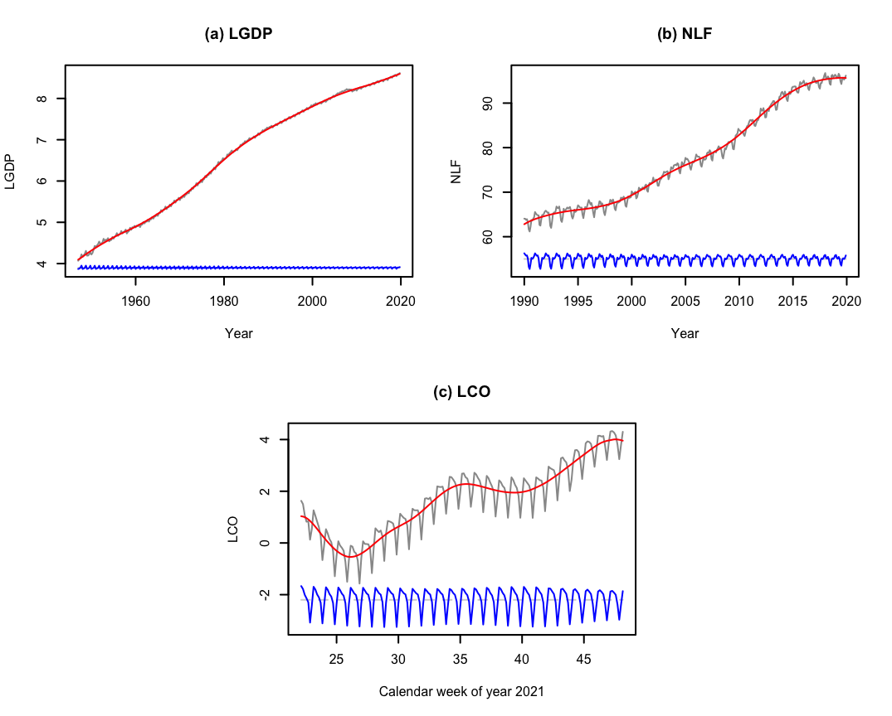
Figure 1: The estimated trend and seasonal components for the LGDP, NLF and LCO data following DeSeaTS. The estimated seasonal components are shifted for better visibility.
The plots containing the observed series, the estimated trends and the estimated seasonal components are displayed in Figure 1. At least for the given examples, deseats seems to provide trend estimates that smoothly follow along the levels of the series, and slowly changing seasonality estimates. For the LGDP series, the trend smooths over the small drop at around year 2008. Note, however, that the three series LGDP, NLF and LCO do not show any extreme jumps or structural breaks, they do not have highly complex trends and the seasonal pattern does not change very quickly over time; those are, nonetheless, characteristics often observed in real data and deseats may struggle to provide good decomposition results in such cases. However, robustifying the DeSeaTS procedure for more complex scenarios is left for future research.
The seasonally adjusted series are obtained in the following using the aforementioned method deseasonalize(). In case of the LGDP and LCO data, exponentiating leads back to the original scale of the time series objects GDP and COVID within deseats.
GDP_sa <- exp(deseasonalize(LGDP_deseats))
NLF_sa <- deseasonalize(NLF_deseats)
COVID_sa <- exp(deseasonalize(LCO_deseats))
ts.plot(GDP, GDP_sa, col = c("grey60", "blue"), main = "(a) Real GDP of the US",
xlab = "Year", ylab = "Billions of USD")
ts.plot(NLF, NLF_sa, col = c("grey60", "blue"), ylab = "Millions of persons",
main = "(b) US persons not in the labor force", xlab = "Year")
ts.plot(COVID, COVID_sa, col = c("grey60", "blue"),
xlab = "Calendar week of year 2021", ylab = "Thousands of cases",
main = "(c) Newly confirmed COVID-19 Cases in Germany")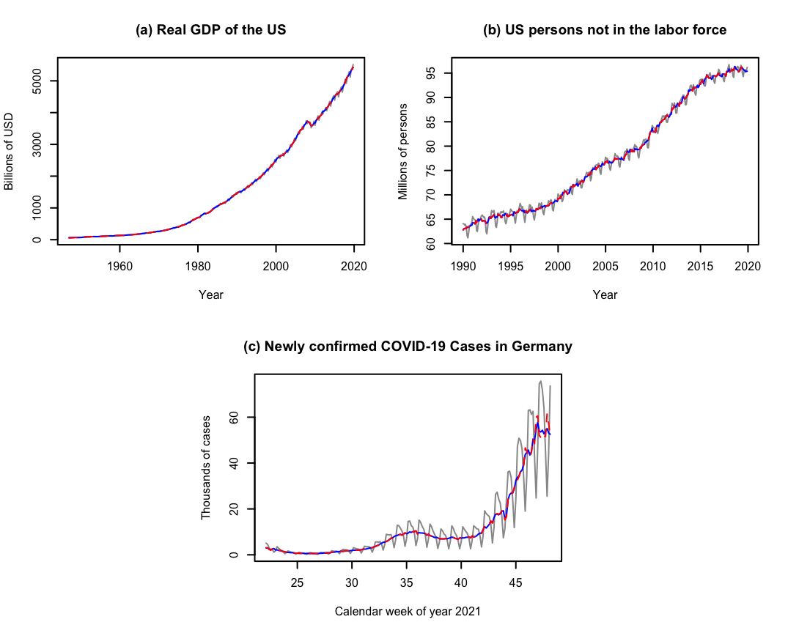
Figure 2: The original example series (grey and solid) together with the seasonally adjusted series following DeSeaTS (blue and solid). The seasonally adjusted series following automated STL decompositions (red and dashed) are displayed as a benchmark.
The original-scale series (solid and grey) together with the seasonally adjusted series by DeSeaTS (solid and blue) are shown in Figure 2. As a benchmark, the seasonally adjusted series in accordance with an automated application of STL via mstl() of the forecast package (dashed and red) are displayed as well. As a first impression, the differences between the two seasonally adjusted series seem to be marginal in all three cases. Near the end of the COVID series, however, the series obtained by STL includes a few clear peaks that have been reduced in the adjusted series following DeSeaTS. Interested readers may also want to compare these results to the seasonally adjusted series obtained by X13 and TRAMO-SEATS, which are the international standard procedures for seasonal adjustment in the European Union. The adjusted series are displayed in Figure 7 in the appendix and were obtained by applying the functions x13() and tramoseats() (with default settings) of the RJDemetra package to the objects GDP and NOLABORFORCE directly. An application of those functions to the COVID data is not possible, as they are designed for quarterly and monthly series.
Entire S-Semi-ARMA models are fitted by applying s_semiarma() to the series of interest. Therein, deseats() is applied initially for decomposing the data; afterwards, an ARMA model is automatically selected for the resulting residual series in accordance with the BIC. Alternatively, implementing inf_criterion = "aic" uses the AIC for the ARMA model identification instead. In the following, we furthermore restrict the AR and MA orders to be selected from the values 0 to 2 via nar_lim <- c(0, 2) and nma_lim <- c(0, 2), so that the selected ARMA models for the residuals do not become too complex.
nar_lim <- nma_lim <- c(0, 2)
model_LGDP <- s_semiarma(LGDP, sm_options1, nar_lim = nar_lim, nma_lim = nma_lim)
model_NLF <- s_semiarma(NLF, sm_options3, nar_lim = nar_lim, nma_lim = nma_lim)
model_LCO <- s_semiarma(LCO, sm_options3, nar_lim = nar_lim, nma_lim = nma_lim) @par_model gives access to the fitted ARMA models for the residual series. In Table 1, the estimation information is summarized for the three series LGDP, NLF and LCO. Therein, the three selected bandwidths by DeSeaTS are stated, which range from 0.0806 for LGDP to 0.2113 for NLF. Furthermore, the estimated ARMA parameters and corresponding standard errors are displayed as selected in the fitted S-Semi-ARMA models. An ARMA(\(2, 1\)) model was fitted to the DeSeaTS residuals for LGDP with a strongly positive lag-1 AR coefficient estimate of 1.5442 and negative lag-2 AR and lag-1 MA coefficient estimates -0.6545 and -0.4083. An AR(1) model was picked by BIC for the DeSeaTS residuals of NLF with a strongly positive coefficient estimate 0.6885. Conversely, an MA(1) model was selected for the LCO residuals with strongly positive MA coefficient estimate 0.5485. All estimated coefficients are statistically significant at least at the 5% level of significance.
| Series | Bandwidth | \(\hat\phi_1\) | \(se\left(\hat\phi_1\right)\) | \(\hat\phi_2\) | \(se\left(\hat\phi_2\right)\) | \(\hat\theta_1\) | \(se\left(\hat\theta_1\right)\) | \(p\)-value (QS) | \(p\)-value (Friedman) |
|---|---|---|---|---|---|---|---|---|---|
| LGDP | 0.0806 | 1.5442 | 0.0935 | -0.6545 | 0.0825 | -0.4083 | 0.1121 | 0.3140 | 0.9623 |
| NLF | 0.2113 | 0.6885 | 0.0380 | — | — | — | — | 1.0000 | 0.9992 |
| LCO | 0.1256 | — | — | — | — | 0.5485 | 0.0542 | 1.0000 | 0.9958 |
In addition, QS tests, i.e. a special form of the Ljung-Box test at seasonal lags (Ljung and Box 1978), and Friedman rank tests (Friedman 1937, 1939) were applied to the S-Semi-ARMA residuals fitted to the three series. For the QS tests, we check for the statistical significance of autocorrelations at the first and second seasonal lags; for the Friedman tests, we do not consider residuals in incomplete years / weeks. The \(p\)-values obtained are also stated in Table 1. According to the Friedman tests, we clearly cannot reject the null hypothesis of no stable seasonality in any of the cases. Simultaneously, the null hypothesis of no seasonality cannot be rejected in all three cases following the QS tests either, as the smallest obtained \(p\)-value is 0.3140 in the context of the LGDP series. Since the test decisions align, we conclude that the removal of the seasonality from the three series was successful.
Following the fitted S-Semi-ARMA models, point and interval forecasts can be created as discussed in the last subsection of Section 2. For simplicity, we use method = "boot" in the calls to the predict() method to compute the interval forecasts from a bootstrap. For reproducibility, a seed needs to be set via set.seed(). Since extrapolating the trend and seasonal component estimates into the future is highly unstable if the forecasting horizon is too large, we produce forecasts for one cycle of the seasonal pattern. To exponentiate the forecasts back to the scale of the original GDP and COVID objects in deseats, we implement expo = TRUE in these two cases. By default (adjust.bias = TRUE), the point forecasts are adjusted for bias upon retransformation to the original scale.
A designated plot() method allows one to produce quick figures of the forecasts. The corresponding forecasting plots for the three examples are displayed in Figure 3.
plot(fc_GDP_DS, main = "(a) Real GDP of the US", xlab = "Year",
ylab = "Billions of USD", xlim = c(2010, 2020.75), ylim = c(3500, 6000))
plot(fc_NLF_DS, main = "(b) US persons not in the labor force", xlab = "Year",
ylab = "Millions of persons", xlim = c(2010, 2020.917), ylim = c(80, 97.2))
plot(fc_COVID_DS, main = "(c) Newly confirmed COVID-19 Cases in Germany",
xlab = "Calendar week of year 2021", ylab = "Thousands of cases",
xlim = c(45, 49.143), ylim = c(10, 85))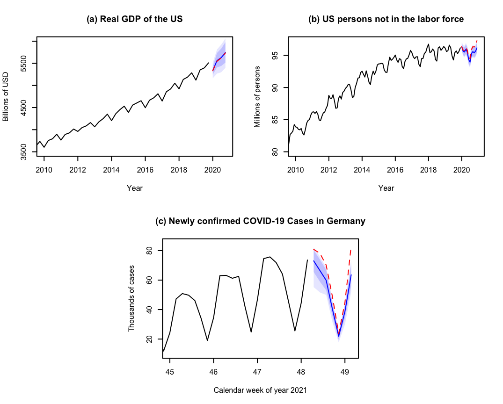
Figure 3: S-Semi-ARMA point and 95% / 99% interval forecasts (blue) together with automated ARIMA-based STL point forecasts (red) as a benchmark.
The point forecasts (solid and blue) extend the series logically into the future, and the 95%- and 99%-forecasting intervals give a first impression of the uncertainty related to each point forecast. As a benchmark, the point forecasts (red and dashed) from an automated ARIMA model with added seasonality estimated via STL by mstl() of the forecast package are displayed as well; the extra code can be obtained from the accompanying material. For the GDP series (Figure 3(a)), the point forecasts are close to each other. In fact, the point forecasts of the benchmark method lie within the 95%-forecasting intervals by the S-Semi-ARMA models in both cases. For the labor force series (Figure 3(b)), the point forecasts align roughly initially, but after a few months they diverge, leading to the benchmark forecasts leaving the forecasting intervals by S-Semi-ARMA after 12 months. For the COVID-19 series (Figure 3(c)), the point forecasts do not align for most of the future time points. The benchmark forecasts are almost always larger than the upper bound of the 99%-forecasting interval of the S-Semi-ARMA, with the exception of the first and fourth future day. The reason for the difference in point forecasts in the last two cases is that the S-Semi-ARMA forecast, even with linear extrapolation of the trend, also considers the curvature of the fitted trend at the end points to some degree, which is usually more pronounced if a local cubic trend is considered. A comparison of quantified forecasting quality between various methods is, however, not within the scope of this article.
Two different simulation studies are conducted hereinafter. The first study is done to analyze whether the proposed extended DeSeaTS algorithm estimates the smoothing bandwidth suitably both under the assumptions stated in this article and under a slowly changing seasonal component, i.e. under a mild relaxation of assumption (A3) in the first subsection of Section 2. The same simulation study also researches the estimation quality of the trend, the seasonal component and of the trend-seasonal component by DeSeaTS. The second simulation study compares the quality of seasonal component estimation of DeSeaTS in direct comparison to other established seasonal adjustment approaches under various settings.
The first simulation study is conducted to verify that the DeSeaTS algorithm works well in practice for series with trends, seasonal components and errors of varying degrees of complexity. We consider the trend functions \[\begin{align*} &g_1(x_t)=5x_t + 1,\\ &g_2(x_t)=2.5\tanh\left[5(x_t - 0.4)\right] + 3.5\hspace{3mm}\text{ and}\\ &g_3(x_t) = 3.2 x_t + 0.92 \sin[3.2\pi (x_t - 0.2)]+1.85, \end{align*}\] i.e. \(g_1(x_t)\) is a simple linear trend, \(g_2(x_t)\) represents a possible simple trend for macroeconomic growth and \(g_3(x_t)\) is a more complex trend not necessarily representative of the progression of macroeconomic time series. Using these definitions, all trends range roughly in between 1 and 6 for \(x_t\in[0,1]\). In addition, two error processes are considered: \(\left\{e_{1,t}\right\}\) is an AR(1)-process with AR-coefficient \(\phi_{1,1} = 0.75\) and innovation variance \(\sigma_{e,1}^2=0.083^2\) and \(\left\{e_{2,t}\right\}\) follows an AR(2)-process with \(\phi_{1,2} = 1.05\), \(\phi_{2,2} = -0.3\) and \(\sigma_{e,2}^2 = 0.06^2\). Throughout, innovations are independently normally distributed with mean zero and the corresponding innovation variance. The seasonal components considered here are \(s_{1,4}(x_t)\) and \(s_{2,4}(x_t)\) for quarterly data as well as \(s_{1,12}(x_t)\) and \(s_{2,12}(x_t)\) for monthly data. We define \[\begin{align*} s_{1,4}(x_t)&=\left\{\begin{array}{rl} -0.39, & \hspace{3mm}\text{ for }[(t-1)\text{ mod } 4] = 0,\\ 0.01, & \hspace{3mm}\text{ for }[(t-1)\text{ mod } 4] = 1,\\ -0.04, & \hspace{3mm}\text{ for }[(t-1)\text{ mod } 4] = 2,\\ 0.42, & \hspace{3mm}\text{ for }[(t-1)\text{ mod } 4] = 3,\end{array}\right\} \hspace{6mm}\text{ and}\\ s_{1,12}(x_t)&=\left\{\begin{array}{rl} -0.39, & \hspace{3mm}\text{ for }[(t-1)\text{ mod } 12] = 0,\\ 0.05, & \hspace{3mm}\text{ for }[(t-1)\text{ mod } 12] = 1,\\ -0.01, & \hspace{3mm}\text{ for }[(t-1)\text{ mod } 12] = 2,\\ -0.16, & \hspace{3mm}\text{ for }[(t-1)\text{ mod } 12] = 3,\\ -0.31, & \hspace{3mm}\text{ for }[(t-1)\text{ mod } 12] = 4,\\ -0.24, & \hspace{3mm}\text{ for }[(t-1)\text{ mod } 12] = 5,\\ -0.25, & \hspace{3mm}\text{ for }[(t-1)\text{ mod } 12] = 6,\\ -0.10, & \hspace{3mm}\text{ for }[(t-1)\text{ mod } 12] = 7,\\ 0.50, & \hspace{3mm}\text{ for }[(t-1)\text{ mod } 12] = 8,\\ 0.62, & \hspace{3mm}\text{ for }[(t-1)\text{ mod } 12] = 9,\\ 0.34, & \hspace{3mm}\text{ for }[(t-1)\text{ mod } 12] = 10,\\ -0.05, & \hspace{3mm}\text{ for }[(t-1)\text{ mod } 12] = 11.\\ \end{array}\right\} \end{align*}\] \(s_{1,4}(x_t)\) and \(s_{1,12}(x_t)\) are hence exactly periodic. In addition, we have \(s_{2,4}(x_t)=f_{\text{sc}}(x_t)s_{1,4}(x_t)\) and \(s_{2,12}(x_t)=f_{\text{sc}}(x_t)s_{1,12}(x_t)\), where \[\begin{equation*} f_{\text{sc}}(x_t)=0.83 [1 + 0.1 \sin(50\pi x_t/ 9) + 0.2 \cos(3\pi x_t)], \end{equation*}\] so that \(s_{2,4}(x_t)\) and \(s_{2,12}(x_t)\) have slowly changing amplitudes over time.
Furthermore, for the simulation, we check for \(n_\text{1}=15p_s\), \(n_{\text{2}}=30p_s\) and \(n_{3}=60p_s\), \(p_s=4\) for quarterly data and \(p_s=12\) for monthly data, as numbers of observations, so that we are simulating data for 15, 30 and 60 years, respectively. Since DeSeaTS considers an asymptotically optimal bandwidth (12) internally, the smallest number of observations considered, \(n_1\), is not set to an overly small value. In the following, the asymptotically optimal bandwidth is calculated in each of the setting combinations, however, whenever \(s_{2,4}\) or \(s_{2,12}\) are used, the values can only be interpreted as rough approximations, as Equation (12) holds only under exact periodicity or constantly linearly changing seasonality. Moreover, for \(g_1(x_t)\) we have \(h_A\rightarrow \infty\). Thus, in these situations, we consider \(h_A=0.49\), since this is the maximum value for the bandwidth estimate the algorithm implemented in deseats can return. Given the trends \(g_1\), \(g_2\) and \(g_3\), the seasonal components \(s_{1,4}\), \(s_{2,4}\), \(s_{1,12}\) and \(s_{2,12}\), the error processes \(\left\{e_{1,t}\right\}\) and \(\left\{e_{2,t}\right\}\), and the numbers of observations \(n_1\), \(n_2\) and \(n_3\), we check 72 constellations. For each of them we produce 1000 simulated series. The DeSeaTS bandwidth selection algorithm and automated decomposition is used under \(r=1\) and \(r = 3\) with both optimal and naive inflation rates. By default, \(c_b=0.05,d_b=0.95\) and a starting bandwidth of 0.1 are employed whenever \(r=1\), and \(c_b=0.1,d_b=0.9\) are considered with the starting bandwidth 0.2 for \(r=3\). Furthermore, an epanechnikov kernel (\(\mu=1\)) is considered throughout. We run the DeSeaTS algorithm to estimate the bandwidth for each simulated series and obtain the sample mean, the sample standard deviation and the sample mean squared error (MSE) of the bandwidth estimates for each setting. Furthermore, the mean MSE is obtained for the trend estimates (\(\hat g\)), the seasonality estimates (\(\hat s\)) and for the trend estimates together with the seasonality estimates (\(\hat m = \hat g + \hat s\)).
In Figures 4 and 5, examples of simulated series under these settings are illustrated together with the true trends and seasonal components and their estimates. For simplicity, the illustrated simulated series were obtained with \(n_1\) and the same realization of \(\{e_{1,t}\}\). The estimation results were obtained using deseats considering \(r=3\) with inflation_rate = "naive" and drop = 0.1, i.e. the default settings for \(r=3\) within deseats. It is apparent that Subfigures (b), (d) and (f) in Figures 4 and 5 show a slow change in the seasonal component \(s_2\) over time, resulting in slowly changing phases of smaller and larger seasonal variation. Conversely, the seasonal component \(s_1\) implemented in Subfigures (a), (c) and (e) remains exactly periodic throughout. Furthermore, the increase in complexity of the trends from \(g_1\) over \(g_2\) to \(g_3\) is visible in Figure 4, because of the rise in the number of (local) minima and maxima and turning points. Regarding the estimated trends displayed as solid red lines in Figure 4, we can observe that, despite the low number of observations, the true trends, which are shown as blue dashed lines, are captured well in all scenarios, including the Subfigures 4(a) and 4(b), where the simple linear trend \(g_1\) was considered. Similarly, the estimated seasonal components illustrated as solid red lines in Figure 5 are close to the true seasonal components, shown as grey solid lines, throughout. Even the slow change in the seasonal component \(s_2\) is captured to some degree in the estimates in Subfigures (b), (d) and (f). However, it is observable at the very beginning and the very end of the time period that the seasonality estimates by DeSeaTS cannot seem to follow the changes of the true component as quickly, as the true component shows its quickest changes during those periods.
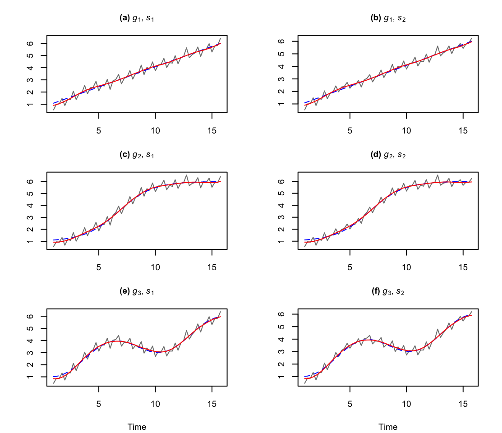
Figure 4: Examples of quarterly simulated series (grey and solid) together with the true underlying trends (blue and dashed) for \(n_1\) and the estimated trends (red and solid) using the DeSeaTS framework with \(r=3\). All examples are with number of observations \(n_1\) and the same simulated errors from \(\{e_{1,t}\}\).
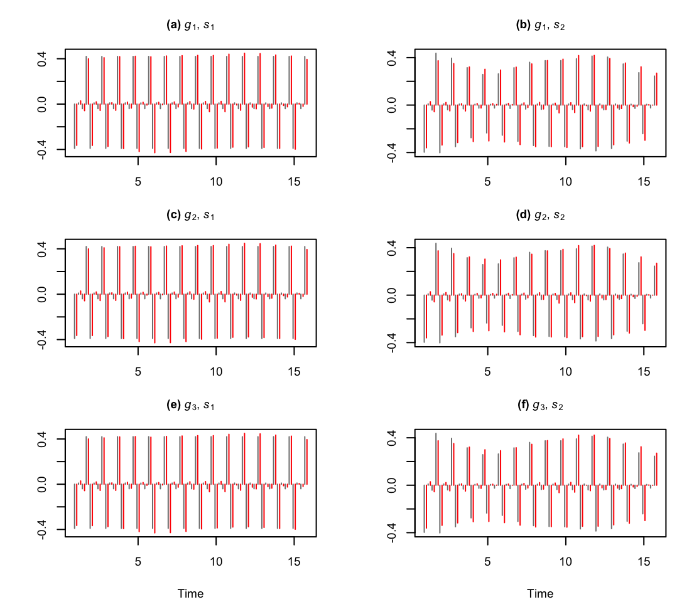
Figure 5: True underlying seasonal components (grey and solid) of the quarterly simulated examples and the estimated seasonal components (red and solid) using the DeSeaTS framework with \(r=3\). On the time axis, the true values are slightly shifted to the left and the estimates slightly to the right for better comparability. All examples are with number of observations \(n_1\) and the same simulated errors from \(\{e_{1,t}\}\).
Figures 8 to 15 in the appendix show boxplots of the estimated bandwidths for the various simulation settings. Analogously, Tables 2 to 5 in the appendix show the sample mean of the estimated bandwidths \(\text{Mean}\left(\hat h\right)\), the sample standard deviations of the estimated bandwidths \(\text{SD}\left(\hat h\right)\), the sample mean squared error \(\text{MSE}\left(\hat h\right)\) and the average sample MSEs over all time points and iterations for the estimated trend (\(\text{MSE}\left(\hat g\right)\)), for the estimated seasonal component (\(\text{MSE}\left(\hat s\right)\)) and for the estimated trend-seasonal component (\(\text{MSE}\left(\hat m\right)\)). MSEs and \(\text{SD}\left(\hat h\right)\) values in the tables were multiplied by 1000. The given asymptotic bandwidths \(h_A\) are only valid under the exactly periodic component \(s_1\); they are only rough approximations under \(s_2\).
We can conclude that DeSeaTS under \(r=3\) can sometimes struggle to select the optimal bandwidth under a very simplistic simple linear trend \(g_1\), as the bandwidth is clearly underestimated. However, the MSE of the bandwidth estimator still reduces slightly for an increase in the number of observations and the average MSEs of the estimated components still clearly decrease. Furthermore, considering more complex trends \(g_2\) and \(g_3\), the bandwidth selection seems to be most stable under an optimal inflation rate for \(r=1\) and under a naive inflation rate for \(r=3\). In some instances, \(r=1\) with naive inflation rate also works well for large enough \(n\), but usually comes with a larger \(\text{SD}\left(\hat h\right)\). Consistency of the bandwidth selection is apparent from the decrease in \(\text{MSE}\left(\hat h\right)\) for an increase in the number of observations. \(\text{SD}\left(\hat h\right)\) can sometimes increase when increasing the number of observations from \(n_1\) to \(n_2\); we presume that this is due to the relatively small number of observations \(n_1\) and the hence more unstable behavior of the bandwidth selector, as asymptotics may not yet be a good enough approximation under \(n_1\). In addition, in some few instances, for example \(r=3\) with \(g_3\), \(s_1\) and \(\{e_{1,t}\}\) in the quarterly setting, one may yet need a larger number of observations, so that the bandwidth estimator may become even closer to the true \(h_A\). This is because quarterly data contains fewer observations to estimate the sum of autocovariances \(2\pi c_f\) from than monthly data (for the same amount of years). Likewise, \(\hat h\) is expected to converge more slowly to \(h_A\) for \(r=3\) than for \(r=1\) (see Equation (15)). Converging behavior in this context is observable nonetheless. Importantly, the bandwidth selector also seems to converge to the (approximated) true \(h_A\) for \(s_2\) in all cases with an increase in \(n\).
Due to the decrease in \(\text{MSE}\left(\hat g\right)\), \(\text{MSE}\left(\hat s\right)\) and \(\text{MSE}\left(\hat m\right)\) by approximately constant rates, we have a strong indication that DeSeaTS leads to consistent estimators of the components. This implies also consistency of the error estimator \(\hat\xi_t=y_t-\hat m(x_t)\) and consequently of ARMA parameters obtained from \(\hat\xi_t\) instead of the non-observable \(\xi_t\).
We consider the following additive base model: \[\begin{equation*} Y_{ijk,t} = \alpha G_{i,t} + \beta S_{j,t} + \gamma E_{k,t} \end{equation*}\] with \(G_{i,t}\), \(i=1,2\), as a (deterministic or stochastic) trend, \(S_{j,t}\), \(j=1,2,3\), as a (deterministic or stochastic) seasonal component, and \(E_{k,t}\), \(k=1,2,3\) as a stochastic error. \(\alpha,\beta,\gamma>0\) are real constants. \(G_{1,t}\) is the same as \(g_{3}(x_t)\) from the first simulation study but normalized to have (sample) mean zero and (sample) variance one and \(G_{2,t}\) is obtained from a random walk with iid \(N(0.05,1)\) innovations and again normalized. \(S_{1,t}\) is \(s_1(x_t)\) from the first simulation study but normalized to have (sample) mean zero and (sample) variance one, \(S_{2,t}\) is the normalized analogue of \(s_2(x_t)\) from the first simulation study, and \(S_{3,t}\) is obtained from \(S_{3,t}=-\sum_{l=1}^{p_s - 1}S_{3,t-l}+e_t\) and then normalized, where \(e_t\overset{\text{iid}}{\sim}N(0,0.025)\). Furthermore, we have \(E_{1,t}\overset{\text{iid}}{\sim}N(0,1)\), \(E_{2,t}\) being governed by an AR(1) process with AR-parameter 0.75 and innovation variance \(1 - 0.75^2\), and \(E_{3,t}\) follows an AR(2) process with parameters 1.05 and -0.3 as well as the innovation variance \(0.7(1.3^2 - 1.05^2) / (1.3)\). All three error variants are hence with (theoretical) mean zero and (theoretical) variance one. Note that \(G_{1,t}\) is deterministic, while \(G_{2,t}\) is stochastic. \(S_{1,t}\) and \(S_{2,t}\) are both deterministic, while \(S_{1,t}\) is exactly periodic and \(S_{2,t}\) is changing slowly over time. In contrast, \(S_{3,t}\) is stochastic. Example realizations of the stochastic components \(G_{2,t}\) and \(S_{3,t}\) and their quickly changing behavior can be observed in Figure 6.
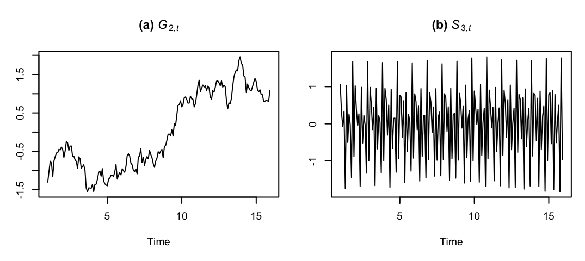
Figure 6: A realization of the stochastic trend \(G_{2,t}\) and of the stochastic seasonal component \(S_{3,t}\) for 15 years.
Since DeSeaTS uses an asymptotically valid bandwidth formula internally, we consider for the comparison \(n_1=15p_s\), \(n_2=30p_s\) and \(n_3=60p_s\) observations; numbers of observations smaller than \(n_1\) are not considered here and should be studied elsewhere. For simplicity, we only consider \(p_s = 4,12\) as the two most frequent seasonal periods in macroeconomic time series. In addition, we keep \(\alpha = 1\) and \(\beta=0.4\) constant throughout and consider \(\gamma = 0.1, 0.2\). Given two trends, three seasonal components, three error variations, three numbers of observations, two seasonal periods and two settings of \(\gamma\), we arrive at 216 different setting combinations. For each of them, we simulate 1000 series and apply different methods to them.
In the following, the abbreviations DS, X13, TS, STL, TBATS and MA are used for DeSeaTS, X13-ARIMA, TRAMO-SEATS, STL, TBATS and the decompose() function, respectively. X13 and TS will be implemented using the functions x13() and tramoseats() of the RJDemetra package, where, aside from turning off calendar adjustments, default settings will be employed. STL will be applied by means of the automated function mstl() of the forecast package, and TBATS will be implemented following the function tbats() within the same package. DeSeaTS will be tested with different algorithm settings, so that the abbreviations \(\text{DS}_{1,\text{opt}}\), \(\text{DS}_{1,\text{nai}}\), \(\text{DS}_{3,\text{opt}}\) and \(\text{DS}_{3,\text{nai}}\) indicate the order of local polynomial \(r\) as well as the inflation factor (optimal or naive). We consider the final seasonality estimates as returned by those functions.
Tables 6 through 17 in the appendix contain the simulated numerical results following the different specifications. They contain the average sample MSE (Mean) of the seasonality estimates over all time points and 1000 simulated series as well as the sample standard deviation (SD) of the average MSEs obtained for each of the 1000 series (separately for each estimation method). Both quantities are multiplied by 1000. From the tables we can conclude the following: for \(S_1\), MA always produces the smallest average MSE in our simulation. This is not unexpected, as MA assumes an exactly periodic component and estimates the seasonality using global averaging of detrended values of the same time unit. In some instances, it can also produce the smallest average MSE among the tested methods for \(n_1\) under more complex settings. The worst performing method on average for quarterly series is TBATS, which produces in the given simulation notably larger average MSE values than the other approaches throughout without a structural decrease in average MSE. Moreover, TBATS is the only method that, in rare cases, failed to run the decomposition successfully; its stated average MSE and standard deviation values hence rely sometimes on fewer simulated series. Its performance is, however, clearly better for monthly series under \(S_1\) and \(S_2\). For \(S_3\), its estimation quality decreases again.
X13 is never the best-performing method under any of the settings in our simulation study. Under \(n_1\), it usually performs better than DS, but yet still worse than STL or TS. Under \(n_1\), STL sometimes performs best for \(G_1\) together with \(S_3\). Aside from the cases where MA and STL have the smallest average MSE, the minimum-MSE methods are always TS or DS. DS appears to usually exceed other methods for larger numbers of observations under \(S_2\) for all three error processes regardless of whether a deterministic trend (\(G_1\)) or a stochastic trend (\(G_2\)) is considered. While this holds true for \(n_2\) and \(n_3\) in most cases, there are rare exceptions, where TS works slightly better. For quarterly data with \(S_2\) and larger numbers of observations \(n_2\) and \(n_3\), DS with local cubic trend is on average preferable under iid errors, and DS with local linear trend under autocorrelated errors, where the differences in estimation quality between the algorithm with optimal and naive inflation rate are usually minimal. For monthly data with \(S_2\), DS is more sensitive to the magnitude of errors given different trend settings. For \(\gamma = 0.1\), DS with local linear trend works better for \(G_1\), if the errors are autocorrelated, whereas DS with local cubic trend results in smaller average MSE for \(G_2\). Under \(\gamma = 0.2\) and \(S_2\), DS with local cubic trend is on average the best method for larger numbers of observations regardless of the trend setting.
If the stochastic seasonal component \(S_3\) is considered, TS is often the most competitive method. The disadvantage of DS for this setting is expected, as the method assumes a deterministic seasonal component. Hence, random short-term changes in the seasonality cannot be identified properly by DS. Nonetheless, as can be seen in Tables 14 and 17, DS with local cubic trend can sometimes outperform TS even under \(S_3\) for a large number of observations. In all other cases with \(S_3\), the best DS subroutine is usually only roughly 0.2 to 0.4 points in MSE worse than TS for large \(n\). Furthermore, in these instances, we can observe a stronger decrease in the average MSE by DS than by TS. While left for future research, it seems not unreasonable to assume that DS may outperform TS even for \(S_3\), if the number of observations was even larger than \(n_3\).
A data-driven algorithm for decomposing univariate time series into a trend component, a seasonal component and a remainder component using locally weighted regression is proposed that extends already established algorithms for the case when the remainder is not iid. Moreover, the algorithm is fully nonparametric, as no further model assumptions are imposed on the remainder term. Therefore, a seasonal semiparametric extension of the ARMA model is introduced that can be fitted in two simple consecutive steps and used for producing point and interval forecasts. All methods described are made applicable within the R package deseats. The decomposition performance of the proposed method on real-world data is validated against STL as a benchmark, whereas the seasonal adjustments by X13-ARIMA and TRAMO-SEATS are also shown as a reference whenever possible. In case of the three selected examples series, the US-GDP, the non-laborforce US-series, and the German COVID cases, all of which have different seasonal periods, DeSeaTS leads to suitable seasonal adjustments following two common seasonality tests.
A simulation study confirmed the consistency of the DeSeaTS bandwidth selector and of the correspondingly estimated trend, seasonal and trend-seasonal components, even if the assumption of exact periodicity is violated. Ultimately, a second simulation study compared the quality of seasonality estimation of various popular methods. In our setup, DeSeaTS usually works best in identifying the seasonal component under a slowly changing but still deterministic seasonal component, regardless of deterministic or stochastic trends and regardless of iid or autocorrelated errors, if the number of observations is sufficiently large. In our simulation, this was usually fulfilled for quarterly and monthly series of 30 or 60 years. Under an exactly periodic seasonal component, approaches with global seasonality estimation are preferable. Such a behavior is, however, not observable in most real-world data. In addition, the study showed that TRAMO-SEATS usually works best under a stochastic seasonal component. While DeSeaTS produced competitive results for large numbers of observations in such instances, it outperformed TRAMO-SEATS only on few occasions. In spite of this, the rate of decrease in average MSE of the DeSeaTS seasonality estimator, compared to that of TRAMO-SEATS, suggests that the DeSeaTS seasonality estimator could exceed that of TRAMO-SEATS in quality also under stochastic seasonality for even larger numbers of observations than those considered here. Thus, while DeSeaTS works poorly for small numbers of observations (by design), it is a viable and flexible choice for decomposition of seasonal time series and seasonal adjustment.
However, the introduced algorithm and the current version of the deseats package can clearly be improved. First, the current algorithm requires the seasonal component to be exactly periodic at least in theory. While we find that the algorithm also works reasonably well under violations of this assumption, like a slowly changing deterministic seasonal component, an improved algorithm, for which this assumption could be relaxed, is desirable. Moreover, the development of a procedure in which two separate bandwidths, one for the trend and one for the seasonal component, are estimated in a data-driven way, could be a promising endeavor. An additional feature could be the consideration of long-range dependence in the data. In the current state of the algorithm only short-memory errors are assumed, which could lead to misspecifications in some cases. As a further point, DeSeaTS may be non-robust with respect to outliers and structural breaks, which was not studied in detail within this article. A further disadvantage is that DeSeaTS in its current version does not account for trading-day effects. Ultimately, while we have shown the consistency of the trend and seasonality estimates following DeSeaTS in the given simulation studies, which implies that the residuals must approach the true errors, an additional simulation study on the parametric part of the seasonal Semi-ARMA is left for future research.
The numerical and visual results in this paper were obtained using R 4.5.1 with the deseats 1.1.2 package, the RJDemetra 0.2.8 package and the forecast 8.23.0 package. R itself and all packages used are available from the Comprehensive R Archive Network (CRAN) at https://CRAN.R-project.org/.
Acknowledgments: We thank the Federal Statistical Office of Germany for allowing us to implement the estimation method of the BV4.1 base model into the deseats package. Moreover, we are grateful to CRAN for their help during the publication of the R package deseats. We would also like to thank Prof. Dr. Yuanhua Feng and Ms. Shujie Li for helpful discussions, and two anonymous reviewers for thoughtful feedback to help improve the empirical section of this article.
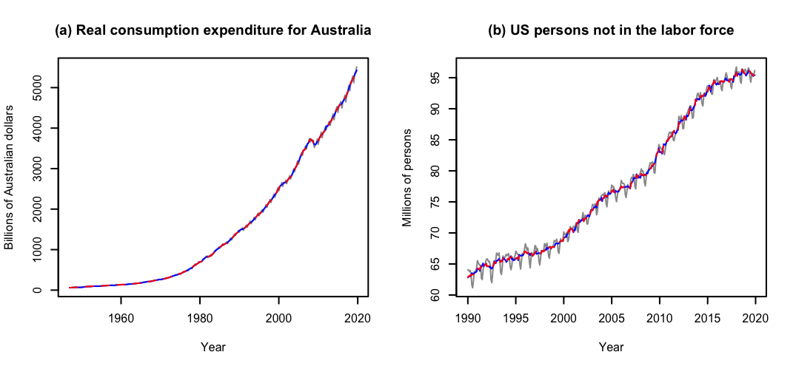
Figure 7: Seasonally adjusted series for the US-GDP series and of the series about US persons not in the labor force following the automated X13 (blue and solid) and TRAMO-SEATS (red and dashed) subroutines of RJDemetra+. X13 used a 5-terms Henderson trend filter and a 3x5 seasonal filter for the series in (a), whereas a 13-terms Henderson trend filter and a 3x5 seasonal filter were considered for the series in (b).
On the following pages, the Tables 2 through 5 and the Figures 8 through 15 with the results for the first simulation study described in Section 4 are included. Brief interpretations of the results are given within Section 4. The tables include the asymptotically optimal bandwidths \(h_A\) for each setting, the sample mean over the estimated bandwidths \(\text{Mean}\left(\hat h\right)\), the sample standard deviation over the estimated bandwidths \(\text{SD}\left(\hat h\right)\) (multiplied by 1000), the sample MSE over the estimated bandwidths \(\text{MSE}\left(\hat h\right)\) (multiplied by 1000), and the average sample MSE over all series and time points for the estimated trend, the estimated seasonal component, and the estimated trend-seasonal component, denoted by \(\text{MSE}\left(\hat g\right)\), \(\text{MSE}\left(\hat s\right)\) and \(\text{MSE}\left(\hat m\right)\), respectively, and multiplied by 1000. The figures show the distributions of the estimated bandwidths.
| \(r\) | Inflation | Quantity | \(n_1\) | \(n_2\) | \(n_3\) | \(n_1\) | \(n_2\) | \(n_3\) | \(n_1\) | \(n_2\) | \(n_3\) | \(n_1\) | \(n_2\) | \(n_3\) | \(n_1\) | \(n_2\) | \(n_3\) | \(n_1\) | \(n_2\) | \(n_3\) |
|---|---|---|---|---|---|---|---|---|---|---|---|---|---|---|---|---|---|---|---|---|
| 1 | \(h_A\) | 0.49 | 0.49 | 0.49 | 0.16 | 0.14 | 0.12 | 0.12 | 0.11 | 0.09 | 0.49 | 0.49 | 0.49 | 0.16 | 0.14 | 0.12 | 0.12 | 0.11 | 0.09 | |
| optimal | \(\text{Mean}\left(\hat{h}\right)\) | 0.15 | 0.16 | 0.17 | 0.11 | 0.11 | 0.10 | 0.10 | 0.08 | 0.08 | 0.15 | 0.16 | 0.17 | 0.11 | 0.11 | 0.10 | 0.10 | 0.08 | 0.08 | |
| \(\text{SD}\left(\hat{h}\right)\) | 41.73 | 47.60 | 48.95 | 7.69 | 11.08 | 9.10 | 4.01 | 7.94 | 6.39 | 42.15 | 47.40 | 49.90 | 7.90 | 11.08 | 9.12 | 4.08 | 7.94 | 6.38 | ||
| \(\text{MSE}\left(\hat{h}\right)\) | 115.66 | 110.12 | 103.64 | 3.42 | 1.57 | 0.60 | 0.52 | 0.56 | 0.28 | 117.61 | 111.27 | 103.80 | 3.40 | 1.56 | 0.60 | 0.55 | 0.57 | 0.28 | ||
| \(\text{MSE}\left(\hat{g}\right)\) | 6.73 | 4.03 | 2.25 | 9.41 | 6.11 | 3.93 | 13.38 | 8.11 | 5.23 | 6.79 | 4.06 | 2.25 | 9.44 | 6.11 | 3.93 | 13.38 | 8.09 | 5.23 | ||
| \(\text{MSE}\left(\hat{s}\right)\) | 0.86 | 0.41 | 0.19 | 1.14 | 0.56 | 0.29 | 1.21 | 0.68 | 0.37 | 1.12 | 0.66 | 0.47 | 1.22 | 0.62 | 0.33 | 1.25 | 0.71 | 0.38 | ||
| \(\text{MSE}\left(\hat{m}\right)\) | 7.55 | 4.41 | 2.43 | 10.18 | 6.65 | 4.21 | 14.10 | 8.78 | 5.59 | 7.87 | 4.69 | 2.72 | 10.27 | 6.72 | 4.26 | 14.20 | 8.80 | 5.61 | ||
| naive | \(\text{Mean}\left(\hat{h}\right)\) | 0.19 | 0.20 | 0.21 | 0.12 | 0.12 | 0.11 | 0.11 | 0.10 | 0.09 | 0.18 | 0.20 | 0.21 | 0.12 | 0.12 | 0.11 | 0.11 | 0.10 | 0.09 | |
| \(\text{SD}\left(\hat{h}\right)\) | 50.33 | 55.66 | 57.00 | 18.27 | 14.81 | 10.59 | 4.49 | 10.16 | 7.77 | 51.99 | 55.87 | 57.56 | 18.51 | 14.76 | 10.56 | 4.41 | 10.16 | 7.78 | ||
| \(\text{MSE}\left(\hat{h}\right)\) | 94.51 | 86.51 | 79.72 | 2.37 | 0.73 | 0.23 | 0.26 | 0.20 | 0.11 | 96.29 | 86.70 | 79.62 | 2.29 | 0.71 | 0.22 | 0.27 | 0.21 | 0.11 | ||
| \(\text{MSE}\left(\hat{g}\right)\) | 6.21 | 3.58 | 1.98 | 10.08 | 6.55 | 4.21 | 13.94 | 9.14 | 5.72 | 6.29 | 3.59 | 1.98 | 10.14 | 6.56 | 4.22 | 13.89 | 9.11 | 5.72 | ||
| \(\text{MSE}\left(\hat{s}\right)\) | 0.72 | 0.34 | 0.16 | 1.13 | 0.51 | 0.26 | 1.27 | 0.61 | 0.34 | 1.13 | 0.77 | 0.63 | 1.24 | 0.60 | 0.33 | 1.31 | 0.65 | 0.36 | ||
| \(\text{MSE}\left(\hat{m}\right)\) | 6.88 | 3.90 | 2.14 | 10.72 | 7.01 | 4.46 | 14.19 | 9.82 | 6.05 | 7.36 | 4.34 | 2.61 | 10.87 | 7.11 | 4.54 | 14.28 | 9.85 | 6.08 | ||
| 3 | \(h_A\) | 0.49 | 0.49 | 0.49 | 0.30 | 0.27 | 0.25 | 0.26 | 0.24 | 0.22 | 0.49 | 0.49 | 0.49 | 0.30 | 0.27 | 0.25 | 0.26 | 0.24 | 0.22 | |
| optimal | \(\text{Mean}\left(\hat{h}\right)\) | 0.16 | 0.16 | 0.17 | 0.16 | 0.16 | 0.16 | 0.15 | 0.15 | 0.16 | 0.15 | 0.16 | 0.17 | 0.15 | 0.16 | 0.16 | 0.15 | 0.15 | 0.16 | |
| \(\text{SD}\left(\hat{h}\right)\) | 25.48 | 23.64 | 25.00 | 24.41 | 22.15 | 22.87 | 20.11 | 18.23 | 17.18 | 26.06 | 23.62 | 24.87 | 24.74 | 22.14 | 22.65 | 20.87 | 18.20 | 17.17 | ||
| \(\text{MSE}\left(\hat{h}\right)\) | 111.63 | 108.83 | 105.75 | 20.16 | 13.58 | 8.58 | 11.43 | 6.98 | 4.05 | 113.06 | 109.27 | 106.06 | 20.87 | 13.75 | 8.65 | 11.73 | 7.08 | 4.08 | ||
| \(\text{MSE}\left(\hat{g}\right)\) | 9.92 | 6.67 | 4.06 | 9.98 | 6.71 | 4.10 | 10.11 | 6.84 | 4.21 | 10.00 | 6.69 | 4.07 | 10.06 | 6.73 | 4.10 | 10.19 | 6.86 | 4.22 | ||
| \(\text{MSE}\left(\hat{s}\right)\) | 0.81 | 0.39 | 0.19 | 0.81 | 0.39 | 0.19 | 0.84 | 0.40 | 0.20 | 1.11 | 0.63 | 0.42 | 1.11 | 0.62 | 0.42 | 1.10 | 0.61 | 0.39 | ||
| \(\text{MSE}\left(\hat{m}\right)\) | 10.61 | 7.03 | 4.24 | 10.67 | 7.07 | 4.28 | 10.83 | 7.21 | 4.40 | 10.91 | 7.28 | 4.48 | 10.97 | 7.32 | 4.51 | 11.11 | 7.43 | 4.60 | ||
| naive | \(\text{Mean}\left(\hat{h}\right)\) | 0.18 | 0.18 | 0.19 | 0.18 | 0.18 | 0.19 | 0.17 | 0.17 | 0.18 | 0.18 | 0.18 | 0.19 | 0.17 | 0.18 | 0.19 | 0.17 | 0.17 | 0.17 | |
| \(\text{SD}\left(\hat{h}\right)\) | 27.34 | 27.93 | 30.17 | 25.83 | 25.01 | 26.55 | 20.50 | 19.16 | 17.85 | 30.10 | 27.97 | 29.99 | 27.07 | 25.38 | 26.32 | 21.75 | 19.50 | 17.82 | ||
| \(\text{MSE}\left(\hat{h}\right)\) | 98.07 | 94.71 | 90.27 | 14.94 | 9.25 | 5.09 | 8.04 | 4.48 | 2.21 | 99.32 | 95.28 | 90.51 | 15.62 | 9.40 | 5.15 | 8.40 | 4.54 | 2.23 | ||
| \(\text{MSE}\left(\hat{g}\right)\) | 9.50 | 6.27 | 3.73 | 9.58 | 6.34 | 3.81 | 9.80 | 6.59 | 4.00 | 9.59 | 6.30 | 3.74 | 9.67 | 6.36 | 3.81 | 9.87 | 6.60 | 4.00 | ||
| \(\text{MSE}\left(\hat{s}\right)\) | 0.72 | 0.35 | 0.17 | 0.73 | 0.35 | 0.17 | 0.75 | 0.36 | 0.18 | 1.11 | 0.69 | 0.52 | 1.10 | 0.68 | 0.50 | 1.09 | 0.65 | 0.45 | ||
| \(\text{MSE}\left(\hat{m}\right)\) | 10.09 | 6.59 | 3.89 | 10.18 | 6.66 | 3.97 | 10.41 | 6.92 | 4.17 | 10.52 | 6.94 | 4.24 | 10.59 | 7.00 | 4.30 | 10.76 | 7.21 | 4.44 |
| \(r\) | Inflation | Quantity | \(n_1\) | \(n_2\) | \(n_3\) | \(n_1\) | \(n_2\) | \(n_3\) | \(n_1\) | \(n_2\) | \(n_3\) | \(n_1\) | \(n_2\) | \(n_3\) | \(n_1\) | \(n_2\) | \(n_3\) | \(n_1\) | \(n_2\) | \(n_3\) |
|---|---|---|---|---|---|---|---|---|---|---|---|---|---|---|---|---|---|---|---|---|
| 1 | \(h_A\) | 0.49 | 0.49 | 0.49 | 0.14 | 0.13 | 0.11 | 0.11 | 0.09 | 0.08 | 0.49 | 0.49 | 0.49 | 0.14 | 0.13 | 0.11 | 0.11 | 0.09 | 0.08 | |
| optimal | \(\text{Mean}\left(\hat{h}\right)\) | 0.15 | 0.17 | 0.18 | 0.11 | 0.10 | 0.10 | 0.10 | 0.08 | 0.07 | 0.15 | 0.17 | 0.18 | 0.11 | 0.10 | 0.10 | 0.10 | 0.08 | 0.07 | |
| \(\text{SD}\left(\hat{h}\right)\) | 42.70 | 49.28 | 55.85 | 7.99 | 10.24 | 7.39 | 3.91 | 7.40 | 5.21 | 41.25 | 49.49 | 55.46 | 8.29 | 10.20 | 7.38 | 4.00 | 7.24 | 5.20 | ||
| \(\text{MSE}\left(\hat{h}\right)\) | 114.47 | 105.01 | 98.99 | 1.47 | 0.55 | 0.20 | 0.07 | 0.15 | 0.08 | 116.78 | 105.16 | 99.34 | 1.46 | 0.54 | 0.20 | 0.08 | 0.15 | 0.09 | ||
| \(\text{MSE}\left(\hat{g}\right)\) | 4.16 | 2.25 | 1.22 | 6.59 | 4.14 | 2.58 | 10.52 | 5.88 | 3.45 | 4.22 | 2.24 | 1.22 | 6.60 | 4.14 | 2.58 | 10.50 | 5.85 | 3.44 | ||
| \(\text{MSE}\left(\hat{s}\right)\) | 0.43 | 0.19 | 0.09 | 0.61 | 0.28 | 0.14 | 0.67 | 0.34 | 0.18 | 0.68 | 0.48 | 0.40 | 0.67 | 0.34 | 0.18 | 0.71 | 0.37 | 0.20 | ||
| \(\text{MSE}\left(\hat{m}\right)\) | 4.56 | 2.42 | 1.30 | 6.83 | 4.43 | 2.72 | 10.68 | 6.22 | 3.63 | 4.86 | 2.70 | 1.62 | 6.90 | 4.49 | 2.76 | 10.76 | 6.23 | 3.64 | ||
| naive | \(\text{Mean}\left(\hat{h}\right)\) | 0.19 | 0.22 | 0.23 | 0.12 | 0.12 | 0.11 | 0.11 | 0.09 | 0.08 | 0.19 | 0.22 | 0.23 | 0.12 | 0.12 | 0.11 | 0.11 | 0.09 | 0.08 | |
| \(\text{SD}\left(\hat{h}\right)\) | 53.74 | 62.07 | 63.45 | 16.09 | 12.60 | 8.21 | 4.53 | 9.15 | 6.38 | 54.69 | 61.30 | 64.09 | 16.81 | 12.53 | 8.18 | 4.48 | 9.12 | 6.38 | ||
| \(\text{MSE}\left(\hat{h}\right)\) | 89.99 | 78.42 | 72.25 | 0.92 | 0.21 | 0.07 | 0.02 | 0.09 | 0.04 | 92.06 | 79.05 | 72.21 | 0.88 | 0.20 | 0.07 | 0.02 | 0.09 | 0.04 | ||
| \(\text{MSE}\left(\hat{g}\right)\) | 3.77 | 1.96 | 1.05 | 7.22 | 4.60 | 2.83 | 11.11 | 6.92 | 3.84 | 3.82 | 1.97 | 1.05 | 7.30 | 4.63 | 2.83 | 11.09 | 6.88 | 3.83 | ||
| \(\text{MSE}\left(\hat{s}\right)\) | 0.35 | 0.15 | 0.07 | 0.63 | 0.25 | 0.13 | 0.74 | 0.31 | 0.17 | 0.79 | 0.65 | 0.61 | 0.73 | 0.34 | 0.18 | 0.77 | 0.35 | 0.19 | ||
| \(\text{MSE}\left(\hat{m}\right)\) | 4.07 | 2.11 | 1.12 | 7.31 | 4.82 | 2.95 | 10.78 | 7.31 | 4.01 | 4.54 | 2.61 | 1.66 | 7.46 | 4.93 | 3.01 | 10.88 | 7.33 | 4.02 | ||
| 3 | \(h_A\) | 0.49 | 0.49 | 0.49 | 0.28 | 0.25 | 0.24 | 0.24 | 0.22 | 0.20 | 0.49 | 0.49 | 0.49 | 0.28 | 0.25 | 0.24 | 0.24 | 0.22 | 0.20 | |
| optimal | \(\text{Mean}\left(\hat{h}\right)\) | 0.15 | 0.16 | 0.17 | 0.15 | 0.16 | 0.17 | 0.14 | 0.16 | 0.16 | 0.15 | 0.16 | 0.17 | 0.15 | 0.16 | 0.17 | 0.14 | 0.15 | 0.16 | |
| \(\text{SD}\left(\hat{h}\right)\) | 25.67 | 24.47 | 26.15 | 24.60 | 22.82 | 22.80 | 20.95 | 18.13 | 16.15 | 26.74 | 24.63 | 25.96 | 25.15 | 22.75 | 22.60 | 21.45 | 18.23 | 16.10 | ||
| \(\text{MSE}\left(\hat{h}\right)\) | 116.70 | 107.66 | 101.92 | 16.65 | 9.28 | 5.02 | 9.01 | 4.50 | 2.11 | 117.70 | 107.87 | 102.27 | 17.14 | 9.37 | 5.09 | 9.34 | 4.54 | 2.13 | ||
| \(\text{MSE}\left(\hat{g}\right)\) | 6.93 | 4.11 | 2.28 | 6.96 | 4.15 | 2.32 | 7.06 | 4.26 | 2.41 | 7.02 | 4.11 | 2.28 | 7.05 | 4.16 | 2.33 | 7.13 | 4.26 | 2.42 | ||
| \(\text{MSE}\left(\hat{s}\right)\) | 0.44 | 0.19 | 0.09 | 0.44 | 0.19 | 0.09 | 0.45 | 0.19 | 0.09 | 0.69 | 0.43 | 0.34 | 0.68 | 0.42 | 0.33 | 0.67 | 0.40 | 0.30 | ||
| \(\text{MSE}\left(\hat{m}\right)\) | 7.24 | 4.27 | 2.36 | 7.27 | 4.31 | 2.40 | 7.38 | 4.42 | 2.50 | 7.53 | 4.51 | 2.62 | 7.56 | 4.55 | 2.65 | 7.64 | 4.63 | 2.70 | ||
| naive | \(\text{Mean}\left(\hat{h}\right)\) | 0.17 | 0.19 | 0.20 | 0.17 | 0.18 | 0.19 | 0.16 | 0.17 | 0.18 | 0.17 | 0.19 | 0.20 | 0.17 | 0.18 | 0.19 | 0.16 | 0.17 | 0.18 | |
| \(\text{SD}\left(\hat{h}\right)\) | 29.98 | 29.72 | 31.65 | 28.13 | 26.47 | 25.10 | 22.55 | 19.06 | 15.73 | 31.32 | 30.12 | 31.79 | 28.56 | 26.26 | 24.75 | 23.05 | 19.03 | 15.70 | ||
| \(\text{MSE}\left(\hat{h}\right)\) | 101.23 | 92.08 | 86.20 | 11.50 | 5.61 | 2.56 | 5.78 | 2.48 | 0.98 | 102.24 | 92.33 | 86.45 | 11.91 | 5.68 | 2.61 | 6.06 | 2.53 | 1.00 | ||
| \(\text{MSE}\left(\hat{g}\right)\) | 6.50 | 3.79 | 2.09 | 6.58 | 3.87 | 2.18 | 6.73 | 4.06 | 2.32 | 6.57 | 3.80 | 2.09 | 6.63 | 3.88 | 2.18 | 6.79 | 4.06 | 2.32 | ||
| \(\text{MSE}\left(\hat{s}\right)\) | 0.38 | 0.17 | 0.08 | 0.38 | 0.17 | 0.08 | 0.39 | 0.18 | 0.08 | 0.74 | 0.53 | 0.46 | 0.73 | 0.51 | 0.42 | 0.70 | 0.46 | 0.35 | ||
| \(\text{MSE}\left(\hat{m}\right)\) | 6.78 | 3.93 | 2.16 | 6.86 | 4.01 | 2.25 | 7.03 | 4.20 | 2.40 | 7.15 | 4.29 | 2.54 | 7.21 | 4.36 | 2.59 | 7.34 | 4.49 | 2.67 |
| \(r\) | Inflation | Quantity | \(n_1\) | \(n_2\) | \(n_3\) | \(n_1\) | \(n_2\) | \(n_3\) | \(n_1\) | \(n_2\) | \(n_3\) | \(n_1\) | \(n_2\) | \(n_3\) | \(n_1\) | \(n_2\) | \(n_3\) | \(n_1\) | \(n_2\) | \(n_3\) |
|---|---|---|---|---|---|---|---|---|---|---|---|---|---|---|---|---|---|---|---|---|
| 1 | \(h_A\) | 0.49 | 0.49 | 0.49 | 0.16 | 0.14 | 0.12 | 0.12 | 0.11 | 0.09 | 0.49 | 0.49 | 0.49 | 0.16 | 0.14 | 0.12 | 0.12 | 0.11 | 0.09 | |
| optimal | \(\text{Mean}\left(\hat{h}\right)\) | 0.23 | 0.26 | 0.27 | 0.16 | 0.15 | 0.13 | 0.12 | 0.11 | 0.10 | 0.23 | 0.26 | 0.27 | 0.16 | 0.15 | 0.13 | 0.12 | 0.11 | 0.10 | |
| \(\text{SD}\left(\hat{h}\right)\) | 69.33 | 72.99 | 74.11 | 27.58 | 12.66 | 8.57 | 12.78 | 9.47 | 5.79 | 68.82 | 73.93 | 73.54 | 27.54 | 12.63 | 8.55 | 12.47 | 9.49 | 5.79 | ||
| \(\text{MSE}\left(\hat{h}\right)\) | 70.44 | 59.17 | 55.43 | 0.76 | 0.17 | 0.08 | 0.16 | 0.12 | 0.05 | 72.25 | 59.35 | 55.74 | 0.76 | 0.17 | 0.08 | 0.16 | 0.12 | 0.05 | ||
| \(\text{MSE}\left(\hat{g}\right)\) | 2.35 | 1.23 | 0.60 | 9.22 | 5.26 | 3.05 | 11.16 | 7.50 | 4.28 | 2.37 | 1.24 | 0.60 | 9.22 | 5.28 | 3.05 | 11.03 | 7.43 | 4.27 | ||
| \(\text{MSE}\left(\hat{s}\right)\) | 1.62 | 0.74 | 0.36 | 2.20 | 1.15 | 0.65 | 3.05 | 1.49 | 0.84 | 2.30 | 1.53 | 1.18 | 2.49 | 1.33 | 0.75 | 3.11 | 1.55 | 0.88 | ||
| \(\text{MSE}\left(\hat{m}\right)\) | 3.91 | 1.97 | 0.96 | 11.09 | 6.39 | 3.69 | 12.57 | 9.02 | 5.11 | 4.61 | 2.76 | 1.79 | 11.34 | 6.58 | 3.80 | 12.60 | 9.03 | 5.14 | ||
| naive | \(\text{Mean}\left(\hat{h}\right)\) | 0.28 | 0.30 | 0.30 | 0.18 | 0.16 | 0.14 | 0.15 | 0.13 | 0.11 | 0.28 | 0.30 | 0.30 | 0.18 | 0.16 | 0.14 | 0.15 | 0.13 | 0.11 | |
| \(\text{SD}\left(\hat{h}\right)\) | 63.27 | 62.83 | 63.42 | 23.50 | 13.15 | 9.31 | 29.23 | 10.33 | 6.89 | 64.71 | 63.57 | 63.07 | 22.78 | 13.00 | 9.26 | 29.14 | 10.30 | 6.87 | ||
| \(\text{MSE}\left(\hat{h}\right)\) | 47.49 | 41.56 | 38.62 | 0.79 | 0.44 | 0.30 | 1.51 | 0.59 | 0.23 | 48.19 | 41.95 | 38.75 | 0.81 | 0.45 | 0.30 | 1.47 | 0.57 | 0.22 | ||
| \(\text{MSE}\left(\hat{g}\right)\) | 2.11 | 1.13 | 0.54 | 11.05 | 6.52 | 3.82 | 19.63 | 10.56 | 5.45 | 2.12 | 1.14 | 0.54 | 11.23 | 6.57 | 3.84 | 19.38 | 10.50 | 5.43 | ||
| \(\text{MSE}\left(\hat{s}\right)\) | 1.35 | 0.64 | 0.31 | 1.99 | 1.07 | 0.60 | 2.81 | 1.33 | 0.78 | 2.32 | 1.66 | 1.36 | 2.35 | 1.29 | 0.74 | 2.99 | 1.43 | 0.83 | ||
| \(\text{MSE}\left(\hat{m}\right)\) | 3.42 | 1.77 | 0.86 | 12.71 | 7.56 | 4.42 | 20.09 | 11.69 | 6.21 | 4.39 | 2.78 | 1.90 | 13.23 | 7.84 | 4.57 | 20.06 | 11.77 | 6.25 | ||
| 3 | \(h_A\) | 0.49 | 0.49 | 0.49 | 0.29 | 0.27 | 0.25 | 0.25 | 0.23 | 0.21 | 0.49 | 0.49 | 0.49 | 0.29 | 0.27 | 0.25 | 0.25 | 0.23 | 0.21 | |
| optimal | \(\text{Mean}\left(\hat{h}\right)\) | 0.19 | 0.20 | 0.20 | 0.18 | 0.19 | 0.20 | 0.18 | 0.19 | 0.18 | 0.19 | 0.20 | 0.20 | 0.18 | 0.19 | 0.20 | 0.18 | 0.18 | 0.18 | |
| \(\text{SD}\left(\hat{h}\right)\) | 29.30 | 30.12 | 32.09 | 27.48 | 26.56 | 25.51 | 22.74 | 18.80 | 16.13 | 30.33 | 31.67 | 32.14 | 27.96 | 26.98 | 25.52 | 22.64 | 18.86 | 16.03 | ||
| \(\text{MSE}\left(\hat{h}\right)\) | 93.01 | 86.27 | 82.68 | 11.97 | 6.24 | 3.24 | 5.66 | 2.57 | 1.19 | 93.30 | 86.50 | 82.67 | 12.18 | 6.37 | 3.26 | 5.77 | 2.62 | 1.20 | ||
| \(\text{MSE}\left(\hat{g}\right)\) | 4.78 | 2.60 | 1.36 | 4.85 | 2.68 | 1.44 | 5.02 | 2.85 | 1.58 | 4.82 | 2.61 | 1.36 | 4.89 | 2.69 | 1.45 | 5.06 | 2.85 | 1.58 | ||
| \(\text{MSE}\left(\hat{s}\right)\) | 1.90 | 0.89 | 0.43 | 1.91 | 0.90 | 0.44 | 1.96 | 0.94 | 0.47 | 2.33 | 1.33 | 0.90 | 2.33 | 1.32 | 0.87 | 2.33 | 1.30 | 0.81 | ||
| \(\text{MSE}\left(\hat{m}\right)\) | 6.49 | 3.46 | 1.78 | 6.58 | 3.55 | 1.88 | 6.79 | 3.76 | 2.04 | 6.92 | 3.90 | 2.25 | 7.00 | 3.97 | 2.31 | 7.16 | 4.11 | 2.38 | ||
| naive | \(\text{Mean}\left(\hat{h}\right)\) | 0.22 | 0.23 | 0.24 | 0.21 | 0.22 | 0.22 | 0.20 | 0.20 | 0.20 | 0.22 | 0.23 | 0.24 | 0.21 | 0.22 | 0.22 | 0.20 | 0.20 | 0.20 | |
| \(\text{SD}\left(\hat{h}\right)\) | 34.31 | 40.66 | 40.77 | 30.55 | 29.63 | 25.90 | 22.37 | 18.09 | 14.39 | 37.07 | 40.61 | 40.53 | 32.01 | 29.18 | 25.76 | 22.64 | 17.93 | 14.44 | ||
| \(\text{MSE}\left(\hat{h}\right)\) | 76.47 | 67.81 | 65.19 | 7.11 | 2.97 | 1.31 | 3.07 | 1.07 | 0.41 | 76.64 | 68.28 | 65.35 | 7.33 | 3.07 | 1.34 | 3.16 | 1.11 | 0.42 | ||
| \(\text{MSE}\left(\hat{g}\right)\) | 4.43 | 2.38 | 1.24 | 4.58 | 2.58 | 1.41 | 4.92 | 2.85 | 1.61 | 4.48 | 2.39 | 1.24 | 4.64 | 2.58 | 1.41 | 4.96 | 2.84 | 1.60 | ||
| \(\text{MSE}\left(\hat{s}\right)\) | 1.68 | 0.78 | 0.38 | 1.70 | 0.80 | 0.40 | 1.78 | 0.86 | 0.43 | 2.28 | 1.43 | 1.05 | 2.28 | 1.39 | 0.97 | 2.28 | 1.33 | 0.87 | ||
| \(\text{MSE}\left(\hat{m}\right)\) | 5.94 | 3.14 | 1.61 | 6.11 | 3.36 | 1.81 | 6.52 | 3.68 | 2.03 | 6.55 | 3.79 | 2.28 | 6.70 | 3.94 | 2.38 | 7.00 | 4.14 | 2.46 |
| \(r\) | Inflation | Quantity | \(n_1\) | \(n_2\) | \(n_3\) | \(n_1\) | \(n_2\) | \(n_3\) | \(n_1\) | \(n_2\) | \(n_3\) | \(n_1\) | \(n_2\) | \(n_3\) | \(n_1\) | \(n_2\) | \(n_3\) | \(n_1\) | \(n_2\) | \(n_3\) |
|---|---|---|---|---|---|---|---|---|---|---|---|---|---|---|---|---|---|---|---|---|
| 1 | \(h_A\) | 0.49 | 0.49 | 0.49 | 0.14 | 0.13 | 0.11 | 0.11 | 0.09 | 0.08 | 0.49 | 0.49 | 0.49 | 0.14 | 0.13 | 0.11 | 0.11 | 0.09 | 0.08 | |
| optimal | \(\text{Mean}\left(\hat{h}\right)\) | 0.25 | 0.27 | 0.28 | 0.15 | 0.13 | 0.11 | 0.12 | 0.10 | 0.09 | 0.25 | 0.27 | 0.28 | 0.15 | 0.13 | 0.11 | 0.12 | 0.10 | 0.09 | |
| \(\text{SD}\left(\hat{h}\right)\) | 75.93 | 79.07 | 83.89 | 25.93 | 10.24 | 6.19 | 7.35 | 8.04 | 4.58 | 77.26 | 79.39 | 83.13 | 25.78 | 10.27 | 6.19 | 7.17 | 7.98 | 4.57 | ||
| \(\text{MSE}\left(\hat{h}\right)\) | 63.73 | 55.23 | 50.89 | 0.77 | 0.18 | 0.06 | 0.15 | 0.16 | 0.05 | 64.19 | 55.67 | 51.22 | 0.77 | 0.18 | 0.06 | 0.13 | 0.15 | 0.05 | ||
| \(\text{MSE}\left(\hat{g}\right)\) | 1.29 | 0.64 | 0.31 | 6.70 | 3.53 | 1.89 | 8.85 | 5.28 | 2.78 | 1.30 | 0.64 | 0.32 | 6.76 | 3.55 | 1.89 | 8.76 | 5.21 | 2.77 | ||
| \(\text{MSE}\left(\hat{s}\right)\) | 1.34 | 0.63 | 0.30 | 2.02 | 1.08 | 0.62 | 2.65 | 1.39 | 0.80 | 2.11 | 1.47 | 1.20 | 2.25 | 1.20 | 0.70 | 2.70 | 1.43 | 0.83 | ||
| \(\text{MSE}\left(\hat{m}\right)\) | 2.60 | 1.26 | 0.61 | 8.43 | 4.57 | 2.50 | 10.07 | 6.57 | 3.58 | 3.36 | 2.10 | 1.52 | 8.71 | 4.72 | 2.58 | 10.14 | 6.55 | 3.60 | ||
| naive | \(\text{Mean}\left(\hat{h}\right)\) | 0.30 | 0.31 | 0.31 | 0.17 | 0.15 | 0.12 | 0.14 | 0.12 | 0.09 | 0.30 | 0.31 | 0.31 | 0.17 | 0.15 | 0.12 | 0.14 | 0.12 | 0.09 | |
| \(\text{SD}\left(\hat{h}\right)\) | 65.52 | 66.37 | 68.36 | 20.85 | 10.95 | 7.01 | 23.56 | 7.95 | 4.62 | 67.77 | 66.20 | 68.43 | 20.08 | 10.82 | 7.00 | 23.27 | 7.98 | 4.63 | ||
| \(\text{MSE}\left(\hat{h}\right)\) | 42.28 | 37.18 | 35.57 | 1.18 | 0.63 | 0.28 | 1.39 | 0.71 | 0.20 | 42.24 | 37.63 | 35.80 | 1.23 | 0.66 | 0.28 | 1.34 | 0.70 | 0.20 | ||
| \(\text{MSE}\left(\hat{g}\right)\) | 1.16 | 0.58 | 0.29 | 8.49 | 4.63 | 2.40 | 14.36 | 7.75 | 3.54 | 1.17 | 0.58 | 0.29 | 8.64 | 4.68 | 2.41 | 14.15 | 7.72 | 3.54 | ||
| \(\text{MSE}\left(\hat{s}\right)\) | 1.13 | 0.54 | 0.27 | 1.79 | 0.98 | 0.57 | 2.59 | 1.22 | 0.74 | 2.18 | 1.62 | 1.37 | 2.10 | 1.16 | 0.67 | 2.71 | 1.29 | 0.78 | ||
| \(\text{MSE}\left(\hat{m}\right)\) | 2.26 | 1.12 | 0.55 | 10.03 | 5.61 | 2.97 | 14.44 | 8.98 | 4.28 | 3.30 | 2.20 | 1.66 | 10.48 | 5.84 | 3.08 | 14.41 | 9.04 | 4.31 | ||
| 3 | \(h_A\) | 0.49 | 0.49 | 0.49 | 0.27 | 0.25 | 0.23 | 0.23 | 0.22 | 0.20 | 0.49 | 0.49 | 0.49 | 0.27 | 0.25 | 0.23 | 0.23 | 0.22 | 0.20 | |
| optimal | \(\text{Mean}\left(\hat{h}\right)\) | 0.19 | 0.20 | 0.21 | 0.19 | 0.20 | 0.20 | 0.18 | 0.18 | 0.18 | 0.19 | 0.20 | 0.21 | 0.19 | 0.20 | 0.20 | 0.18 | 0.18 | 0.18 | |
| \(\text{SD}\left(\hat{h}\right)\) | 29.98 | 32.71 | 32.09 | 27.31 | 26.45 | 22.67 | 21.25 | 16.45 | 12.75 | 31.18 | 32.76 | 31.31 | 28.44 | 26.35 | 22.46 | 21.97 | 16.61 | 12.72 | ||
| \(\text{MSE}\left(\hat{h}\right)\) | 90.91 | 83.06 | 79.46 | 7.63 | 3.44 | 1.51 | 3.34 | 1.26 | 0.51 | 91.42 | 83.50 | 79.80 | 7.82 | 3.52 | 1.54 | 3.40 | 1.29 | 0.52 | ||
| \(\text{MSE}\left(\hat{g}\right)\) | 2.78 | 1.42 | 0.71 | 2.86 | 1.50 | 0.79 | 3.05 | 1.65 | 0.89 | 2.81 | 1.42 | 0.71 | 2.89 | 1.50 | 0.79 | 3.07 | 1.65 | 0.89 | ||
| \(\text{MSE}\left(\hat{s}\right)\) | 1.61 | 0.76 | 0.37 | 1.63 | 0.77 | 0.38 | 1.69 | 0.81 | 0.41 | 2.06 | 1.23 | 0.87 | 2.06 | 1.21 | 0.82 | 2.06 | 1.17 | 0.74 | ||
| \(\text{MSE}\left(\hat{m}\right)\) | 4.25 | 2.15 | 1.07 | 4.33 | 2.25 | 1.17 | 4.58 | 2.44 | 1.30 | 4.68 | 2.63 | 1.57 | 4.75 | 2.68 | 1.60 | 4.93 | 2.79 | 1.63 | ||
| naive | \(\text{Mean}\left(\hat{h}\right)\) | 0.22 | 0.24 | 0.24 | 0.22 | 0.22 | 0.22 | 0.20 | 0.20 | 0.19 | 0.22 | 0.24 | 0.24 | 0.21 | 0.22 | 0.22 | 0.20 | 0.20 | 0.19 | |
| \(\text{SD}\left(\hat{h}\right)\) | 37.00 | 41.31 | 41.00 | 29.67 | 26.20 | 21.19 | 20.17 | 15.24 | 11.17 | 37.85 | 42.41 | 40.36 | 30.35 | 25.92 | 21.02 | 20.64 | 15.37 | 11.17 | ||
| \(\text{MSE}\left(\hat{h}\right)\) | 73.22 | 65.00 | 61.77 | 3.88 | 1.35 | 0.52 | 1.50 | 0.44 | 0.15 | 73.69 | 65.49 | 62.10 | 4.09 | 1.42 | 0.53 | 1.59 | 0.46 | 0.16 | ||
| \(\text{MSE}\left(\hat{g}\right)\) | 2.54 | 1.29 | 0.64 | 2.70 | 1.46 | 0.80 | 3.02 | 1.69 | 0.93 | 2.57 | 1.29 | 0.65 | 2.73 | 1.46 | 0.80 | 3.05 | 1.69 | 0.93 | ||
| \(\text{MSE}\left(\hat{s}\right)\) | 1.42 | 0.67 | 0.32 | 1.44 | 0.69 | 0.34 | 1.53 | 0.75 | 0.39 | 2.04 | 1.35 | 1.03 | 2.03 | 1.28 | 0.92 | 2.02 | 1.20 | 0.79 | ||
| \(\text{MSE}\left(\hat{m}\right)\) | 3.83 | 1.94 | 0.96 | 4.01 | 2.13 | 1.14 | 4.40 | 2.43 | 1.32 | 4.44 | 2.62 | 1.68 | 4.58 | 2.72 | 1.72 | 4.86 | 2.87 | 1.72 |
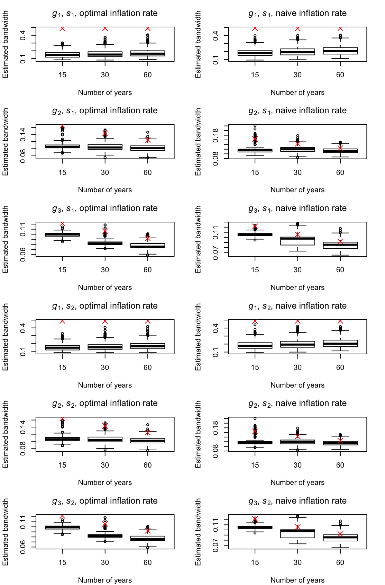
Figure 8: Boxplots of estimated bandwidths using \(r=1\) for simulated quarterly data with \(\{e_{1,t}\}\). Red crosses mark the true \(h_A\).
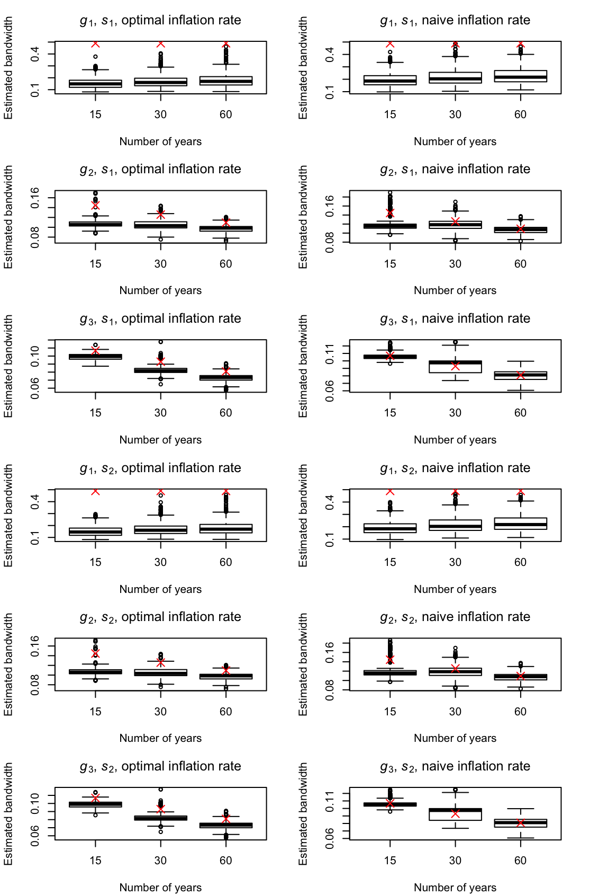
Figure 9: Boxplots of estimated bandwidths using \(r=1\) for simulated quarterly data with \(\{e_{2,t}\}\). Red crosses mark the true \(h_A\).
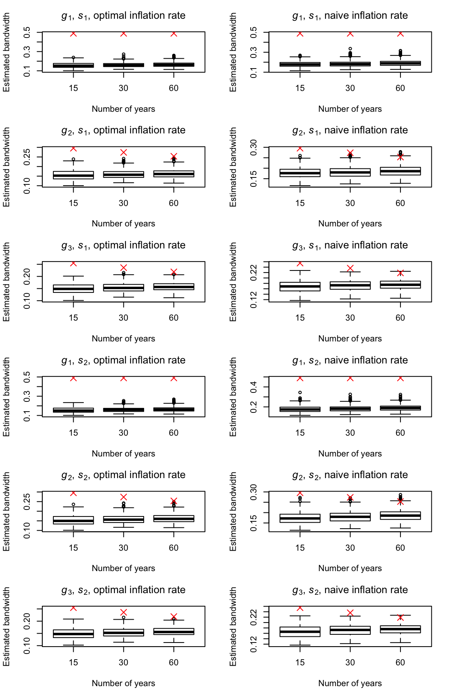
Figure 10: Boxplots of estimated bandwidths using \(r=3\) for simulated quarterly data with \(\{e_{1,t}\}\). Red crosses mark the true \(h_A\).
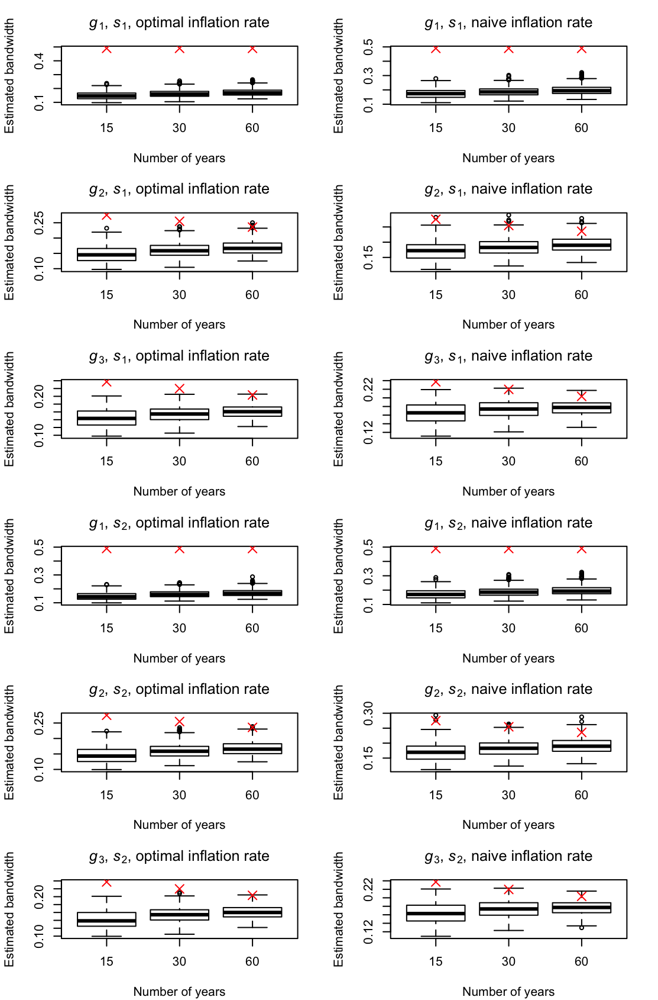
Figure 11: Boxplots of estimated bandwidths using \(r=3\) for simulated quarterly data with \(\{e_{2,t}\}\). Red crosses mark the true \(h_A\).
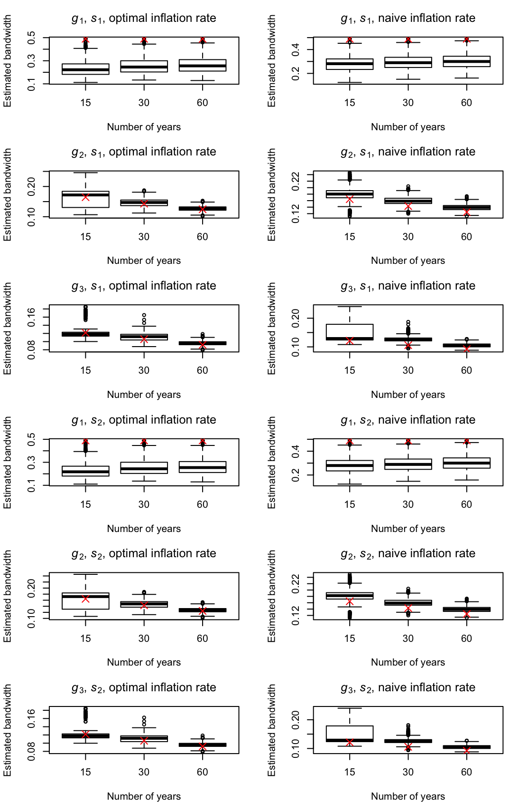
Figure 12: Boxplots of estimated bandwidths using \(r=1\) for simulated monthly data with \(\{e_{1,t}\}\). Red crosses mark the true \(h_A\).
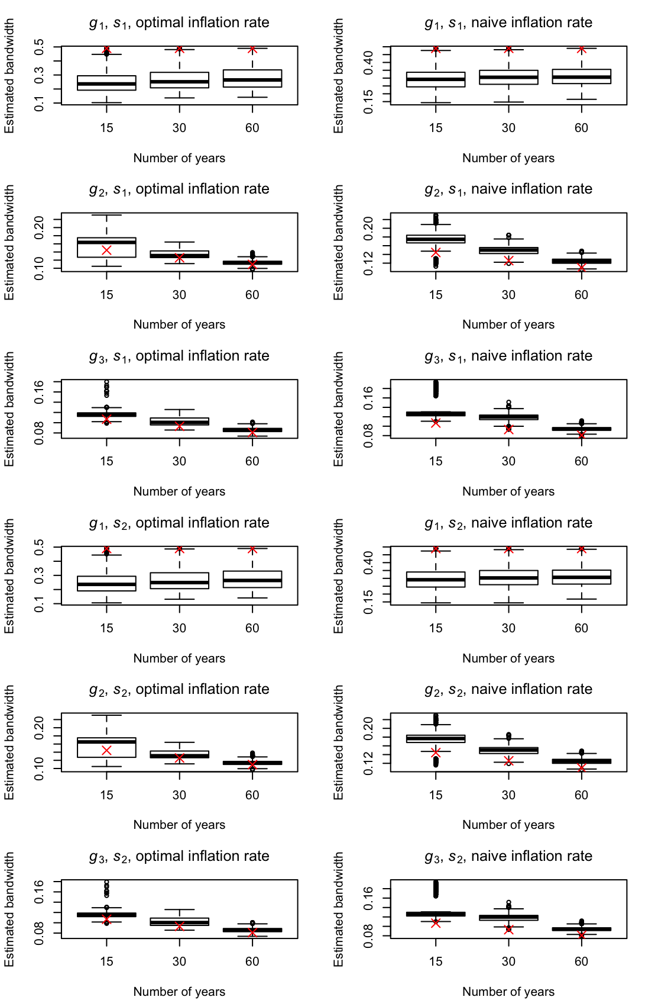
Figure 13: Boxplots of estimated bandwidths using \(r=1\) for simulated monthly data with \(\{e_{2,t}\}\). Red crosses mark the true \(h_A\).
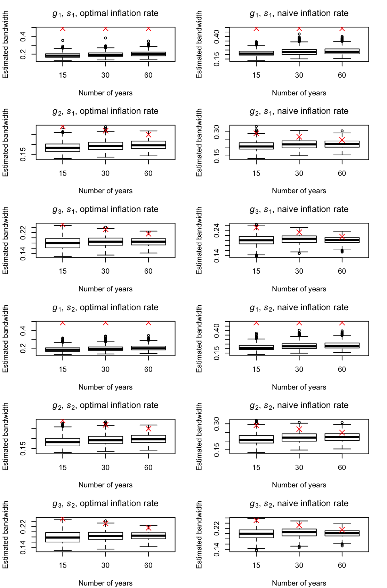
Figure 14: Boxplots of estimated bandwidths using \(r=3\) for simulated monthly data with \(\{e_{1,t}\}\). Red crosses mark the true \(h_A\).
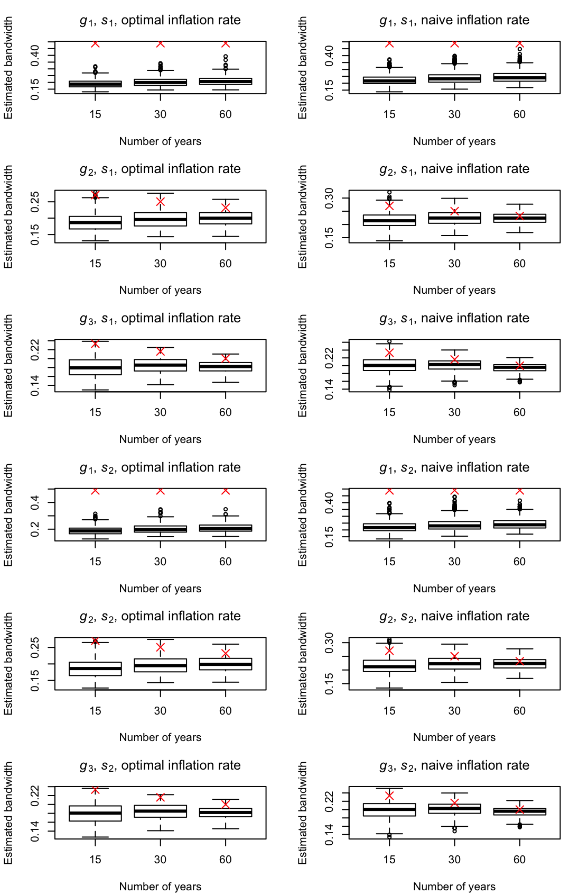
Figure 15: Boxplots of estimated bandwidths using \(r=3\) for simulated monthly data with \(\{e_{2,t}\}\). Red crosses mark the true \(h_A\).
On the following pages, the Tables 6 through 17 include the numerical results of the second simulation study described in Section 4. Brief interpretations of the results are given in Section 4. The tables contain the average mean squared errors (Mean) of the estimated seasonality over all series and time points in accordance with various methods. The sample standard deviations of the series-wise average mean squared errors are also given. For a better overview, the abbreviations DS (DeSeaTS), X13 (X13-ARIMA), TS (TRAMO-SEATS), STL (STL), TBATS (TBATS) and MA (decompose() function in R) are used. Furthermore, the index given for DS describes the considered order of polynomial \(r\) and the inflation rate (either opt or nai for optimal or naive).
| Method | Quantity | \(n_1\) | \(n_2\) | \(n_3\) | \(n_1\) | \(n_2\) | \(n_3\) | \(n_1\) | \(n_2\) | \(n_3\) | \(n_1\) | \(n_2\) | \(n_3\) | \(n_1\) | \(n_2\) | \(n_3\) | \(n_1\) | \(n_2\) | \(n_3\) |
|---|---|---|---|---|---|---|---|---|---|---|---|---|---|---|---|---|---|---|---|
| \(\text{DS}_{1, \text{opt}}\) | Mean | 2.92 | 1.95 | 1.21 | 19.54 | 5.81 | 1.75 | 3.08 | 2.01 | 1.23 | 20.11 | 6.20 | 2.08 | 3.11 | 2.26 | 1.75 | 20.04 | 6.13 | 2.85 |
| SD | 0.87 | 0.51 | 0.28 | 15.54 | 4.62 | 1.10 | 0.90 | 0.52 | 0.29 | 15.52 | 4.58 | 1.08 | 1.02 | 0.87 | 0.88 | 16.08 | 4.41 | 2.19 | |
| \(\text{DS}_{1, \text{nai}}\) | Mean | 2.89 | 1.85 | 1.14 | 17.22 | 5.10 | 1.51 | 3.04 | 1.91 | 1.17 | 18.08 | 5.73 | 2.06 | 3.08 | 2.18 | 1.72 | 17.53 | 5.55 | 2.82 |
| SD | 0.86 | 0.50 | 0.28 | 13.86 | 4.04 | 0.99 | 0.90 | 0.50 | 0.28 | 13.79 | 3.99 | 1.00 | 1.01 | 0.93 | 0.93 | 14.22 | 3.94 | 2.30 | |
| \(\text{DS}_{3, \text{opt}}\) | Mean | 2.11 | 1.00 | 0.51 | 17.28 | 4.98 | 1.49 | 2.90 | 1.65 | 1.06 | 18.17 | 5.53 | 1.96 | 2.49 | 1.74 | 1.93 | 18.05 | 5.54 | 2.82 |
| SD | 0.82 | 0.37 | 0.18 | 14.55 | 3.93 | 0.93 | 0.89 | 0.46 | 0.25 | 14.68 | 3.92 | 0.96 | 1.20 | 1.31 | 2.14 | 15.46 | 4.04 | 2.43 | |
| \(\text{DS}_{3, \text{nai}}\) | Mean | 1.88 | 0.93 | 0.48 | 15.45 | 4.57 | 1.33 | 2.86 | 1.75 | 1.15 | 16.61 | 5.34 | 2.03 | 2.31 | 1.74 | 2.00 | 16.09 | 5.18 | 2.84 |
| SD | 0.75 | 0.36 | 0.18 | 13.23 | 3.74 | 0.85 | 0.85 | 0.47 | 0.26 | 13.37 | 3.71 | 0.91 | 1.18 | 1.42 | 2.25 | 13.53 | 3.78 | 2.59 | |
| X13 | Mean | 1.34 | 1.20 | 1.10 | 9.97 | 5.29 | 3.03 | 3.94 | 1.78 | 1.29 | 12.97 | 6.13 | 3.21 | 2.18 | 1.93 | 1.82 | 11.38 | 6.00 | 3.69 |
| SD | 0.71 | 0.49 | 0.37 | 9.08 | 4.11 | 1.84 | 0.90 | 0.54 | 0.32 | 9.21 | 4.16 | 1.82 | 1.59 | 1.24 | 0.91 | 10.48 | 4.33 | 2.08 | |
| TS | Mean | 1.75 | 0.79 | 0.41 | 6.05 | 1.57 | 0.54 | 4.11 | 2.09 | 1.13 | 10.94 | 5.37 | 2.28 | 2.81 | 1.78 | 1.43 | 8.95 | 3.72 | 2.40 |
| SD | 1.66 | 0.65 | 0.34 | 13.71 | 2.58 | 0.74 | 1.34 | 0.68 | 0.32 | 14.50 | 3.12 | 1.25 | 5.16 | 0.96 | 0.73 | 13.57 | 3.20 | 1.71 | |
| STL | Mean | 0.96 | 1.00 | 0.98 | 7.42 | 4.50 | 2.65 | 4.76 | 2.17 | 1.08 | 11.20 | 5.66 | 2.73 | 2.10 | 1.80 | 1.68 | 8.77 | 5.18 | 3.29 |
| SD | 0.53 | 0.37 | 0.26 | 6.91 | 3.58 | 1.52 | 0.60 | 0.50 | 0.27 | 6.96 | 3.64 | 1.53 | 2.23 | 1.47 | 1.05 | 8.49 | 3.72 | 2.00 | |
| TBATS | Mean | 88.90 | 88.99 | 89.27 | 90.28 | 89.68 | 89.36 | 90.88 | 90.99 | 91.26 | 92.25 | 91.62 | 91.15 | 68.45 | 70.43 | 73.34 | 63.19 | 68.99 | 73.27 |
| SD | 1.71 | 0.32 | 0.26 | 4.46 | 3.18 | 2.71 | 1.40 | 0.27 | 0.15 | 4.30 | 2.42 | 2.25 | 49.30 | 48.41 | 47.70 | 44.70 | 47.97 | 48.01 | |
| MA | Mean | 0.56 | 0.27 | 0.12 | 4.11 | 1.16 | 0.34 | 5.02 | 4.73 | 4.58 | 8.55 | 5.62 | 4.79 | 3.79 | 6.27 | 11.21 | 7.68 | 6.97 | 11.50 |
| SD | 0.46 | 0.21 | 0.10 | 5.10 | 1.41 | 0.34 | 0.48 | 0.22 | 0.10 | 5.09 | 1.41 | 0.33 | 5.75 | 8.48 | 16.37 | 9.05 | 9.14 | 16.18 |
| Method | Quantity | \(n_1\) | \(n_2\) | \(n_3\) | \(n_1\) | \(n_2\) | \(n_3\) | \(n_1\) | \(n_2\) | \(n_3\) | \(n_1\) | \(n_2\) | \(n_3\) | \(n_1\) | \(n_2\) | \(n_3\) | \(n_1\) | \(n_2\) | \(n_3\) |
|---|---|---|---|---|---|---|---|---|---|---|---|---|---|---|---|---|---|---|---|
| \(\text{DS}_{1, \text{opt}}\) | Mean | 0.77 | 0.43 | 0.23 | 17.81 | 4.52 | 1.24 | 0.92 | 0.51 | 0.28 | 18.38 | 4.92 | 1.60 | 1.00 | 0.81 | 0.87 | 18.16 | 5.08 | 2.26 |
| SD | 0.24 | 0.12 | 0.06 | 16.90 | 3.85 | 1.12 | 0.27 | 0.13 | 0.07 | 16.86 | 3.81 | 1.17 | 0.56 | 0.58 | 1.02 | 16.22 | 4.14 | 1.86 | |
| \(\text{DS}_{1, \text{nai}}\) | Mean | 0.80 | 0.39 | 0.21 | 15.16 | 3.96 | 1.08 | 0.95 | 0.50 | 0.28 | 16.03 | 4.61 | 1.66 | 1.05 | 0.82 | 0.92 | 15.50 | 4.62 | 2.32 |
| SD | 0.25 | 0.12 | 0.06 | 13.88 | 3.43 | 0.98 | 0.28 | 0.13 | 0.07 | 13.96 | 3.40 | 1.09 | 0.62 | 0.66 | 1.12 | 13.57 | 3.72 | 2.19 | |
| \(\text{DS}_{3, \text{opt}}\) | Mean | 0.53 | 0.25 | 0.12 | 15.50 | 3.93 | 1.07 | 1.18 | 0.81 | 0.65 | 16.24 | 4.49 | 1.57 | 0.92 | 0.97 | 1.41 | 16.22 | 4.57 | 2.25 |
| SD | 0.21 | 0.10 | 0.05 | 13.76 | 3.37 | 1.02 | 0.34 | 0.23 | 0.19 | 13.69 | 3.36 | 1.05 | 0.86 | 1.11 | 1.86 | 14.91 | 3.67 | 1.98 | |
| \(\text{DS}_{3, \text{nai}}\) | Mean | 0.48 | 0.23 | 0.11 | 13.82 | 3.56 | 0.97 | 1.33 | 0.99 | 0.84 | 14.81 | 4.35 | 1.69 | 0.91 | 1.03 | 1.54 | 14.41 | 4.28 | 2.32 |
| SD | 0.19 | 0.09 | 0.04 | 12.43 | 3.11 | 0.95 | 0.36 | 0.27 | 0.22 | 12.38 | 3.08 | 0.99 | 0.93 | 1.26 | 2.05 | 13.14 | 3.48 | 2.21 | |
| X13 | Mean | 0.30 | 0.27 | 0.26 | 8.90 | 4.11 | 2.14 | 2.66 | 0.62 | 0.36 | 11.92 | 4.86 | 2.30 | 1.02 | 0.85 | 0.77 | 9.77 | 4.84 | 2.66 |
| SD | 0.16 | 0.11 | 0.07 | 9.49 | 3.58 | 1.91 | 0.47 | 0.16 | 0.08 | 9.48 | 3.67 | 1.95 | 1.58 | 0.78 | 0.65 | 9.30 | 3.86 | 1.83 | |
| TS | Mean | 0.24 | 0.17 | 0.07 | 5.53 | 1.20 | 0.42 | 1.09 | 0.68 | 0.41 | 10.24 | 4.56 | 1.75 | 0.86 | 0.67 | 0.63 | 8.47 | 3.21 | 1.86 |
| SD | 0.26 | 0.14 | 0.08 | 10.61 | 1.83 | 0.93 | 0.36 | 0.19 | 0.14 | 10.85 | 3.05 | 1.49 | 0.43 | 0.32 | 0.32 | 15.32 | 3.34 | 1.35 | |
| STL | Mean | 0.24 | 0.23 | 0.23 | 6.66 | 3.55 | 1.88 | 4.03 | 1.42 | 0.32 | 10.47 | 4.71 | 1.98 | 1.41 | 1.05 | 0.87 | 7.82 | 4.29 | 2.46 |
| SD | 0.14 | 0.09 | 0.06 | 6.95 | 3.07 | 1.65 | 0.19 | 0.18 | 0.08 | 7.02 | 3.12 | 1.66 | 3.01 | 1.25 | 0.99 | 7.47 | 3.48 | 1.72 | |
| TBATS | Mean | 88.73 | 88.88 | 89.26 | 90.09 | 89.39 | 89.42 | 90.78 | 90.69 | 90.86 | 92.18 | 91.39 | 91.24 | 71.01 | 71.05 | 71.41 | 64.20 | 67.54 | 71.66 |
| SD | 1.64 | 0.91 | 2.29 | 4.19 | 2.38 | 2.23 | 0.67 | 0.92 | 0.73 | 4.33 | 1.86 | 2.50 | 49.12 | 48.60 | 49.66 | 45.31 | 48.12 | 48.20 | |
| MA | Mean | 0.13 | 0.06 | 0.03 | 3.81 | 0.93 | 0.25 | 4.59 | 4.52 | 4.48 | 8.27 | 5.39 | 4.70 | 3.51 | 5.82 | 10.44 | 7.21 | 6.99 | 10.36 |
| SD | 0.11 | 0.05 | 0.03 | 4.96 | 1.22 | 0.34 | 0.13 | 0.05 | 0.03 | 5.01 | 1.23 | 0.34 | 7.08 | 7.88 | 15.00 | 8.77 | 9.31 | 13.58 |
| Method | Quantity | \(n_1\) | \(n_2\) | \(n_3\) | \(n_1\) | \(n_2\) | \(n_3\) | \(n_1\) | \(n_2\) | \(n_3\) | \(n_1\) | \(n_2\) | \(n_3\) | \(n_1\) | \(n_2\) | \(n_3\) | \(n_1\) | \(n_2\) | \(n_3\) |
|---|---|---|---|---|---|---|---|---|---|---|---|---|---|---|---|---|---|---|---|
| \(\text{DS}_{1, \text{opt}}\) | Mean | 0.57 | 0.29 | 0.15 | 17.43 | 4.54 | 1.22 | 0.71 | 0.37 | 0.20 | 18.00 | 4.98 | 1.55 | 0.80 | 0.69 | 0.84 | 18.96 | 5.20 | 2.20 |
| SD | 0.19 | 0.09 | 0.04 | 15.61 | 4.15 | 1.09 | 0.21 | 0.10 | 0.05 | 15.55 | 4.17 | 1.09 | 0.57 | 0.70 | 1.10 | 16.12 | 4.46 | 1.81 | |
| \(\text{DS}_{1, \text{nai}}\) | Mean | 0.63 | 0.26 | 0.14 | 14.60 | 3.90 | 1.05 | 0.78 | 0.39 | 0.21 | 15.52 | 4.60 | 1.62 | 0.86 | 0.72 | 0.90 | 16.05 | 4.75 | 2.24 |
| SD | 0.21 | 0.08 | 0.04 | 13.06 | 3.62 | 0.95 | 0.25 | 0.10 | 0.05 | 13.03 | 3.63 | 1.00 | 0.63 | 0.76 | 1.19 | 13.85 | 4.17 | 1.93 | |
| \(\text{DS}_{3, \text{opt}}\) | Mean | 0.39 | 0.17 | 0.08 | 15.19 | 3.98 | 1.02 | 0.99 | 0.75 | 0.66 | 15.93 | 4.55 | 1.51 | 0.76 | 0.91 | 1.47 | 16.63 | 4.70 | 2.22 |
| SD | 0.16 | 0.07 | 0.03 | 13.49 | 3.66 | 0.95 | 0.31 | 0.23 | 0.19 | 13.28 | 3.69 | 0.95 | 0.95 | 1.20 | 2.09 | 13.91 | 3.99 | 1.91 | |
| \(\text{DS}_{3, \text{nai}}\) | Mean | 0.34 | 0.15 | 0.07 | 13.64 | 3.61 | 0.92 | 1.19 | 0.95 | 0.85 | 14.65 | 4.41 | 1.63 | 0.76 | 0.98 | 1.62 | 15.03 | 4.40 | 2.32 |
| SD | 0.14 | 0.06 | 0.03 | 12.23 | 3.37 | 0.87 | 0.33 | 0.26 | 0.22 | 12.14 | 3.41 | 0.89 | 1.00 | 1.34 | 2.35 | 12.92 | 3.76 | 2.19 | |
| X13 | Mean | 0.19 | 0.18 | 0.16 | 8.91 | 4.18 | 2.05 | 2.40 | 0.48 | 0.23 | 11.93 | 4.93 | 2.19 | 0.85 | 0.73 | 0.67 | 10.46 | 4.96 | 2.49 |
| SD | 0.11 | 0.07 | 0.05 | 9.04 | 3.99 | 1.85 | 0.46 | 0.12 | 0.05 | 9.03 | 4.10 | 1.86 | 1.40 | 0.83 | 0.71 | 9.71 | 4.24 | 1.78 | |
| TS | Mean | 0.14 | 0.09 | 0.03 | 5.75 | 1.26 | 0.36 | 0.79 | 0.53 | 0.28 | 10.25 | 4.52 | 1.67 | 0.68 | 0.56 | 0.52 | 8.80 | 3.23 | 1.84 |
| SD | 0.17 | 0.08 | 0.05 | 12.53 | 2.05 | 0.81 | 0.29 | 0.18 | 0.09 | 12.63 | 3.02 | 1.47 | 0.57 | 0.34 | 0.32 | 15.44 | 3.15 | 1.64 | |
| STL | Mean | 0.16 | 0.15 | 0.15 | 6.83 | 3.58 | 1.80 | 3.95 | 1.33 | 0.24 | 10.64 | 4.76 | 1.89 | 1.26 | 0.99 | 0.84 | 8.13 | 4.36 | 2.33 |
| SD | 0.10 | 0.06 | 0.04 | 7.01 | 3.43 | 1.57 | 0.14 | 0.14 | 0.05 | 7.03 | 3.50 | 1.57 | 2.09 | 1.31 | 1.07 | 7.44 | 3.77 | 1.69 | |
| TBATS | Mean | 88.74 | 88.91 | 89.28 | 90.26 | 89.62 | 89.15 | 90.68 | 90.68 | 90.83 | 92.19 | 91.44 | 91.23 | 68.61 | 69.49 | 70.18 | 64.00 | 69.34 | 72.56 |
| SD | 1.32 | 1.03 | 1.24 | 4.99 | 2.88 | 2.29 | 0.80 | 0.65 | 0.84 | 4.16 | 1.83 | 1.42 | 48.27 | 47.79 | 48.88 | 44.76 | 47.31 | 47.79 | |
| MA | Mean | 0.08 | 0.04 | 0.02 | 3.72 | 0.98 | 0.25 | 4.54 | 4.50 | 4.47 | 8.17 | 5.44 | 4.70 | 3.34 | 6.04 | 10.52 | 7.24 | 7.14 | 11.49 |
| SD | 0.07 | 0.03 | 0.02 | 4.54 | 1.52 | 0.33 | 0.09 | 0.04 | 0.02 | 4.54 | 1.53 | 0.33 | 5.73 | 9.25 | 15.20 | 8.58 | 11.49 | 15.41 |
| Method | Quantity | \(n_1\) | \(n_2\) | \(n_3\) | \(n_1\) | \(n_2\) | \(n_3\) | \(n_1\) | \(n_2\) | \(n_3\) | \(n_1\) | \(n_2\) | \(n_3\) | \(n_1\) | \(n_2\) | \(n_3\) | \(n_1\) | \(n_2\) | \(n_3\) |
|---|---|---|---|---|---|---|---|---|---|---|---|---|---|---|---|---|---|---|---|
| \(\text{DS}_{1, \text{opt}}\) | Mean | 11.38 | 6.51 | 3.70 | 26.21 | 9.44 | 3.69 | 11.60 | 6.64 | 3.76 | 26.86 | 9.84 | 4.03 | 11.44 | 6.82 | 4.42 | 26.75 | 9.68 | 4.84 |
| SD | 3.41 | 1.91 | 1.01 | 16.70 | 5.46 | 1.62 | 3.46 | 1.93 | 1.01 | 16.75 | 5.38 | 1.55 | 3.50 | 2.09 | 1.50 | 17.57 | 5.20 | 2.49 | |
| \(\text{DS}_{1, \text{nai}}\) | Mean | 10.78 | 6.00 | 3.48 | 22.96 | 8.26 | 3.19 | 11.06 | 6.16 | 3.55 | 23.85 | 8.90 | 3.73 | 10.90 | 6.36 | 4.25 | 23.27 | 8.66 | 4.56 |
| SD | 3.48 | 1.82 | 0.97 | 14.91 | 4.79 | 1.49 | 3.48 | 1.83 | 0.98 | 14.91 | 4.68 | 1.42 | 3.53 | 2.04 | 1.53 | 15.24 | 4.67 | 2.55 | |
| \(\text{DS}_{3, \text{opt}}\) | Mean | 8.30 | 3.82 | 1.93 | 23.21 | 8.05 | 3.12 | 9.27 | 4.63 | 2.63 | 24.15 | 8.64 | 3.61 | 8.56 | 4.55 | 3.46 | 24.15 | 8.61 | 4.50 |
| SD | 3.30 | 1.47 | 0.73 | 15.71 | 4.48 | 1.35 | 3.36 | 1.54 | 0.77 | 15.78 | 4.49 | 1.36 | 3.52 | 2.03 | 2.45 | 16.85 | 4.73 | 2.62 | |
| \(\text{DS}_{3, \text{nai}}\) | Mean | 7.25 | 3.47 | 1.77 | 20.90 | 7.38 | 2.80 | 8.50 | 4.54 | 2.69 | 22.00 | 8.18 | 3.50 | 7.63 | 4.31 | 3.46 | 21.48 | 7.97 | 4.37 |
| SD | 2.97 | 1.41 | 0.69 | 14.30 | 4.34 | 1.24 | 3.08 | 1.50 | 0.76 | 14.32 | 4.30 | 1.28 | 3.17 | 2.07 | 2.63 | 14.75 | 4.44 | 2.77 | |
| X13 | Mean | 5.36 | 4.67 | 4.28 | 13.91 | 8.85 | 6.42 | 8.22 | 5.65 | 4.76 | 17.01 | 9.81 | 6.75 | 6.26 | 5.51 | 5.24 | 15.29 | 9.57 | 7.19 |
| SD | 2.87 | 1.99 | 1.51 | 9.82 | 4.85 | 2.55 | 2.90 | 1.93 | 1.37 | 9.94 | 4.85 | 2.43 | 3.20 | 2.30 | 1.79 | 11.60 | 5.20 | 2.66 | |
| TS | Mean | 4.58 | 2.09 | 1.32 | 8.05 | 2.55 | 1.07 | 9.13 | 5.20 | 3.11 | 13.15 | 6.87 | 4.21 | 6.30 | 4.01 | 3.31 | 11.64 | 5.36 | 3.73 |
| SD | 4.95 | 1.88 | 1.20 | 13.23 | 2.85 | 1.04 | 4.99 | 1.96 | 1.23 | 15.16 | 3.79 | 1.48 | 5.36 | 2.49 | 1.84 | 14.96 | 4.88 | 2.35 | |
| STL | Mean | 3.83 | 3.97 | 3.94 | 10.17 | 7.40 | 5.62 | 7.62 | 5.14 | 4.03 | 13.96 | 8.56 | 5.70 | 4.96 | 4.69 | 4.61 | 11.53 | 8.06 | 6.25 |
| SD | 2.12 | 1.49 | 1.03 | 7.65 | 4.11 | 1.94 | 2.20 | 1.63 | 1.04 | 7.69 | 4.20 | 1.95 | 3.09 | 2.08 | 1.47 | 9.45 | 4.33 | 2.38 | |
| TBATS | Mean | 89.38 | 89.46 | 89.51 | 90.84 | 89.92 | 89.12 | 91.79 | 91.46 | 91.47 | 92.85 | 91.80 | 91.32 | 67.26 | 68.99 | 73.11 | 63.24 | 68.61 | 72.24 |
| SD | 3.80 | 1.03 | 0.58 | 5.48 | 3.84 | 4.57 | 6.75 | 0.77 | 0.42 | 5.07 | 3.55 | 4.40 | 48.17 | 47.39 | 47.67 | 44.35 | 48.58 | 47.62 | |
| MA | Mean | 2.24 | 1.06 | 0.50 | 5.65 | 1.90 | 0.72 | 6.71 | 5.52 | 4.95 | 10.09 | 6.36 | 5.17 | 5.38 | 7.03 | 11.59 | 9.26 | 7.73 | 11.88 |
| SD | 1.85 | 0.85 | 0.41 | 5.75 | 1.83 | 0.61 | 1.88 | 0.85 | 0.41 | 5.74 | 1.83 | 0.61 | 5.98 | 8.52 | 16.38 | 9.64 | 9.23 | 16.17 |
| Method | Quantity | \(n_1\) | \(n_2\) | \(n_3\) | \(n_1\) | \(n_2\) | \(n_3\) | \(n_1\) | \(n_2\) | \(n_3\) | \(n_1\) | \(n_2\) | \(n_3\) | \(n_1\) | \(n_2\) | \(n_3\) | \(n_1\) | \(n_2\) | \(n_3\) |
|---|---|---|---|---|---|---|---|---|---|---|---|---|---|---|---|---|---|---|---|
| \(\text{DS}_{1, \text{opt}}\) | Mean | 2.93 | 1.44 | 0.73 | 19.47 | 5.35 | 1.68 | 3.11 | 1.61 | 0.86 | 19.99 | 5.77 | 2.06 | 3.15 | 1.91 | 1.58 | 19.95 | 5.92 | 2.71 |
| SD | 0.92 | 0.46 | 0.23 | 17.12 | 3.98 | 1.22 | 0.95 | 0.47 | 0.24 | 17.03 | 3.92 | 1.24 | 1.09 | 0.87 | 1.38 | 16.48 | 4.32 | 1.96 | |
| \(\text{DS}_{1, \text{nai}}\) | Mean | 2.79 | 1.28 | 0.66 | 16.48 | 4.68 | 1.45 | 3.10 | 1.55 | 0.85 | 17.30 | 5.35 | 2.08 | 3.05 | 1.83 | 1.61 | 17.05 | 5.34 | 2.71 |
| SD | 0.96 | 0.45 | 0.22 | 14.05 | 3.55 | 1.07 | 0.95 | 0.45 | 0.24 | 13.91 | 3.47 | 1.14 | 1.15 | 0.97 | 1.56 | 13.90 | 3.88 | 2.28 | |
| \(\text{DS}_{3, \text{opt}}\) | Mean | 2.07 | 0.99 | 0.48 | 16.97 | 4.67 | 1.46 | 2.85 | 1.62 | 1.08 | 17.71 | 5.25 | 1.97 | 2.45 | 1.72 | 1.82 | 17.78 | 5.32 | 2.64 |
| SD | 0.84 | 0.38 | 0.19 | 13.83 | 3.46 | 1.09 | 0.90 | 0.45 | 0.31 | 13.78 | 3.43 | 1.12 | 1.19 | 1.19 | 1.96 | 15.05 | 3.80 | 2.03 | |
| \(\text{DS}_{3, \text{nai}}\) | Mean | 1.85 | 0.90 | 0.43 | 15.16 | 4.23 | 1.31 | 2.86 | 1.76 | 1.29 | 16.19 | 5.04 | 2.06 | 2.28 | 1.72 | 1.96 | 15.90 | 4.95 | 2.67 |
| SD | 0.75 | 0.36 | 0.18 | 12.55 | 3.20 | 1.01 | 0.86 | 0.48 | 0.36 | 12.51 | 3.16 | 1.05 | 1.22 | 1.37 | 2.21 | 13.44 | 3.61 | 2.25 | |
| X13 | Mean | 1.22 | 1.08 | 1.04 | 9.79 | 4.92 | 2.93 | 3.85 | 1.68 | 1.15 | 12.83 | 5.70 | 3.11 | 2.02 | 1.78 | 1.64 | 10.69 | 5.68 | 3.45 |
| SD | 0.65 | 0.42 | 0.29 | 9.58 | 3.71 | 2.02 | 0.83 | 0.49 | 0.30 | 9.59 | 3.72 | 2.05 | 1.73 | 0.97 | 0.82 | 9.53 | 4.01 | 1.88 | |
| TS | Mean | 0.81 | 0.34 | 0.18 | 6.20 | 1.46 | 0.55 | 3.64 | 1.83 | 1.06 | 10.81 | 5.18 | 2.28 | 1.87 | 1.50 | 1.36 | 8.63 | 3.66 | 2.29 |
| SD | 0.77 | 0.31 | 0.19 | 12.32 | 2.14 | 1.07 | 1.22 | 0.62 | 0.36 | 13.62 | 2.70 | 1.36 | 1.18 | 0.83 | 0.73 | 12.78 | 3.07 | 1.50 | |
| STL | Mean | 0.93 | 0.92 | 0.92 | 7.30 | 4.24 | 2.58 | 4.72 | 2.11 | 1.01 | 11.11 | 5.40 | 2.68 | 2.07 | 1.74 | 1.57 | 8.54 | 4.97 | 3.13 |
| SD | 0.54 | 0.35 | 0.24 | 7.05 | 3.15 | 1.73 | 0.59 | 0.47 | 0.26 | 7.13 | 3.20 | 1.74 | 3.07 | 1.29 | 1.03 | 7.66 | 3.60 | 1.77 | |
| TBATS | Mean | 89.11 | 88.91 | 88.99 | 90.17 | 89.49 | 89.28 | 91.00 | 90.93 | 91.02 | 92.28 | 91.44 | 91.34 | 70.72 | 71.19 | 73.58 | 64.84 | 67.13 | 71.55 |
| SD | 2.17 | 1.28 | 4.28 | 4.69 | 2.61 | 2.40 | 1.10 | 0.67 | 3.44 | 4.21 | 2.09 | 2.08 | 48.92 | 48.02 | 47.49 | 45.47 | 47.79 | 48.91 | |
| MA | Mean | 0.52 | 0.24 | 0.12 | 4.18 | 1.10 | 0.34 | 4.98 | 4.70 | 4.58 | 8.64 | 5.56 | 4.79 | 3.88 | 6.01 | 10.53 | 7.58 | 7.16 | 10.45 |
| SD | 0.45 | 0.19 | 0.10 | 5.12 | 1.30 | 0.40 | 0.47 | 0.20 | 0.10 | 5.17 | 1.32 | 0.41 | 7.08 | 7.88 | 15.00 | 8.82 | 9.31 | 13.58 |
| Method | Quantity | \(n_1\) | \(n_2\) | \(n_3\) | \(n_1\) | \(n_2\) | \(n_3\) | \(n_1\) | \(n_2\) | \(n_3\) | \(n_1\) | \(n_2\) | \(n_3\) | \(n_1\) | \(n_2\) | \(n_3\) | \(n_1\) | \(n_2\) | \(n_3\) |
|---|---|---|---|---|---|---|---|---|---|---|---|---|---|---|---|---|---|---|---|
| \(\text{DS}_{1, \text{opt}}\) | Mean | 2.13 | 0.94 | 0.48 | 18.48 | 5.05 | 1.50 | 2.31 | 1.13 | 0.60 | 18.94 | 5.51 | 1.86 | 2.35 | 1.44 | 1.39 | 19.94 | 5.73 | 2.52 |
| SD | 0.73 | 0.33 | 0.15 | 15.71 | 4.21 | 1.15 | 0.72 | 0.34 | 0.17 | 15.34 | 4.19 | 1.12 | 0.90 | 0.92 | 1.44 | 16.29 | 4.52 | 1.86 | |
| \(\text{DS}_{1, \text{nai}}\) | Mean | 1.97 | 0.84 | 0.43 | 15.50 | 4.36 | 1.29 | 2.34 | 1.14 | 0.61 | 16.41 | 5.10 | 1.89 | 2.23 | 1.42 | 1.45 | 16.84 | 5.22 | 2.52 |
| SD | 0.76 | 0.31 | 0.15 | 13.53 | 3.72 | 1.00 | 0.71 | 0.34 | 0.17 | 13.38 | 3.69 | 1.02 | 1.21 | 1.03 | 1.57 | 14.05 | 4.25 | 1.99 | |
| \(\text{DS}_{3, \text{opt}}\) | Mean | 1.55 | 0.66 | 0.31 | 16.40 | 4.45 | 1.27 | 2.21 | 1.30 | 0.97 | 17.07 | 5.04 | 1.78 | 1.87 | 1.41 | 1.76 | 17.68 | 5.19 | 2.49 |
| SD | 0.65 | 0.27 | 0.12 | 13.80 | 3.69 | 0.98 | 0.66 | 0.37 | 0.28 | 13.49 | 3.72 | 0.98 | 1.13 | 1.27 | 2.21 | 14.02 | 4.04 | 1.96 | |
| \(\text{DS}_{3, \text{nai}}\) | Mean | 1.33 | 0.59 | 0.28 | 14.64 | 4.04 | 1.14 | 2.27 | 1.51 | 1.20 | 15.68 | 4.86 | 1.89 | 1.73 | 1.45 | 1.92 | 15.92 | 4.85 | 2.56 |
| SD | 0.58 | 0.25 | 0.12 | 12.59 | 3.43 | 0.91 | 0.65 | 0.41 | 0.33 | 12.60 | 3.45 | 0.91 | 1.11 | 1.45 | 2.54 | 12.96 | 3.80 | 2.24 | |
| X13 | Mean | 0.78 | 0.70 | 0.65 | 9.47 | 4.67 | 2.54 | 3.30 | 1.16 | 0.81 | 12.46 | 5.47 | 2.68 | 1.51 | 1.34 | 1.24 | 11.03 | 5.53 | 3.01 |
| SD | 0.43 | 0.28 | 0.18 | 9.14 | 4.04 | 1.89 | 0.63 | 0.33 | 0.21 | 9.11 | 4.17 | 1.89 | 1.37 | 0.92 | 0.77 | 9.89 | 4.41 | 1.83 | |
| TS | Mean | 0.49 | 0.21 | 0.11 | 6.28 | 1.45 | 0.46 | 2.78 | 1.52 | 0.86 | 10.41 | 4.96 | 2.07 | 1.47 | 1.23 | 1.10 | 9.55 | 3.55 | 2.15 |
| SD | 0.54 | 0.25 | 0.11 | 12.76 | 2.69 | 0.98 | 1.12 | 0.75 | 0.40 | 11.89 | 2.89 | 1.60 | 0.90 | 0.80 | 0.65 | 17.57 | 3.46 | 1.75 | |
| STL | Mean | 0.61 | 0.61 | 0.60 | 7.22 | 4.01 | 2.26 | 4.40 | 1.79 | 0.68 | 11.04 | 5.19 | 2.34 | 1.68 | 1.43 | 1.29 | 8.55 | 4.82 | 2.78 |
| SD | 0.37 | 0.25 | 0.17 | 7.14 | 3.46 | 1.61 | 0.42 | 0.35 | 0.18 | 7.17 | 3.54 | 1.61 | 2.10 | 1.34 | 1.08 | 7.58 | 3.83 | 1.74 | |
| TBATS | Mean | 89.00 | 88.86 | 89.16 | 90.31 | 89.65 | 89.30 | 90.88 | 90.99 | 91.18 | 92.24 | 91.61 | 91.23 | 68.34 | 69.72 | 73.21 | 63.57 | 69.38 | 73.21 |
| SD | 1.17 | 0.94 | 1.38 | 4.61 | 2.40 | 1.99 | 1.14 | 2.02 | 1.29 | 4.44 | 1.65 | 1.68 | 48.02 | 47.41 | 48.04 | 44.29 | 47.20 | 48.64 | |
| MA | Mean | 0.33 | 0.15 | 0.08 | 3.94 | 1.09 | 0.31 | 4.78 | 4.61 | 4.53 | 8.39 | 5.55 | 4.76 | 3.57 | 6.16 | 10.58 | 7.46 | 7.26 | 11.55 |
| SD | 0.30 | 0.13 | 0.07 | 4.68 | 1.54 | 0.37 | 0.31 | 0.13 | 0.07 | 4.69 | 1.55 | 0.37 | 5.72 | 9.25 | 15.20 | 8.65 | 11.50 | 15.41 |
| Method | Quantity | \(n_1\) | \(n_2\) | \(n_3\) | \(n_1\) | \(n_2\) | \(n_3\) | \(n_1\) | \(n_2\) | \(n_3\) | \(n_1\) | \(n_2\) | \(n_3\) | \(n_1\) | \(n_2\) | \(n_3\) | \(n_1\) | \(n_2\) | \(n_3\) |
|---|---|---|---|---|---|---|---|---|---|---|---|---|---|---|---|---|---|---|---|
| \(\text{DS}_{1, \text{opt}}\) | Mean | 3.60 | 2.62 | 1.52 | 15.90 | 4.23 | 1.21 | 3.72 | 2.67 | 1.54 | 17.04 | 5.16 | 1.97 | 3.67 | 2.78 | 1.78 | 15.31 | 4.73 | 2.02 |
| SD | 0.57 | 0.45 | 0.18 | 13.82 | 3.08 | 0.70 | 0.57 | 0.46 | 0.18 | 13.66 | 3.05 | 0.81 | 0.56 | 0.45 | 0.23 | 11.52 | 3.24 | 0.83 | |
| \(\text{DS}_{1, \text{nai}}\) | Mean | 3.53 | 2.34 | 1.47 | 13.77 | 3.76 | 1.09 | 3.67 | 2.39 | 1.49 | 15.31 | 5.04 | 2.11 | 3.61 | 2.52 | 1.74 | 13.77 | 4.34 | 2.01 |
| SD | 0.55 | 0.36 | 0.18 | 11.55 | 2.80 | 0.63 | 0.56 | 0.36 | 0.18 | 11.50 | 2.80 | 0.82 | 0.55 | 0.37 | 0.24 | 10.47 | 2.89 | 0.83 | |
| \(\text{DS}_{3, \text{opt}}\) | Mean | 2.30 | 1.16 | 0.61 | 16.65 | 4.31 | 1.19 | 3.11 | 1.88 | 1.22 | 17.50 | 5.09 | 1.88 | 2.49 | 1.57 | 1.35 | 16.38 | 4.80 | 2.00 |
| SD | 0.46 | 0.24 | 0.12 | 14.24 | 3.15 | 0.68 | 0.50 | 0.29 | 0.16 | 14.12 | 3.14 | 0.73 | 0.47 | 0.34 | 0.43 | 12.30 | 3.39 | 0.83 | |
| \(\text{DS}_{3, \text{nai}}\) | Mean | 2.17 | 1.10 | 0.58 | 15.11 | 3.93 | 1.08 | 3.15 | 1.96 | 1.29 | 16.25 | 4.96 | 2.03 | 2.38 | 1.54 | 1.36 | 14.70 | 4.46 | 1.98 |
| SD | 0.45 | 0.23 | 0.11 | 12.93 | 2.88 | 0.62 | 0.48 | 0.28 | 0.16 | 12.78 | 2.88 | 0.71 | 0.46 | 0.34 | 0.44 | 11.06 | 3.11 | 0.81 | |
| X13 | Mean | 1.72 | 1.56 | 1.38 | 11.04 | 5.43 | 2.92 | 4.63 | 2.28 | 1.75 | 14.09 | 6.23 | 3.16 | 2.26 | 2.10 | 1.97 | 11.34 | 6.01 | 3.44 |
| SD | 0.54 | 0.41 | 0.35 | 9.32 | 3.83 | 1.58 | 0.59 | 0.37 | 0.22 | 9.35 | 3.77 | 1.53 | 0.57 | 0.41 | 0.34 | 8.47 | 4.05 | 1.58 | |
| TS | Mean | 1.08 | 0.48 | 0.30 | 4.71 | 1.23 | 0.46 | 4.25 | 2.05 | 1.31 | 9.14 | 5.11 | 2.04 | 1.84 | 1.45 | 1.27 | 6.00 | 2.92 | 1.80 |
| SD | 0.96 | 0.55 | 0.29 | 5.24 | 1.13 | 0.70 | 0.97 | 0.48 | 0.39 | 5.25 | 1.59 | 1.01 | 0.78 | 0.49 | 0.36 | 4.88 | 1.69 | 0.72 | |
| STL | Mean | 1.18 | 1.21 | 1.21 | 8.17 | 4.37 | 2.40 | 4.95 | 2.32 | 1.29 | 11.96 | 5.50 | 2.48 | 1.73 | 1.63 | 1.57 | 8.35 | 4.86 | 2.82 |
| SD | 0.34 | 0.23 | 0.16 | 7.43 | 3.04 | 1.29 | 0.37 | 0.31 | 0.17 | 7.40 | 3.10 | 1.30 | 0.48 | 0.35 | 0.26 | 6.48 | 3.32 | 1.35 | |
| TBATS | Mean | 1.37 | 1.01 | 0.83 | 5.44 | 1.88 | 0.99 | 5.83 | 5.45 | 5.26 | 9.96 | 6.34 | 5.43 | 26.53 | 28.89 | 30.61 | 30.85 | 30.69 | 32.50 |
| SD | 0.32 | 0.16 | 0.07 | 5.30 | 1.11 | 0.26 | 0.33 | 0.16 | 0.07 | 5.30 | 1.09 | 0.26 | 26.60 | 27.17 | 27.06 | 28.52 | 29.32 | 32.04 | |
| MA | Mean | 0.67 | 0.32 | 0.16 | 4.56 | 1.14 | 0.31 | 5.24 | 4.82 | 4.62 | 9.15 | 5.63 | 4.78 | 2.31 | 3.61 | 6.19 | 6.08 | 4.45 | 6.43 |
| SD | 0.29 | 0.14 | 0.07 | 5.03 | 1.02 | 0.25 | 0.31 | 0.14 | 0.07 | 5.05 | 1.03 | 0.25 | 1.15 | 2.23 | 3.74 | 4.57 | 2.45 | 3.79 |
| Method | Quantity | \(n_1\) | \(n_2\) | \(n_3\) | \(n_1\) | \(n_2\) | \(n_3\) | \(n_1\) | \(n_2\) | \(n_3\) | \(n_1\) | \(n_2\) | \(n_3\) | \(n_1\) | \(n_2\) | \(n_3\) | \(n_1\) | \(n_2\) | \(n_3\) |
|---|---|---|---|---|---|---|---|---|---|---|---|---|---|---|---|---|---|---|---|
| \(\text{DS}_{1, \text{opt}}\) | Mean | 1.93 | 0.94 | 0.54 | 14.62 | 3.63 | 0.97 | 2.11 | 1.10 | 0.62 | 15.85 | 4.60 | 1.72 | 2.03 | 1.19 | 0.97 | 13.77 | 3.98 | 1.76 |
| SD | 0.48 | 0.24 | 0.11 | 13.60 | 3.18 | 0.73 | 0.47 | 0.24 | 0.12 | 13.50 | 3.19 | 0.84 | 0.46 | 0.27 | 0.29 | 11.48 | 2.89 | 0.84 | |
| \(\text{DS}_{1, \text{nai}}\) | Mean | 1.78 | 0.84 | 0.49 | 12.79 | 3.30 | 0.87 | 2.20 | 1.08 | 0.61 | 14.39 | 4.55 | 1.90 | 1.89 | 1.12 | 0.97 | 12.28 | 3.70 | 1.76 |
| SD | 0.56 | 0.21 | 0.11 | 11.40 | 2.80 | 0.67 | 0.47 | 0.24 | 0.12 | 11.44 | 2.84 | 0.84 | 0.52 | 0.27 | 0.31 | 10.18 | 2.64 | 0.83 | |
| \(\text{DS}_{3, \text{opt}}\) | Mean | 1.24 | 0.59 | 0.30 | 15.74 | 3.73 | 0.96 | 2.09 | 1.42 | 1.09 | 16.65 | 4.52 | 1.68 | 1.43 | 1.02 | 1.15 | 14.91 | 4.04 | 1.74 |
| SD | 0.39 | 0.18 | 0.08 | 13.92 | 3.14 | 0.74 | 0.46 | 0.30 | 0.23 | 13.91 | 3.15 | 0.78 | 0.38 | 0.30 | 0.55 | 12.27 | 3.02 | 0.85 | |
| \(\text{DS}_{3, \text{nai}}\) | Mean | 1.13 | 0.54 | 0.27 | 14.15 | 3.39 | 0.87 | 2.25 | 1.63 | 1.28 | 15.34 | 4.46 | 1.85 | 1.34 | 1.02 | 1.20 | 13.36 | 3.79 | 1.74 |
| SD | 0.36 | 0.17 | 0.08 | 12.79 | 2.91 | 0.68 | 0.48 | 0.32 | 0.23 | 12.72 | 2.93 | 0.76 | 0.37 | 0.32 | 0.59 | 11.06 | 2.76 | 0.82 | |
| X13 | Mean | 0.84 | 0.77 | 0.75 | 10.37 | 4.59 | 2.25 | 3.69 | 1.33 | 0.85 | 13.33 | 5.28 | 2.36 | 1.26 | 1.16 | 1.11 | 9.91 | 4.88 | 2.60 |
| SD | 0.30 | 0.21 | 0.14 | 9.78 | 3.84 | 1.62 | 0.39 | 0.27 | 0.15 | 9.76 | 3.86 | 1.61 | 0.39 | 0.29 | 0.25 | 7.98 | 3.55 | 1.57 | |
| TS | Mean | 0.44 | 0.23 | 0.15 | 4.52 | 1.12 | 0.35 | 2.40 | 1.22 | 0.72 | 8.98 | 4.57 | 1.62 | 1.21 | 1.01 | 0.94 | 5.58 | 2.74 | 1.65 |
| SD | 0.38 | 0.27 | 0.29 | 5.29 | 1.35 | 0.39 | 0.86 | 0.32 | 0.24 | 5.43 | 2.42 | 0.97 | 0.44 | 0.32 | 0.27 | 4.46 | 1.81 | 0.82 | |
| STL | Mean | 0.63 | 0.64 | 0.64 | 7.71 | 3.79 | 1.94 | 4.41 | 1.75 | 0.72 | 11.51 | 4.92 | 2.01 | 1.15 | 1.05 | 1.00 | 7.52 | 4.09 | 2.26 |
| SD | 0.27 | 0.18 | 0.12 | 7.80 | 3.15 | 1.38 | 0.30 | 0.27 | 0.13 | 7.79 | 3.19 | 1.37 | 0.42 | 0.30 | 0.26 | 6.27 | 2.98 | 1.36 | |
| TBATS | Mean | 1.03 | 0.82 | 0.75 | 5.22 | 1.69 | 0.93 | 5.56 | 5.31 | 5.21 | 9.73 | 6.19 | 5.38 | 27.37 | 29.00 | 31.00 | 31.07 | 30.24 | 32.23 |
| SD | 0.26 | 0.12 | 0.13 | 5.59 | 1.17 | 0.31 | 0.26 | 0.13 | 0.07 | 5.53 | 1.20 | 0.29 | 27.84 | 27.35 | 37.39 | 28.25 | 29.96 | 29.38 | |
| MA | Mean | 0.36 | 0.17 | 0.08 | 4.39 | 1.02 | 0.25 | 4.93 | 4.67 | 4.55 | 8.97 | 5.52 | 4.72 | 1.98 | 3.35 | 6.41 | 5.61 | 4.23 | 6.38 |
| SD | 0.22 | 0.11 | 0.05 | 5.31 | 1.12 | 0.27 | 0.24 | 0.11 | 0.05 | 5.34 | 1.13 | 0.27 | 1.09 | 2.08 | 4.38 | 4.30 | 2.37 | 4.11 |
| Method | Quantity | \(n_1\) | \(n_2\) | \(n_3\) | \(n_1\) | \(n_2\) | \(n_3\) | \(n_1\) | \(n_2\) | \(n_3\) | \(n_1\) | \(n_2\) | \(n_3\) | \(n_1\) | \(n_2\) | \(n_3\) | \(n_1\) | \(n_2\) | \(n_3\) |
|---|---|---|---|---|---|---|---|---|---|---|---|---|---|---|---|---|---|---|---|
| \(\text{DS}_{1, \text{opt}}\) | Mean | 2.26 | 1.14 | 0.67 | 14.39 | 3.89 | 1.04 | 2.44 | 1.28 | 0.74 | 15.53 | 4.82 | 1.81 | 2.38 | 1.39 | 1.06 | 14.51 | 4.27 | 1.83 |
| SD | 0.62 | 0.32 | 0.16 | 12.62 | 3.40 | 0.75 | 0.62 | 0.33 | 0.18 | 12.53 | 3.33 | 0.82 | 0.61 | 0.36 | 0.27 | 13.01 | 3.10 | 0.96 | |
| \(\text{DS}_{1, \text{nai}}\) | Mean | 2.06 | 1.02 | 0.62 | 12.78 | 3.50 | 0.93 | 2.48 | 1.24 | 0.72 | 14.31 | 4.74 | 1.99 | 2.20 | 1.31 | 1.05 | 12.90 | 3.92 | 1.82 |
| SD | 0.68 | 0.30 | 0.16 | 11.12 | 3.09 | 0.68 | 0.61 | 0.32 | 0.17 | 11.12 | 3.05 | 0.82 | 0.69 | 0.34 | 0.28 | 11.51 | 2.74 | 0.92 | |
| \(\text{DS}_{3, \text{opt}}\) | Mean | 1.47 | 0.70 | 0.35 | 15.45 | 3.95 | 1.00 | 2.35 | 1.57 | 1.17 | 16.32 | 4.73 | 1.71 | 1.68 | 1.15 | 1.18 | 15.30 | 4.29 | 1.80 |
| SD | 0.51 | 0.25 | 0.12 | 13.09 | 3.44 | 0.70 | 0.58 | 0.35 | 0.24 | 13.12 | 3.39 | 0.75 | 0.53 | 0.36 | 0.48 | 13.19 | 3.05 | 0.92 | |
| \(\text{DS}_{3, \text{nai}}\) | Mean | 1.33 | 0.65 | 0.33 | 14.01 | 3.57 | 0.91 | 2.49 | 1.76 | 1.34 | 15.14 | 4.62 | 1.89 | 1.55 | 1.13 | 1.23 | 13.91 | 3.99 | 1.80 |
| SD | 0.48 | 0.24 | 0.11 | 12.04 | 3.13 | 0.65 | 0.59 | 0.36 | 0.24 | 12.05 | 3.08 | 0.74 | 0.50 | 0.37 | 0.51 | 12.07 | 2.77 | 0.91 | |
| X13 | Mean | 0.97 | 0.89 | 0.86 | 9.99 | 4.78 | 2.32 | 3.77 | 1.45 | 0.98 | 12.87 | 5.50 | 2.44 | 1.41 | 1.29 | 1.20 | 10.39 | 5.16 | 2.71 |
| SD | 0.39 | 0.28 | 0.18 | 9.18 | 4.00 | 1.51 | 0.50 | 0.34 | 0.21 | 9.17 | 4.02 | 1.53 | 0.48 | 0.35 | 0.26 | 9.00 | 3.54 | 1.67 | |
| TS | Mean | 0.51 | 0.34 | 0.86 | 4.34 | 1.19 | 0.45 | 2.77 | 1.63 | 1.70 | 8.82 | 4.62 | 1.74 | 1.56 | 1.53 | 1.39 | 5.68 | 2.92 | 1.86 |
| SD | 0.48 | 0.51 | 1.44 | 5.07 | 1.49 | 0.68 | 0.92 | 0.79 | 1.89 | 5.10 | 2.32 | 1.02 | 0.60 | 0.83 | 0.91 | 4.45 | 1.81 | 0.89 | |
| STL | Mean | 0.76 | 0.76 | 0.77 | 7.48 | 3.99 | 2.03 | 4.53 | 1.87 | 0.85 | 11.24 | 5.11 | 2.11 | 1.29 | 1.19 | 1.11 | 7.75 | 4.33 | 2.39 |
| SD | 0.36 | 0.26 | 0.17 | 7.23 | 3.42 | 1.29 | 0.40 | 0.34 | 0.19 | 7.23 | 3.43 | 1.29 | 0.50 | 0.36 | 0.26 | 6.79 | 2.99 | 1.48 | |
| TBATS | Mean | 1.12 | 0.86 | 0.76 | 4.92 | 1.75 | 0.95 | 5.64 | 5.36 | 5.22 | 9.47 | 6.23 | 5.38 | 26.42 | 28.71 | 32.20 | 30.09 | 31.05 | 43.35 |
| SD | 0.35 | 0.18 | 0.12 | 5.01 | 1.26 | 0.37 | 0.33 | 0.16 | 0.08 | 4.98 | 1.26 | 0.28 | 27.46 | 27.56 | 28.76 | 26.95 | 28.51 | 285.12 | |
| MA | Mean | 0.41 | 0.21 | 0.10 | 4.18 | 1.05 | 0.25 | 4.99 | 4.70 | 4.57 | 8.76 | 5.55 | 4.72 | 2.15 | 3.46 | 6.19 | 5.68 | 4.29 | 6.47 |
| SD | 0.30 | 0.15 | 0.08 | 4.77 | 1.19 | 0.25 | 0.32 | 0.16 | 0.08 | 4.80 | 1.19 | 0.26 | 1.24 | 2.07 | 3.61 | 4.44 | 2.61 | 3.95 |
| Method | Quantity | \(n_1\) | \(n_2\) | \(n_3\) | \(n_1\) | \(n_2\) | \(n_3\) | \(n_1\) | \(n_2\) | \(n_3\) | \(n_1\) | \(n_2\) | \(n_3\) | \(n_1\) | \(n_2\) | \(n_3\) | \(n_1\) | \(n_2\) | \(n_3\) |
|---|---|---|---|---|---|---|---|---|---|---|---|---|---|---|---|---|---|---|---|
| \(\text{DS}_{1, \text{opt}}\) | Mean | 14.08 | 8.30 | 4.65 | 22.47 | 7.66 | 3.05 | 14.24 | 8.40 | 4.70 | 23.64 | 8.56 | 3.79 | 14.08 | 8.47 | 5.00 | 21.82 | 8.20 | 3.86 |
| SD | 2.22 | 1.24 | 0.63 | 14.78 | 3.48 | 1.01 | 2.21 | 1.25 | 0.63 | 14.57 | 3.36 | 0.95 | 2.16 | 1.25 | 0.69 | 12.40 | 3.62 | 1.02 | |
| \(\text{DS}_{1, \text{nai}}\) | Mean | 13.63 | 7.74 | 4.35 | 19.59 | 6.80 | 2.75 | 13.80 | 7.86 | 4.41 | 21.14 | 8.07 | 3.75 | 13.67 | 7.96 | 4.73 | 19.59 | 7.44 | 3.65 |
| SD | 2.37 | 1.28 | 0.61 | 12.25 | 3.16 | 0.91 | 2.32 | 1.28 | 0.62 | 12.18 | 3.04 | 0.89 | 2.26 | 1.27 | 0.67 | 11.23 | 3.26 | 0.99 | |
| \(\text{DS}_{3, \text{opt}}\) | Mean | 8.66 | 4.29 | 2.19 | 23.55 | 7.78 | 2.99 | 9.71 | 5.23 | 3.04 | 24.41 | 8.56 | 3.66 | 8.82 | 4.72 | 3.03 | 23.39 | 8.28 | 3.79 |
| SD | 1.94 | 0.95 | 0.45 | 14.83 | 3.46 | 0.90 | 1.88 | 0.96 | 0.49 | 14.74 | 3.43 | 0.90 | 1.89 | 0.96 | 0.67 | 13.15 | 3.70 | 0.97 | |
| \(\text{DS}_{3, \text{nai}}\) | Mean | 7.87 | 3.96 | 2.06 | 21.38 | 7.09 | 2.71 | 9.25 | 5.15 | 3.08 | 22.57 | 8.12 | 3.65 | 8.07 | 4.45 | 2.96 | 20.95 | 7.65 | 3.61 |
| SD | 1.83 | 0.90 | 0.43 | 13.54 | 3.17 | 0.84 | 1.77 | 0.92 | 0.48 | 13.49 | 3.13 | 0.86 | 1.79 | 0.91 | 0.68 | 11.82 | 3.46 | 0.95 | |
| X13 | Mean | 6.83 | 5.84 | 5.51 | 16.32 | 10.11 | 7.11 | 10.09 | 7.38 | 6.35 | 19.57 | 11.30 | 7.83 | 7.45 | 6.62 | 6.28 | 16.57 | 10.78 | 7.84 |
| SD | 2.17 | 1.69 | 1.40 | 10.06 | 4.43 | 2.36 | 1.98 | 1.34 | 1.24 | 9.93 | 4.11 | 2.10 | 2.04 | 1.63 | 1.39 | 9.17 | 4.50 | 2.20 | |
| TS | Mean | 3.46 | 1.98 | 1.08 | 6.83 | 2.33 | 1.11 | 7.68 | 5.93 | 3.37 | 11.19 | 6.57 | 4.42 | 4.62 | 3.49 | 2.85 | 8.11 | 4.35 | 3.06 |
| SD | 2.78 | 2.45 | 1.57 | 5.63 | 1.67 | 1.08 | 2.43 | 2.59 | 1.55 | 5.69 | 1.67 | 1.25 | 2.71 | 1.92 | 1.33 | 5.17 | 2.00 | 1.09 | |
| STL | Mean | 4.71 | 4.82 | 4.86 | 11.71 | 7.95 | 6.03 | 8.48 | 5.93 | 4.94 | 15.52 | 9.08 | 6.11 | 5.24 | 5.23 | 5.21 | 11.81 | 8.46 | 6.46 |
| SD | 1.35 | 0.94 | 0.64 | 7.95 | 3.27 | 1.49 | 1.38 | 1.02 | 0.65 | 7.93 | 3.34 | 1.50 | 1.34 | 0.97 | 0.70 | 6.96 | 3.61 | 1.49 | |
| TBATS | Mean | 3.64 | 2.11 | 1.37 | 7.81 | 2.96 | 1.54 | 8.14 | 6.54 | 5.78 | 12.28 | 7.43 | 5.97 | 28.35 | 29.64 | 31.02 | 32.47 | 31.04 | 31.90 |
| SD | 1.35 | 0.64 | 0.29 | 5.90 | 1.36 | 0.43 | 1.39 | 0.66 | 0.30 | 5.89 | 1.37 | 0.44 | 26.42 | 27.05 | 26.75 | 27.97 | 28.22 | 28.60 | |
| MA | Mean | 2.66 | 1.27 | 0.62 | 6.57 | 2.09 | 0.78 | 7.24 | 5.77 | 5.09 | 11.16 | 6.58 | 5.24 | 4.29 | 4.57 | 6.66 | 8.09 | 5.40 | 6.90 |
| SD | 1.14 | 0.56 | 0.26 | 5.52 | 1.26 | 0.39 | 1.17 | 0.56 | 0.26 | 5.53 | 1.26 | 0.39 | 1.53 | 2.30 | 3.75 | 5.04 | 2.57 | 3.81 |
| Method | Quantity | \(n_1\) | \(n_2\) | \(n_3\) | \(n_1\) | \(n_2\) | \(n_3\) | \(n_1\) | \(n_2\) | \(n_3\) | \(n_1\) | \(n_2\) | \(n_3\) | \(n_1\) | \(n_2\) | \(n_3\) | \(n_1\) | \(n_2\) | \(n_3\) |
|---|---|---|---|---|---|---|---|---|---|---|---|---|---|---|---|---|---|---|---|
| \(\text{DS}_{1, \text{opt}}\) | Mean | 5.91 | 3.03 | 1.68 | 17.85 | 5.40 | 1.90 | 6.56 | 3.40 | 1.91 | 19.17 | 6.41 | 2.68 | 5.91 | 3.33 | 2.25 | 17.08 | 5.77 | 2.69 |
| SD | 2.01 | 0.85 | 0.41 | 13.80 | 3.54 | 0.88 | 1.82 | 0.85 | 0.42 | 13.90 | 3.46 | 0.90 | 1.89 | 0.85 | 0.53 | 11.97 | 3.21 | 0.96 | |
| \(\text{DS}_{1, \text{nai}}\) | Mean | 4.81 | 2.64 | 1.51 | 15.72 | 4.91 | 1.70 | 5.91 | 3.25 | 1.85 | 17.32 | 6.20 | 2.79 | 4.91 | 2.99 | 2.15 | 15.23 | 5.31 | 2.60 |
| SD | 1.73 | 0.79 | 0.39 | 11.80 | 3.10 | 0.82 | 1.56 | 0.80 | 0.41 | 11.67 | 3.07 | 0.87 | 1.60 | 0.79 | 0.55 | 10.72 | 2.91 | 0.92 | |
| \(\text{DS}_{3, \text{opt}}\) | Mean | 4.87 | 2.31 | 1.13 | 19.39 | 5.53 | 1.88 | 5.82 | 3.25 | 2.08 | 20.31 | 6.36 | 2.63 | 5.00 | 2.75 | 2.03 | 18.65 | 5.87 | 2.66 |
| SD | 1.55 | 0.74 | 0.33 | 14.31 | 3.40 | 0.89 | 1.52 | 0.76 | 0.44 | 14.25 | 3.37 | 0.88 | 1.47 | 0.75 | 0.68 | 12.73 | 3.31 | 0.96 | |
| \(\text{DS}_{3, \text{nai}}\) | Mean | 4.35 | 2.06 | 1.02 | 17.42 | 5.03 | 1.70 | 5.66 | 3.38 | 2.30 | 18.65 | 6.14 | 2.72 | 4.51 | 2.56 | 2.03 | 16.69 | 5.45 | 2.58 |
| SD | 1.44 | 0.69 | 0.32 | 13.23 | 3.16 | 0.81 | 1.44 | 0.76 | 0.45 | 13.14 | 3.15 | 0.84 | 1.37 | 0.72 | 0.72 | 11.47 | 3.04 | 0.92 | |
| X13 | Mean | 3.34 | 3.09 | 3.01 | 12.89 | 6.96 | 4.50 | 6.25 | 3.78 | 3.15 | 15.90 | 7.68 | 4.67 | 3.84 | 3.55 | 3.41 | 12.49 | 7.27 | 4.88 |
| SD | 1.22 | 0.84 | 0.55 | 10.26 | 4.13 | 1.76 | 1.24 | 0.87 | 0.53 | 10.24 | 4.11 | 1.73 | 1.21 | 0.82 | 0.56 | 8.44 | 3.82 | 1.69 | |
| TS | Mean | 1.53 | 0.77 | 0.45 | 5.67 | 1.73 | 0.75 | 6.06 | 4.30 | 2.06 | 10.14 | 5.98 | 3.08 | 2.74 | 2.29 | 2.02 | 6.90 | 3.69 | 2.54 |
| SD | 1.15 | 0.73 | 0.59 | 5.85 | 1.82 | 0.94 | 1.37 | 1.40 | 0.83 | 5.98 | 2.26 | 1.36 | 1.27 | 1.07 | 0.62 | 5.36 | 2.21 | 1.12 | |
| STL | Mean | 2.51 | 2.54 | 2.56 | 9.53 | 5.73 | 3.87 | 6.28 | 3.65 | 2.64 | 13.33 | 6.85 | 3.94 | 2.97 | 2.95 | 2.91 | 9.37 | 6.01 | 4.18 |
| SD | 1.07 | 0.73 | 0.48 | 8.12 | 3.39 | 1.50 | 1.10 | 0.83 | 0.49 | 8.09 | 3.44 | 1.50 | 1.05 | 0.76 | 0.53 | 6.68 | 3.23 | 1.48 | |
| TBATS | Mean | 2.08 | 1.34 | 1.00 | 6.30 | 2.25 | 1.16 | 6.62 | 5.82 | 5.45 | 10.85 | 6.74 | 5.62 | 28.25 | 30.26 | 30.38 | 32.33 | 30.28 | 32.15 |
| SD | 0.94 | 0.46 | 0.22 | 6.06 | 1.40 | 0.40 | 0.94 | 0.45 | 0.21 | 6.04 | 1.42 | 0.38 | 28.02 | 28.08 | 26.29 | 28.68 | 28.19 | 27.80 | |
| MA | Mean | 1.43 | 0.67 | 0.33 | 5.41 | 1.54 | 0.49 | 6.00 | 5.17 | 4.80 | 9.99 | 6.04 | 4.96 | 3.01 | 3.86 | 6.65 | 6.65 | 4.76 | 6.62 |
| SD | 0.89 | 0.42 | 0.20 | 5.68 | 1.37 | 0.37 | 0.91 | 0.43 | 0.20 | 5.72 | 1.38 | 0.37 | 1.33 | 2.13 | 4.38 | 4.72 | 2.49 | 4.12 |
| Method | Quantity | \(n_1\) | \(n_2\) | \(n_3\) | \(n_1\) | \(n_2\) | \(n_3\) | \(n_1\) | \(n_2\) | \(n_3\) | \(n_1\) | \(n_2\) | \(n_3\) | \(n_1\) | \(n_2\) | \(n_3\) | \(n_1\) | \(n_2\) | \(n_3\) |
|---|---|---|---|---|---|---|---|---|---|---|---|---|---|---|---|---|---|---|---|
| \(\text{DS}_{1, \text{opt}}\) | Mean | 6.89 | 3.68 | 2.11 | 18.39 | 5.97 | 2.15 | 7.54 | 4.02 | 2.30 | 19.56 | 6.94 | 2.94 | 7.09 | 4.00 | 2.61 | 18.39 | 6.35 | 2.93 |
| SD | 2.39 | 1.17 | 0.59 | 13.53 | 3.90 | 1.01 | 2.31 | 1.17 | 0.61 | 13.35 | 3.78 | 0.99 | 2.55 | 1.18 | 0.65 | 13.71 | 3.57 | 1.19 | |
| \(\text{DS}_{1, \text{nai}}\) | Mean | 5.74 | 3.24 | 1.91 | 16.32 | 5.37 | 1.92 | 6.79 | 3.78 | 2.20 | 17.87 | 6.65 | 3.02 | 5.81 | 3.60 | 2.48 | 16.38 | 5.78 | 2.82 |
| SD | 2.19 | 1.11 | 0.55 | 11.94 | 3.59 | 0.94 | 2.07 | 1.11 | 0.59 | 11.82 | 3.47 | 0.96 | 2.19 | 1.10 | 0.65 | 12.13 | 3.14 | 1.12 | |
| \(\text{DS}_{3, \text{opt}}\) | Mean | 5.72 | 2.72 | 1.34 | 19.87 | 6.06 | 2.09 | 6.72 | 3.72 | 2.35 | 20.81 | 6.88 | 2.84 | 5.94 | 3.17 | 2.22 | 19.55 | 6.42 | 2.89 |
| SD | 2.06 | 1.02 | 0.47 | 13.84 | 3.88 | 0.94 | 2.08 | 1.03 | 0.56 | 13.90 | 3.81 | 0.96 | 2.09 | 1.05 | 0.68 | 13.80 | 3.47 | 1.17 | |
| \(\text{DS}_{3, \text{nai}}\) | Mean | 5.09 | 2.45 | 1.22 | 17.95 | 5.48 | 1.90 | 6.45 | 3.80 | 2.53 | 19.11 | 6.58 | 2.91 | 5.29 | 2.96 | 2.20 | 17.72 | 5.92 | 2.80 |
| SD | 1.91 | 0.96 | 0.45 | 12.76 | 3.56 | 0.89 | 1.94 | 1.00 | 0.55 | 12.73 | 3.49 | 0.93 | 1.91 | 1.00 | 0.70 | 12.55 | 3.16 | 1.14 | |
| X13 | Mean | 3.90 | 3.57 | 3.44 | 12.88 | 7.43 | 4.87 | 6.74 | 4.24 | 3.57 | 15.80 | 8.15 | 5.02 | 4.41 | 4.05 | 3.82 | 13.25 | 7.84 | 5.31 |
| SD | 1.56 | 1.10 | 0.72 | 9.75 | 4.43 | 1.74 | 1.58 | 1.17 | 0.72 | 9.75 | 4.42 | 1.75 | 1.62 | 1.13 | 0.75 | 9.33 | 3.91 | 1.92 | |
| TS | Mean | 1.85 | 1.57 | 5.09 | 5.65 | 2.11 | 1.59 | 6.81 | 5.04 | 5.18 | 10.38 | 6.50 | 3.73 | 3.62 | 4.41 | 3.67 | 7.28 | 4.29 | 3.39 |
| SD | 1.57 | 3.15 | 8.60 | 5.39 | 2.87 | 3.87 | 2.42 | 3.89 | 7.71 | 6.58 | 3.54 | 3.44 | 1.91 | 4.71 | 4.30 | 5.22 | 2.82 | 2.55 | |
| STL | Mean | 3.02 | 3.05 | 3.06 | 9.72 | 6.21 | 4.30 | 6.79 | 4.15 | 3.15 | 13.48 | 7.34 | 4.39 | 3.49 | 3.48 | 3.39 | 9.94 | 6.57 | 4.66 |
| SD | 1.44 | 1.03 | 0.70 | 7.86 | 3.84 | 1.53 | 1.48 | 1.12 | 0.72 | 7.87 | 3.86 | 1.54 | 1.46 | 1.06 | 0.73 | 7.17 | 3.33 | 1.76 | |
| TBATS | Mean | 2.30 | 1.48 | 1.06 | 6.20 | 2.33 | 1.21 | 6.85 | 5.99 | 5.52 | 10.74 | 6.83 | 5.68 | 27.65 | 29.46 | 32.44 | 31.10 | 31.39 | 32.62 |
| SD | 1.21 | 0.62 | 0.30 | 5.58 | 1.58 | 0.44 | 1.25 | 0.63 | 0.31 | 5.50 | 1.60 | 0.45 | 27.55 | 27.84 | 28.32 | 26.77 | 28.30 | 28.64 | |
| MA | Mean | 1.64 | 0.82 | 0.40 | 5.47 | 1.63 | 0.53 | 6.22 | 5.32 | 4.86 | 10.05 | 6.13 | 5.00 | 3.39 | 4.04 | 6.49 | 6.92 | 4.88 | 6.75 |
| SD | 1.19 | 0.61 | 0.30 | 5.39 | 1.54 | 0.42 | 1.22 | 0.62 | 0.30 | 5.42 | 1.54 | 0.42 | 1.66 | 2.14 | 3.63 | 4.90 | 2.73 | 3.98 |
Supplementary materials are available in addition to this article. It can be downloaded at RJ-2026-025.zip
deseats, neverhpfilter, x13binary, seasonal, seasonalview, x12, RJDemetra, stats, stR, stlplus, forecast, future, Rcpp, RcppArmadillo, animation, shiny, ggplot2
AnomalyDetection, ChemPhys, DynamicVisualizations, Econometrics, Environmetrics, Finance, HighPerformanceComputing, MissingData, NetworkAnalysis, NumericalMathematics, Phylogenetics, ReproducibleResearch, Spatial, TeachingStatistics, TimeSeries, WebTechnologies
Text and figures are licensed under Creative Commons Attribution CC BY 4.0. The figures that have been reused from other sources don't fall under this license and can be recognized by a note in their caption: "Figure from ...".
For attribution, please cite this work as
Schulz, "The R Journal: deseats: An R Package for Data-Driven Trend and Seasonality Estimation in Time Series", The R Journal, 2026
BibTeX citation
@article{RJ-2026-025,
author = {Schulz, Dominik},
title = {The R Journal: deseats: An R Package for Data-Driven Trend and Seasonality Estimation in Time Series},
journal = {The R Journal},
year = {2026},
note = {https://doi.org/10.32614/RJ-2026-025},
doi = {10.32614/RJ-2026-025},
volume = {18},
issue = {2},
issn = {2073-4859},
pages = {1}
}